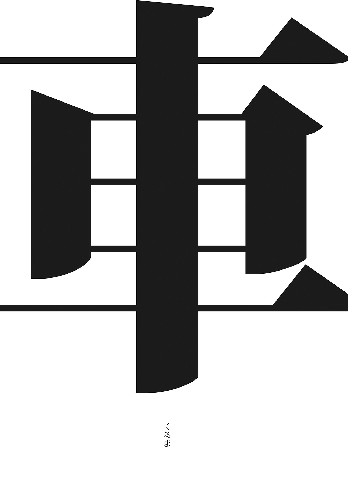

| 「極」怖い話 罠 (竹書房文庫) | |
| 加藤一 | |
| 竹書房 (2009) | |
この作品は縦書きでレイアウトされています。
また、ご覧になる機種により、表示の差異が認められることがあります。
一部の漢字が簡略字で表示されていることがあります。
イラスト 浅沼テイジ（ネコノテンシスタジオ）
まえがき
恐怖というのはなかなか定義が難しい。
長年、怪談につきあってきたが、何が怖くて何が怖くないのかが段々自分でもわからなくなってくることが年に何回かある。何を見ても怖くなる時期と、何を見ても怖くない時期が波のように交互にやってくる。
恐怖とは、字義通りに言えば「恐ろしいこと」である。
では、我々は何を以て「恐ろしい」、「怖い」と感じるのか。
呪いだ、祟りだ、幽霊だ、と原因を挙げ連ねることはできるのだけど、呪いも幽霊も怖くない、という人だって珍しくない。そんなものよりもっと怖いモノがある、と言って別の何かを挙げる人もいる。
怪談屋の好奇心から「それは何？」と聞いてみると、
「自分がこの世からいなくなること」
「地位・仕事・財産や、いつも通りの生活が失われること」
「会いたいと思っている誰かに、もう二度と会えなくなること」
そういったものが挙がる。つまりは、あらゆる喪失感に対する恐れが、恐怖。
それらを突き詰めていくと究極的には「死」に繋がるわけで、死を連想させるもの、死を連想することそのものが「恐怖」であろうと言える。まだ起きていないが、これから起こる可能性がある何らかの喪失感。それへの予感が恐怖、ということだろうか。
世に言う怪談は、そうした喪失感に続く暗い夜道を予感させるが故に怖いのだろうか。
考えすぎるとわからなくなる。
そして、多くの人は考えるのをやめる。そんなことあり得ない、起こりっこないさと自分を騙して、起こり得る恐怖というものをなるべく想像しないようにする。恐怖感を麻痺させることで、僕らは平常心を保ち、希望を胸に幸せな気持ちで日々を過ごせる。いつか来る終わりの日は永久に来ないような、そんな錯覚を自ら信じ込もうとする。
でもそれは嘘。
僕らはいつか来る終わりの日をうっすらと予感し、気付きたくないことに気付いてしまう。囁 き声に惑わされて、きつく塞 いでいた瞼 を開いてしまう。
じゃ、行きましょうか。
薄目を開いたときにしか見えない世界へ。
著者
さて。幽霊、とされるものはいったいどんな風に見えるものなのか。
これは、多くの怪談好きにとって興味深いところであると思うし、同時に〈見えた人〉の間ですら、いろいろと意見が分かれるところでもある。
・黒い影のように見えた
・靄 のように見えた
・半透明に見えた
・くっきりと見えた
その結果、どんなものが見えたかはさておき、概ねこのような目撃証言となることが多いようだ。
雨宮淳司氏の【恐怖箱 怪医】（二〇〇八年）のゲラをチェックしていて、前書きの一文を巡ってこのようなやりとりがあった。
雨宮氏は、文中で「霊気耀 い立つ」という表現を使われている。これについて、
「～自分の数少ない霊体験で実地にそんな感じを受けたので、妙にこだわっている表現です。アレは天井にへばり付いていましたが、プレデターが半分消えかかっているような、モヤモヤというより、キラキラと空気を耀わせて移動してきました」
と仰っておられた。
具体的にどんなことが起きたのかについては、いずれ詳しく雨宮氏が書かれるだろうと思うので、ここではこれ以上は触れない。後日の楽しみとしていただきたい。
この「プレデターが半分消えかかっているような～」というのは、映画【プレデター】に登場する戦闘的宇宙人が、空気中にその身体を溶かし込むように隠れる様子の演出に似ているということなのだが、実はこれとよく似たものを僕も見たことがある。
今から十八年ほど前。勁文社から最初の「超」怖い話を上梓し、怪談に仕事として携わることになった、そのごく初期の頃。僕は当時の友人達によって、しばしば心霊スポット巡りに駆り出されていた。当時大学生だった友人達が「あそこは出るらしい、ここは凄いらしい」という話を聞きつけてきては、真夜中に車を出して現地に乗り付ける、というような感じだった。
もちろん、ただそれらしい場所に行っただけでは、何事が起きているのかもわからないので、〈見える〉と宣言している友人を恃 んでレーダー代わりを務めてもらい、ここが怪しい、あそこが怪しい、と彼等の導きに従って灯りのない森や林の中を彷徨 い歩いた。
このとき、少し面白い体験をした。
雑木林を抜ける遊歩道を歩いていると、頭上から風が樹々を揺らすギシギシという音が聞こえてくる。殊更 怖いものだから、そうした音にいちいち反応しては「今のなに？ 今のなに？」と怯えた声を上げて頭上を確かめる。
公園内の歩道灯からやや離れ、街灯りを仄かに照り返す暗い梢 を見上げると、そこにある空気が見えた。
空気が見える──というこの表現が正しいのかどうかは少々わかりかねるのだが、梢の近く、枝の間に、空気中が歪んで見える場所があった。
この、「空気が歪む」という状態をもう少し詳しく説明するなら、湯が沸騰 している薬罐 の注ぎ口を横から覗き込んだような具合だった。白い湯気が立っているのではなく、蜃気楼のように空気が屈曲して、背景が見えているのに何か違和感を感じさせる、といったような。普段見えない空気が、何らかの形を持っているという様子が、揺らめきながらその瞬間だけ形を為すような、そういった感じだ。
それが、熱気や極度の温度差、湿気とはまったく無縁の場所にふわりと揺れ立つ。
雨宮氏が「耀い立つ」と表現されたものは、これだったかとも思う。
初めてこれを見たのは東京都中野区にある北江古田公園の遊歩道で、近隣のジョギング用道路のひとつとなっている場所だ。北江古田公園に関する怪談は初期の「超」怖い話などでも紹介していて枚挙に暇 がないが、この「耀い立つ空気」を目撃したのはここだけではない。人の気配や熱源のない真夜中の墓地であったり、未明の自然公園であったり、人工的な設備のない山の中であったり、新宿の地下道であったりした。
そのうちの幾つかは、もしかしたら本当に温度差から来る大気の揺れが見えていただけだったのかもしれない。柳が幽霊に見えるのと同じで、昼間の熱気が放出された地面や樹々を見て、そうと思い込んでいただけなのかもしれない。
だが「空気が歪んで見えたんだけど。というか、何か見えるんだけど」と同行する〈見える友人〉に確かめたところ、彼等は大概ニヤリと笑って「そこまで見えればあと少しだな」などと言う。
「俺達には、もっとくっきり見えてるんだよ」
それは自身が持つ異能力に関する自慢というよりは、自身の境遇への巻き添えを欲しがっているようなニュアンスだった。その招きに応じてもっと踏み込みたいような、しかしもう勘弁してほしいような、見えてしまったらこの後ずっとつきまとわれるんじゃないかという恐れのような、そういう不安感が去来したことを記憶している。
＊ ＊ ＊
これは数年前の夏の話になる。
友人と落ち合う約束をしていた川里さんは、最寄りの駅へと急いでいた。
改札を入り、ほんの少し冷房が効いた駅舎の中を抜けてホームへ降り立つと、そこには茹だるような熱気が渦巻いていた。
時刻表によれば、待ち合わせ場所へ向かう電車は、まだもう暫く来ないらしい。
（涼しい駅舎に戻ろうか。しかしもう一度階段を上り降りするのは厭だな）
川里さんは思考を奪う気怠い熱波に身を委ねて、ホームの真ん中辺りにぼんやりと立ち尽くしていた。
なかなか来る気配のない電車を待ち侘びてホームの端を眺めているうちに、違和感を感じた。
視界には灰色のホーム、そして白線。
その白線が歪んで見えた。
白線が雑な引き方をしてあったとか、ラッシュのたびに踏み付けられ経年劣化で──といった理由ではない。
白線がズレている。
揺らめく、耀う、といった朧気なものでもなかった。
白線の上に、ちょうどサッカーボールくらいの大きさのレンズを置いたような感じ。
「......え？」
熱気で惚 けていたのかと思って、我に返った。
だが、我に返っても目を擦ってみても、白線の上の歪みは消え去る気配を見せない。
あろうことか、それは動き始めた。
白線の上を、左から右へ、じわじわ、ずるずると動く。
瞬間、たじろいだ。
周囲を見回すが、ホームで列車を待つ他の人々は誰一人として気付いている様子はない。
周囲と白線の上を交互に見比べても、白線の上を陣取る〈歪んだ塊のような何か〉が消え去ることはなかった。
〈何か〉は白線を辿るように進み、川里さんの目の前に差し掛かった。
そこへ、電車が入線してきた。
同時に〈何か〉は川里さんからは見えなくなった。
電車の風圧に掻き消されたのかどうかもわからない。だが、見えなくなっただけで、サッカーボール大の〈何か〉がまだそこにいるのかもしれない。
そう考えると、白線を跨 ぐのは怖くなった。
かといって、ホームに一人取り残されるのも怖くて、慌てて到着した電車に飛び乗った。
どうやら急行列車の通過待ちだったようで、電車は扉を開け放ったまま停まっていた。
川里さんは、電車の中にまで〈何か〉が入り込んできていやしないかと、飛び込んだ車両の床を睨 め回したが、特に怪しい歪みは見あたらなかった。
漸 く電車が動き出し安堵の吐息を漏らしたところで、正面に座っていた老人の視線に気付いた。老人は川里さんの足下を、ジッと見つめていた。
老人が何を見ていたのかは、わからない。
ところで、サッカーボール大の〈何か〉は、真球形ではなかったらしい。
「あれは......なんというか人の頭のような形をしていて......」
以来、川里さんは白線をよく確かめてから電車に乗る癖が付いてしまった。
たぶん、この「歪んで見えて」というのは幽霊の見え方のごく初級編というか、入門編なのではないかとも思う。恐らく大多数のよく似た現象は、「自然現象か気のせい」に含まれるのだろう。
だが、その「気のせい」と片付けたものの中に、実はそうではないものが混じっているのかもしれない。怪談は九十九％の思い過ごしと、思い過ごしではどうしても説明できない一％の事象によって成り立っているとも言える。残り一％までもを完全に〈あり得ない〉と説明しきることは、恐らく難しい。そこに否定しきれない怪異の入り口がある。
＊ ＊ ＊
道代さんのご主人と息子さんの場合。
なんだかパッとしない日というのはあるもので、この日、道代さんは家族の夕飯を作るのが億劫 になってしまった。
「......そういうわけでお願いだから、晩ご飯は二人で外で食べてきてくれない？」
男二人で思いつく外食の定番と言えば、ラーメン屋辺りが相場であるようで、特に不満もなく親子二人で連れ立って出掛けていった。
ラーメンを啜 って帰ってきたのが夜の九時頃だったか。
「お母さん！ 凄いよ！ すんごいよ！」
父子ともども子犬のような興奮振りで帰ってきた。
「何が？ どうしたの」
「凄いの見た！ 出た！」
興奮して要領を得ない二人から話を聞いてみると、こういうことだった。
道代さん一家の自宅の近くには、市民球場と公園がある。
ラーメン屋からの帰途、その付近を通りがかったのだという。
公園から自宅へ、マンションや個人経営の小さな工場などが並ぶ道を通る。
男二人で、とぼとぼとその道を歩いているときだった。
建物と建物が雑然と並ぶ通り沿いに、高さ二メートルほどの石柱があった。
まるで慰霊碑のような佇まいだったが、何か所縁 のあるものというわけでもない。以前ここに建っていた建物を取り壊した後に残されたコンクリ柱の名残であろう。その後に何が建つでもないようで、久しく柱だけがズンと聳 えている。見慣れた風景ではあるが、普段なら視界の隅にも留まらない程度のものだった。
この日、二人の進行方向に中年の女性が立っていた。
遠目に見えたその女性は、どこにでもいる所謂 おばちゃんの類。
エプロン姿でパーマを当てた髪は肩ぐらいまであった。
買い物帰りの主婦そのまんまの装いに、何ら不思議はない。
が、そのおばちゃんは件 のコンクリ柱の上 に立っていた。
おばちゃんは何を見る、何に気を向けるといった風でもなく、ただぼんやりと立ち尽くしていた。
息子さんは、「変なおばちゃんが立ってるなあ」とは思った。
夜、柱の上。それは変だ。
そして、背丈は子供のように小さく、最初、黒い影のように見えた。
父親が反応しないので、息子さんも「おかしな人と目を合わせちゃダメ」というくらいのつもりでいようとしたのだが、彼はあることに気付いた。
歩道と並行する道路に車が走っていく。
そのヘッドライトが、件のおばちゃんを照らした。
ライトは、おばちゃんを透過した。
ヘッドライトを反射せず、影も作らず、動く光源に合わせて影の具合が変わったりもしない。
まるで、映写機で映したもののように、そこにいるという感覚がない。
父子はおばちゃんのいるコンクリ柱に向かって歩いていくのだが、近付くに連れておばちゃんの姿が薄くなっていった。
遠くから見えていたときには、もっとくっきりと人の形が見えていたのが、段々とその姿が希薄になり、背景が透けて浮かび上がっていく。
そして、コンクリ柱の横を通り過ぎるときには、おばちゃんの姿は完全に消失してしまった。この間、父子はおばちゃんのほうに向かって進んでいるわけで、おばちゃんが柱を降りる様子はなかった。
柱を通り過ぎたところで、息子さんが呟いた。
「今、変なおばちゃんがいたよね？」
息子さんの問いに、ご主人も答えた。
「......エプロン着けてパーマを当てた髪が肩ぐらいの長さの？」
どうやら、ご主人も息子さんが目撃していたのとまったく同じおばちゃんを見ていた様子だった。
ただ、ご主人は咄 嗟 に「気のせい」と思った。または、「そんな人もいる」と。父の威厳といったものを示さねばと思ったわけではないのだろうが、息子さんに確かめるまでもなく「変な人がいる気がするけど、これは気のせい」と決めて掛かっていたらしい。
親子の会話は大切だと思う。
＊ ＊ ＊
道代さんご一家は、ご主人、息子さんがそれぞれ〈見る人〉であるらしい。
以前、道代さんとそのご主人は、同じ職場で働いていた。
年代物の建物が並ぶ工場は、だだっ広い敷地の中にあった。十八時を過ぎると残業扱いになり、節電のため電灯も消されてしまう。このため、工場の脇を貫く長い廊下などはぼんやりと暗くて、大層薄気味が悪かった。
そろそろ一日の仕事を終えようかという頃。例によって、廊下の灯りは落とされ、辺りはひっそりと薄暗くなっていた。
ご主人は職場の廊下の向こう側から、女性社員がこちらに歩いてくるのを見かけた。
灯りが消えているので、あまりはっきりとはわからなかったのだが、特徴的な制服が見て取れた。この職場では社員は制服着用となっていて、白いブラウスに青のベスト、首に赤い蝶ネクタイ、足下にはグレーのズボン、という装いだった。
咄嗟に同じ部署の誰かだろうと思ったご主人は、近付いてきた女性社員に声を掛けた。
「──お疲れ様です。お先に失礼しま......」
頭を下げて、女性社員の足下に視線を落とす。
挨拶をしながら、〈何かおかしい〉と気付いた。
すたすたと歩くグレーのズボンの途中くらいから、足がうっすらと霞んでいる。
足がない。
足が途中で消えている。
足音も聞こえない。
慌てて頭を上げ、そのまま背後を振り向いたのだが、たった今すれ違ったばかりの女性社員の姿はどこにもなく、暗い廊下にご主人一人だけがぽつんと立っていた。
＊ ＊ ＊
道代さんの息子さんは、二〇〇八年に上梓した【「極」怖い話】の「家」に纏 わる話で、幼い身空でいろいろ目撃してしまったというトラウマの持ち主なのだが、小学五年生ほどに成長した今でも、やはりいろいろ見えるらしい。
以前のケースでも、前述の「路上のおばちゃん」の場合でも同様だったらしいのだが、彼の場合まず最初に、黒い影が見えるのだそうだ。
ちょうど、光が当たるとできる影のように、周囲より黒く見える。近いのは能・狂言・浄瑠璃などの舞台にいる黒子のような感じで、人の形を採っていてもそれは周囲の風景に一層沈んで見えるという。
息子さんが見えるときは、まず大概はこの「黒い影」の形で見えるため、確かめるより前に「ああ、幽霊だ」とわかるようだ。
彼は、道代さんのご実家でもそれとわかるものを見ている。
天井に人影が貼り付いていたのだそうだ。
例によってそれは黒子のように黒い。
人間と同じくらいの大きさのヤモリが、ぴらぴらの平面になって貼り付いているような感じを想像すれば良いのかもしれない。
彼は、この天井に貼り付く人影を、二日連続で目撃した。
母の実家であるから、怖くても帰りたくてもどうにもならないところがまた気の毒なのだが、二日目は一日目と若干違っていた。
天井に貼り付く人影という点は同じなのだが、二日目の人影は黒い影のままではなく、片足が見えた。
人影の片方のズボンの裾が、捲れていたのだそうだ。
こうした幽霊について、ご主人も息子さんも目撃した直後には「凄いの見た！」と興奮気味に話題にしてくるそうなのだが、時間が経つと段々と口が重くなって、あまり説明をしたがらなくなる。
これは、見える人、或いは見えた人などに多い傾向で、何度も繰り返し説明をするのが厭なのか、思い出したくないのか。見えない人、見たくて堪らない人がしつこく話を聞きたがったりすると、「大したことない」「無理して見るもんじゃない」と逆に諫 められたりもしてしまう。
息子さんの場合、幽霊はすぐにそれとわかるのに、愉快な格好或いは若干エキセントリックなファッションの人を見ると、それが生身の人間であっても妖怪と勘違いしてしまうらしい。幽霊が見える人の中には、この世のモノでないものと人間との区別が付きにくくて、生きていくのがちょっと難儀という人がしばしばいるのだが、彼もそのクチのようだ。
＊ ＊ ＊
では、この〈見える〉というのがご主人と息子さんだけの特性なのかと言うと、どうもそうでもないらしい。当の道代さんが十代の頃に、一度だけ凄いのを見ている。
それは、真夜中の部屋の中でのこと。
まだ少女であった道代さんは、自分の部屋の中がうっすらと明るいことに気付いて目を覚ました。
寝床から見上げると、部屋のちょうど真ん中辺りに若い女性の首が浮いていた。
首だけで胴体や手足はない。
室内には光源になるようなものはなかったのだが、生首は蛍光灯のように、それ自体が若干青みがかった白い光を明るく放っていた。
髪の毛や顔の輪 郭 部分は青灰色がかって、室内の闇に映える。
顔や首、肌に当たる部分も自らが放つ光と同じ色に輝いていた。
しかも、睫毛 の先まで鮮明に見えた。
胴のない生首が自分の部屋に浮いている。それだけで既に驚くべき状態なのだが、道代さんにとっては睫毛の先までくっきり見えるということは、別の意味で驚きだった。
当時、道代さんは極度の近眼で、コンタクトなしではものが真っ当に見えなかった。当然、眠るときにはコンタクトを外しているのだが、近眼の人間の視界というのはちょうどレンブラントの絵画で描かれる人物像のように、目の前にある対象物のあらゆる輪郭がぼやけてしまい、ほとんど何も見えない。
ところが、暗闇に浮かぶその生首は、明るいところでコンタクトを付けているときよりも遙かに明瞭に、その細部までがはっきりと見えた。もし、視力が良ければ普通の人間の顔もこれほど細かく見えるものなのか、とむしろ感動した。
こうしたモノが出現する折には、しばしば金縛りを伴う。このため、寝ぼけたのではないか、レム睡眠とノンレム睡眠が──といった科学的説明を当てはめられてしまうこともままある。
しかし、実にありがたいことに、このとき道代さんは身体の自由は奪われなかった。
寝床から身体を起こし、生首を真正面からまじまじと見つめてみた。
そして、美しいと思った。
生首の主は女優張りの超べっぴんなお姉さん。
恐怖心を抱かなかったせいなのか、お姉さんの美しさに見惚れていたおかげなのか、金縛ったりしないところも優しいなあ、とお姉さんに感謝した、という。
それにしても親子三人、それぞれが違った見え方をするというのも興味深いところだ。
＊ ＊ ＊
親子、で思い出したことをもうひとつ。僕の身内の話になる。
怪談の仕事はしていても、身内にそうした怪事が頻発するわけでもないので、普段こうした話題が身内から出てくることはあまりないのだけれど、先頃、義妹とゆっくり会話をする機会に恵まれたとき、こんな話が出た。
義妹がまだ学生だった頃のこと。
当時、父、母、姉、そして義妹の四人家族だった。お父さんは少し身体を悪くされていたのだが、さほど緊急性のある容態でもなかったらしい。
それがいつから現れていたのかは記憶も定かではないのだが、いつの頃からか家の中の雰囲気が違って感じられるように思えた。
家の中が暗い──。一言で言えばそういう印象であったらしい。
蛍光灯を換える直前のような暗さ。そして、それを新しくしても何か薄暗く重苦しいような、そういう暗さを感じた。
それは当初、感覚的なものだと思っていた。
あるとき、義妹はそれに気付いた。
実家の室内の壁に、染みのようなものができていた。長く暮らした家だ。少しくらいの汚れがあっても不思議ではない。
ただそれは、具体的な形を採っていた。
襤褸 を纏い、その裾を引きずるようにしている。
襤褸の隙間から伸びた腕が長い棒切れを握りしめている。
棒切れの先には長く鋭く大きな鎌が付いていた。
言うなれば──死神。
西洋のホラーには付きものの、あの死神そのものの姿が壁にくっきりと浮かび上がっている。
何かの偶然か。それとも何の予兆なのか、と思った。
目に見えて具体的な形を採っているのは明らかなのだが、そのことを家族の誰も話題にしない。姉も、母も言及しない。家族がそれに気付いていないのか、気付いてはいるけれどもそれについて触れることを避けているのかはわからなかった。
ただそれは、酷く陰気で酷く不吉なものであるように思われた。
それから数カ月して、義妹のお父さんが亡くなられた。
容態は家族が案じていた以上に思わしくなかった。
壁に浮き上がった死神の姿は、いつの間にか消えていた。
この話を聞いて暫く経った昨年の秋頃、義妹からメールを貰った。
昨年、義妹のお姉さんが結婚された。
その折、お姉さんのご友人が、亡くなったお父さんを式場で見かけたという。
式の最後、新婦がお母さんに宛てた手紙を読んでいたときのことだ。
式場の片隅で、お姉さんが読み上げる感謝の手紙に、じっと耳を傾け新婦の晴れ姿に見入っていたお父さんの姿があった。
苦労された上に病気で亡くなったお父さんだったが、このときばかりは新婦の父として恥ずかしくないような、きちんとした礼服姿であったらしい。
新婦が手紙を読み終え会場に拍手の渦が巻き起こると、礼服姿のお父さんは〈満足した、心残りは晴れた〉といった具合にゆっくりと消えていった。
式を終えた後、お姉さんのご友人からこの話を聞いて、義妹はとても嬉しくそして残念に思った。
「このときばかりは、霊感が強かったらなあ、会いたかったなあと思ってしまいました」
僕には、霊は見えない。たぶん、見えていない。
恐らく僕以外の多くの人にも霊は見えない。
しかしそれは、そうとは思っていないから見えていないと信じているだけで、実は見えているのかもしれない。気付かなかっただけなのかもしれない。
見える人々の多くは、「そんなにいいもんでもない」と零 すけれども、やはりもし叶 うなら見えればよかった、と思うときもある。
ただそれは、望んだ状況で、望んだタイミングで、望んだ目当ての人だけが見られるなら、という条件付きの話で、望み通りにはならないからこそ、見えない人間が憧れている以上に、〈見える人〉にとっては厄介な力なのかもしれない。
戦争に起因する怪談は、恐らく大きく分けて二通りあると思う。
ひとつは激戦地に兵隊が出る、或いは国内の基地などにやはり兵隊が出るというもの。旧日本軍の兵隊の霊が......というような目撃談は戦後六十数年経った今も絶えない。
もうひとつは、空襲などによって激しい被害を受けた地域で亡くなった民間人が出るもの。空襲怪談については東京を始めとする、大空襲の被害を受けた都市圏に伝えられていることが多いのだが、やはり上陸してきた米軍による地上戦が行われた沖縄、原爆を投下された広島・長崎の怪談は群を抜いて数が多いようだ。
＊ ＊ ＊
城島さんの高校の修学旅行の訪問先は、沖縄だった。
西日本の修学旅行は戦跡訪問が多いようで、彼女達の沖縄旅行も南の島を堪能するといったことだけではなく、太平洋戦争の最激戦地のひとつを見学するというものだった。
沖縄には各地に「ガマ」と呼ばれる場所がある。
これは、自然の鍾乳洞などの洞窟を利用した一種の避難壕で、日本兵や非戦闘員が避難するシェルターの役目を果たした。知識としては知っていても、その背景までを学校で学ぶ機会はない。そこで、実際にガマを見学する前にこうしたものが必要であった背景について戦後生まれの城島さん達が学ぶ機会として、米軍が撮影した当時の映像が上映された。
戦争に関する話は、日常的に接する機会がない特異な前提に関連したものが多い。戦争怪談も同様である。それ故、少々の予備知識が必要となる場合もある。ここでは「沖縄とガマを巡る背景」について、城島さん達が見た映像の代わりに少し触れておこう。
太平洋戦争は、欧州戦争に端を発する第二次世界大戦のうち、特に一九四一年に勃発した日米間の戦争を指す。太平洋戦争 という呼び名は戦勝国となったアメリカ側の公式名で、戦中の日本側の公式名は大東亜戦争と呼ばれたが、敗戦国側の公式名で呼ばれることは少ない。また、戦争の記憶が遠くなり、当時を生きた人が減るに連れて、太平洋戦争と第二次世界大戦の明確な区別もなされなくなってきた。
この戦争の最末期にあって、南方諸島を攻略しながら北上してきた米軍が、日本本土攻撃の足掛かりとするために攻め落とそうとしたのが沖縄である。それまでは、艦砲や航空爆撃による攻撃、遠く南方の密林での野戦が主体であったが、旧日本軍の艦船が次々に沈められ制海権が米軍の手に落ちると、いよいよ非戦闘員を巻き込んでの上陸戦が始まった。
日本側にとって沖縄陥落は、本土を直接攻撃できる爆撃機の発着場と米軍艦船の補給基地を、米軍に与えることを意味する。軍には徹底抗戦が指令された。
一方、米軍側にも徹底攻略が指令されていた。
まず、沖縄戦の前哨戦として硫黄島攻防戦が行われた。これも米軍が日本本土を直接攻撃できる拠点を手に入れるための戦略のひとつで、太平洋の真ん中の何もない──しかし日本の喉元とも言える硫黄島を巡って、日本軍と米軍は文字通りの死闘を繰り広げることになった。日本側の硫黄島守備隊は島を縦横にくりぬいた坑道を行き来し、想像以上の激しい抵抗によって米軍に多大な被害を与え続け、この攻防戦を戦った。
結果的に二万余りの日本軍は、七万の米軍の艦砲と上陸軍の前に、少しでも本土・沖縄への攻撃が遅れるように、と四十日以上も粘った上で全滅した。日本側で捕虜として生き残った者は千人余りだった。
しかし、結果的にこのことが沖縄戦に災いした。
〈日本兵は、坑道 を使って神出鬼没に現れる。しかも、死ぬまで降伏しない〉
米軍は、硫黄島攻防戦で相対した日本兵に対して、そういった戦訓を得た。歴史的に陸戦が多いヨーロッパの戦場などでは、「これ以上は戦っても無意味」という状況に陥れば、白旗を揚げて降伏し捕虜になる。そして、彼等の感覚としては、捕虜になるのは喜ばしいことではないにせよ、生き恥というほど恥ずかしいものでもなく、「生きていてこそ挽回の機会もある」と考える。故に、降伏勧告、投降勧告というものが存在する。
ところが、当時の日本では「生きて虜囚 の辱めを受けず」「生き恥を晒すくらいなら死ぬべき」という戦陣訓が徹底されていたため、文字通り死ぬまで戦った。
米軍にとって多くの日本兵は、「無駄死にでも諦めない」という恐るべき敵であった。
そして、この米軍側にとっての恐怖は、彼等を沖縄戦での無差別な殺戮 行為に駆り立てることになってしまった。日本兵は生きている限り向かってくる、と。
当時の沖縄は、軍人と軍属（民間人だが、軍隊に籍を置く者）と非戦闘員が混在していた。軍の命令が何より優先された時代であったことは確かだが、同時に日本軍と距離を置いたところで、これまで敵対してきた米軍から独力で身を守れる保証があるわけでもなく、生き延びるためには結局自国軍に付いていくより他になかった。
弾も食糧も水も尽き、それでも投降することができなかったのは、生きて虜囚の～という戦陣訓があったからとされている。もちろん、それもあっただろうけれども、実際にはそれだけではなかった。
米軍の投入した火炎放射器への恐怖が大きい。
火炎放射器は、可燃性の燃料をホースの先から噴射し、そこに火を点けるバーナーのような兵器である。米軍は、硫黄島攻防戦で坑道の中に潜む日本兵を文字通り炙 り出すために、狭い坑道に向けて火炎放射器を使った。蟻のように地下深くに立てこもっていた日本兵の多くは、この兵器によって地下陣地ごと焼き払われた。炎が届かない場合も、熱で蒸し焼きにすると同時に、狭い坑道の酸素を奪い、煙を充満させ、そこに潜む者達を窒息に追い込んだ。
その兵器は、沖縄戦でも多用された。
自然にできた鍾乳洞を利用した避難壕──ガマは、米軍にとっては「敵が詰まったチューブ」であり、効率よく攻撃することができるという場所でもあった。
ガマに隠れているのは日本兵だけでなく非戦闘員も多かった。
本来、ハーグ陸戦規定という国際法により、非戦闘員は攻撃してはならないことになっていたはずだが、その約束は守られなかった。非戦闘員であるなし、女子供年寄りであるなしに関わらず、それらは全て米軍にとって駆逐の対象とされた。
城島さん達が見せられた映像の中に、米軍がガマの前に陣取ってその洞の奥に声を掛けている、というものがあった。
米兵はガマに向かって「デテコイ、デテコイ」と片言の日本語で呼び掛けていた。
ガマの中に潜む人々は、言葉通りに出て行くことができなかった。恐ろしかったのだ。
出て行けば、米兵に殺される。日本兵がいれば、戦陣訓に沿って死ねと言われることもあったと言われる。米兵への恐怖心から死を選ぶ人も多くいた。
それを待ち構える米軍側にも、投降を受け入れる部隊と、声を掛けておいて敵の有無を確認し、人の気配があるとなれば容赦なく火炎を浴びせるという部隊とがあった。米軍もまた、巻き添えを覚悟で予想外の反撃を企てる日本人が恐ろしかったのだ。
ガマに隠れる側にとっては、自分達に「デテコイ」と声を掛けているのが、どちらなのかわからない。
故に、ガマの人々は息を潜め続けるより他に手立てがなかった。
映像の中の米兵は、「デテコイ、デテコイ」と声を掛け続けていた。
映像を見終えた後、城島さん達はいよいよ実物のガマを見学することとなった。
ひめゆりの塔にあるものばかりが有名だが、ガマは沖縄の随所に散在していた。
パッと見た感じでは、ごくありふれた洞にしか見えない。地面にぽっかり空いた隙間で、枯葉や草に半ば埋もれている。恐る恐る覗き込んでみると、それは洞というよりも岩の裂け目にできたほんの僅かな隙間にしか見えなかった。
こんな狭いところに何人も。そして、そこに──。
ついさっき見たばかりの、火炎放射器が光線のような炎を吐き出す光景が思い出された。
入り口付近に立ちすくんでいると、不意に背後から声が聞こえた。
「──デテコイ、デテコイ！」
片言の日本語にどきりとした。
身を固くして振り向くと、クラスの男子が先程の米兵の声色を真似ていた。
「バッ、バカじゃないの！」
城島さんは、咄嗟に叫んだ。
「ふざけんなら出てけ！」
やっていいことと悪いことがある。悪ふざけにも程がある。
男子達はあの映像も、案内してくれた人たちの話も、本当に話半分にしか聞いていなかったのかと思うと、一層腹立たしくなった。
彼等は悪びれる様子もなく、城島さん達を冷やかして笑っていた。
そのとき、同級生の女子が城島さんの耳元にそっと口を寄せて囁いた。
「あいつら、絶対に祟られるね」
城島さんもその通りだと思った。怒気に駆られて、祟られればいい、というくらいに思った。同級生は、こう続けた。
「......ここにいる人たち、さっきからみんな怒ってるもん」
顔の融けたお爺さん。火ぶくれした兵隊さん。
いずれも激しく焼け爛 れた人々が、ふざけた男子に向かって口々に「出てけ、出てけ」と叫んでいた、という。
＊ ＊ ＊
修学旅行とは少々毛色が違うのだが、国内数カ所の事業体が主催する「青少年の船」という催しがある。これは、地域の青少年を募って船旅を共にし、互いの理解と交流を深めよう、というものらしい。多くの少年少女が参加するところは修学旅行にも似ているが、同学年ばかりではないため、年上や年下の友人を作る機会にも繋がる。
ある年のこと。南九州のとある港を出発した「青少年の船」は、多くの子供達を乗せて一路沖縄へ向かった。
用意されている日中のスケジュールをこなし、夕食を終えると漸く自由時間になった。
テレビや漫画と切り離された船上の生活では、人との語らいが何よりの楽しみで、話は幾らでも盛り上がった。
気が付けば消灯時間をとうに過ぎ、時計の針は夜十一時を回っていたが、それでも皆寝付けなくて、興奮気味にいろいろな話題が飛び出した。
沖縄と言えば、戦争。戦争と言えば、死人。死人と言えば──出る。
となれば、話題は自然と怪談ばかりになっていく。
見た、出た、といったささやかな話から始まって、一人ではトイレに行けないくらいの雰囲気にまでなってきたところで、六年生が「えへん」と咳払いをした。
「......じゃあ、こういう話を知ってるか？」
六年生は、最上級生らしく大人ぶった口ぶりで下級生達を怖がらせる。
「沖縄ってさ。とにかく戦争で人が沢山死んでるだろ？ で、さあ」
本当のところ、この六年生にしたところでどれほど戦争について詳しく知っているというわけでもないのだけれど、数歳年上の沽券 に掛けて、下級生達よりは多く見聞してきた戦争についての話を、身振り手振りや擬音を織り交ぜて話した。
「マシンガンを持ったアメリカ兵が、逃げ惑う人たちを後ろからダダダダダダッ！ って撃ちまくって......」
と、そのとき。
──ドンドンドンドンドンドンドンドンドン！
部屋全体が激しく鳴った。
屋根、床、壁、窓、部屋の全ての方向から、音が響く。
「きゃあ！」
「わあ！」
あまりのタイミングの良さ、いや悪さに、息を潜めて聞いていた子供達が泣き出した。
青少年の船では、規律が重んじられる。消灯の決まりを破っていつまでも起きていたから、見回りの大人が怒ったのかもしれない。そう考えて慌てて布団を被る子供もいた。
皆、寝たふりを決め込んで、息を潜めた。
ドアを開ける音はなく、外の廊下を歩く足音もない。
見回りもないようだ。
「......なんだよ。誰のイタズラだよ。脅かしやがって」
漸く安堵 が漏れた。
そうなると、やはり話の続きが気になる。まだ、幽霊が出てくるところまで話を聞いていない。なんとも未消化な気分で、このままじゃ眠れない。
「ねえ、それでどうなったの？」
と、六年生に声を掛けたのだが返事がない。
「ねえ......」
先程まで余裕綽 々 だった六年生の話し手は、四つん這いになってベッドに頭を擦り付けていた。
手を組み、何か小さな声でぶつぶつと呟いている。耳を澄ましてみると、
「ごめんなさいごめんなさいごめんなさいごめんなさいごめんなさいごめんなさい......」
と一心不乱に繰り返していた。それは子供の目にも異様な光景と映った。
先程の話の続きとは思えない。
だいたい、自分から怖い話をしていた癖に、なんで──。
どうしたのか。何かあったのか。
いや、何か見たのか？
しかし、誰もその理由を訊く気にはなれなかった。
理由を聞いてしまったら、残りの日程をまともに過ごせないような気がした。
ここは船の上なのだ。逃げ場はどこにもない。
皆、それ以上言葉を掛けず、それぞれの布団の中に潜り込む。
布団を被っても何度寝返りを打ってみても、「ごめんなさいごめんなさい」と唱え続ける声が止めどなく耳の奥に染み込んできた。
結局、六年生の「ごめんなさい」は、朝まで続いた。
翌朝、目覚めてみると六年生はまだ唱えていた。
一睡もできなかったようだった。
次の日からその六年生は日がな一日、惚けたように過ごした。声を掛けても上の空で、抜け殻のように無反応だった。
あの日、あの晩、何があったのかについて、理由を訊けないまま船を下りた。
＊ ＊ ＊
鷹島 さんが小学生の頃に行った、修学旅行での話。
修学旅行の行き先と言えば、東京、奈良・京都辺りが定番かと思っていたが、九州の小学生の修学旅行は長崎が多いのだそうだ。
出島やグラバー邸などの歴史的遺物の他、夜のホテルで被爆者の方から戦争体験や原爆に関する被爆体験談などを聞いて、戦争の恐ろしさを学ぶ。
戦争経験者の多くは高齢になり、戦争を「子供時代の経験」として記憶している世代も少なくなった。戦争が本土に及ぶ理由、非戦闘員の居住区が空爆を受ける理由などについては知る由もなく、ただただ毎日が死と隣り合わせの子供時代。
ひたすら続く〈死ぬかもしれない〉という恐怖。それに終わりをもたらしたのは、過去最大級の恐怖と破壊──原爆の投下である。
戦争体験者の記憶の奥底にこびりついた「殺されるかもしれない」という恐怖は、原爆という象徴的な兵器に重ね合わされ、戦争とそれに連なる全てのものに対する嫌悪感と憎悪に結びつく。
戦争体験を語り継ぐ人々は、そうした戦争を知らない小学生に「戦争になったら、自分が殺されるかもしれない」という恐怖心を訴える。
小学生達は、そうした話を老人の昔話として聞く。西日本の小学生の間ではこうした反戦に関連した学習の機会は多く、小学生達は真剣な眼差しで体験談に耳を傾けるが、中には「またか」といった風に軽く聞き流している子供も少なくはなかった。
自分達の生活の場が戦場になる、再び原爆を投下される──その可能性は、現代においては日常として実感できるほど高いものではない。ましてや小学生達に、その恐怖を想像し我が事として感じよというのも酷な話で、やはりどこか他人事であるように感じられた。
その夜のこと。
体験談の語り部が帰っていって、鷹島さん達はそれぞれの部屋に戻った。
僅かな自由時間もあったが、ホテルのロビーを夜遅くまで彷徨 くわけにはいかず、また先生達の見回りもあってそれぞれの部屋から勝手に出歩くこともできない。
それでも普段とは違う、同級生と一緒に過ごす夜に、皆少々興奮気味だった。
消灯時間は夜十時頃と決められていたが、日頃夜更かしに慣れている子供が多いせいか、それともやはりこういう特別な場所、特別な晩であるせいか、誰も寝ようとはしない。
大部屋に敷かれた布団の上に車座になって、あれやこれととりとめのない話で盛り上がっていた──そのとき。
──どかーん！
突然の轟音 が響いた。
轟音はホテルの窓の外からだった。それもごく間近、あまりの音の大きさに、部屋全体が振動するほどだった。
誰も彼も、いったい何が起こったのかわからない。
室内はパニック状態に陥っていた。
「静かにしなさい！ 何時だと思ってるんだ！」
担任の教師が怒鳴りながら入り口を開けると、何人かの女子が泣き始めた。
布団を被って、わあわあと大声を上げて泣く。
子供達は「今、大きな音が！」「爆発音が！」と口々に訴えるのだが、担任は子供達の理由などおよそ聞くつもりはないようで、
「黙れ！ 正座しろ！」
と叱り散らして、クラス全員がその場に正座をさせられた。
鷹島さん達は、担任が飛んできたのは轟音のせいかと思っていたのだが、どうやら少々事情は違ったらしい。
「どかん」という轟音と振動は、それこそホテル全体を揺るがすほどだった。
ところが、音も振動もその部屋にいた者にしか感じられなかった。担任の部屋はもちろん、両隣の別のクラスの部屋では振動は疎 か、あれほど大きく響き渡った轟音も微塵 も聞こえなかった。
翌日、泣き出した女子がこう漏らした。
「......どかん、って音がしたから......窓のほう見たの。そうしたら、窓にね、黒い人がおった。もう沢山、沢山、窓いっぱいに、べったり貼り付いてた......」
案の定、件の部屋の真下は墓地だった。
戦争の話と自衛隊の話は、軍モノの怪談を語る上では不可分なところがある。
自衛隊の駐屯地の多くは、旧軍の基地の跡地に置かれていることが多く、また職業柄、そうした戦争の痕跡をなぞる機会も多いためだ。このため、自衛隊舎で日本兵の幽霊を見た、というような話は案外珍しくもないものらしい。
また、実際に戦争を経験した戦時中の軍隊と戦争を経験していない自衛隊とでは、そこに起こる怪異の質も若干異なる場合があるようなので、本書では自衛隊員が経験した怪談は敢えて別口にしたい。
＊ ＊ ＊
随分前に、当時既に予備自衛官になっていた塩柳氏から伺った話。
塩柳氏は陸上自衛隊のとある普通科連隊に所属していた。陸自で「普通科」というのは歩兵のことなのだが、自衛隊は軍隊ではないという建前があることから、歩兵ではなく普通科と呼び換えているらしい。
また、自衛隊の場合、高価な防衛装備や施設などなど、平時には使わないようなものを調達していることもあって、一般には金食い虫であるように思われているが、その実態は遙かに慎ましやかというか、「官給品は大切に使う」という文化が根付いている。
さて。
大切に使うとは言っても、いろいろ予定通りにいかないことも多々ある。
例えば個人装備の類。演習に参加すると、戦闘服（野戦服）が足りなくなることがある。
如何に頑丈さを念頭に作られたものとはいえ、荒野を駆け回って藪の中を這いずり回るわけだから、当然汚損によってロストすることはある。
また、自衛隊三隊の中で最も人数の多い陸自にあって、普通科連隊は特に所属人数が多い。複数連隊の共同演習ということにもなれば、紛失も発生する。うっかり取り違えられてしまって、自分の服が他の誰かによってどこかに持っていかれてしまうのである。
無くしました、と申告したからと言ってすぐに替わりの官給品が手に入るわけではない。演習が続く時期に予備の戦闘服を持っていないと、非常に大変なのでどうしても補充はしなければならない。
こういうときはどうするのかというと、官給品と同等の民生品を買うか、そうでなければ放出衣料品を買って間に合わせるのだそうだ。
塩柳氏は、休日の外出時に駐屯地の近くの街に出掛けた。こうした「基地の街」の近くには、隊から出た中古品の類を扱っている衣料品店がある。マニアが買っていくケースも多いが、塩柳氏の場合のように本職が間に合わせに中古品を買い戻しにくるというのも、決して珍しくはない。
たまに利用する店に出掛けて、自分の体格に合いそうな程度の良いものを探してみたら、たまたま状態の良い中古の戦闘服を手に入れることができた。
どうやら、同じ駐屯地の別の部隊から放出されたものらしい。
「元鞘で予備役から原隊に復帰して、職務に戻れたんだ。服も本望だろ」
戦闘服はほどよくこなれてはいたものの、ほつれもなくなかなか良い状態だった。
塩柳氏は戦闘服をハンガーに掛け、ロッカーの外に吊しておいた。
明日にはすぐに着るんだし......ま、いっか。
自由時間にはまだまだ余裕があったが、休めるときはゆっくり休んでおきたい。
塩柳氏は、ベッドにごろりと横になった。
休日の自由時間を終えて、同室の谷部氏が部屋に戻ってきた。
見ると、ロッカーの外に件の戦闘服が吊してあった。
「ああ、手に入ったんだな」
戦闘服が足りない、と塩柳氏がボヤいていたことを思い出した。
その戦闘服に、谷部氏は何か違和感を感じた。
見慣れた、そしてありふれたものなのだが、どこか納得がいかない。と、よく見ると。
袖が、ゆらりと揺れていた。
窓は閉まっている。
空調は止まっている。
風はなく、空気の対流も感じられない。
室内にあるその他のもの、特に風で揺らぐ軽そうなものは、どれも微動だにしない。
ただ、戦闘服の袖だけが揺れていた。
すぐそばのベッドには塩柳氏が横たわっている。
塩柳氏は、ううう、ううう、と息を荒げている。
見ると、その荒い呼吸は戦闘服の袖の動きと連動しているようで、服が揺れるたびに「ううう」と声を上げている。
「──うわあっ！」
突然の叫び声。
それまで魘 されていた塩柳氏は、バネ仕掛けの人形のような勢いで起き上がった。
驚いた谷部氏が「何だ、どうした」と訊ねると、塩柳氏は言った。
「くっ、首。手が。なんだか細い腕が、俺の首を絞めた！」
谷部氏は「何を寝ぼけてるんだ」とばかりに落ち着かせようと試みるが、「間違いない。夢じゃない」と塩柳氏は譲らない。
「じゃあ......おまえ、その服に何かあるんじゃないのか」
この部屋にあるもので、昨日と今日とで違うのは中古の戦闘服だけだ。
同じ駐屯地の同じ連隊とはいえ、部隊が違うと詳しい事情もよくわからない。
そもそも、あの戦闘服は何故放出 されたんだ。
「......ちょっと訊いてくる」
件の部隊の連中を捕まえて訊いてみると、服を見るなり顔を顰 めた。
「それ、どこで手に入れた」
「どこって、街の放出衣料品屋だよ。ここの部隊の誰かが売りに出したんだろ？ 何か事情がある服なのか？」
「おまえ......事情も何も、その服は演習中の事故で死んだ奴が、死んだときに着てた服だぞ」
「何ィ!? 」
平時の自衛官は、現実の敵と対峙することはまずない。
演習中に会敵するのも、敵役の別の部隊であったりする。実弾演習ももちろんあるが、敵役の部隊に向かって発砲するようなことはあり得ない。
それでも事故は起きる。車両事故や、行軍上の事故など、特に演習中の事故を一〇〇％無くすことはできない。危険な職業である。
故に、自衛官というのはゲンを担ぐ人が多い。些細な瑕疵 の要因も全て取り払っておかなければ不安になる。命に関わるかもしれないのだ。
「冗談じゃないよ。こっちの演習中に何かあったらどうすんだよ。そっちの隊で供養してくれ！ これ返す！」
その部隊の連中に件の戦闘服を渡すと、代わりに新品の戦闘服をくれた。
次の演習には新品の戦闘服で臨んだ。
＊ ＊ ＊
陸上自衛隊は、部隊が駐屯する場所を原則として「基地」とは呼ばずに「駐屯地」と呼ぶ。これは、陸上部隊はそこに永続的にいるわけではなく、移動先、展開した地域に仮住まいをし、作戦地域の変動に合わせて場所を移動していくことから、駐屯という概念になるものらしい。そこで、気持ちは常に最前線──ということもあって、歩哨 と巡邏 警戒は絶え間なく行われる。
自衛隊駐屯地の入り口には、小銃を片手に直立不動の自衛官が立番をしているが、あの立番をしている自衛官のことを歩哨という。駐屯地付近には弾薬庫などもあるので、立番の歩哨以外に巡邏警戒も欠かさない。
そして、歩哨や警戒のとき自衛官が手にしている小銃には、警察官と同様、常に実弾が装填 されている。平時であっても、テロや過激派の警戒のため、こうした重装備で実戦さながらの警戒が行われている。
その日、三良坂さんは同僚隊員と一緒に、夜番の警戒に当たっていた。
ほとんどの場合、何事もなく恙 なく任務が終わるのだが、時折、隊舎の近くや立ち入り禁止になっている区域に不審者が迷い込んでくることがある。それらは、浮浪者であったり、単純に道に迷ってしまった人であったり、そうかと思えば自殺志願者や、犯罪を意図する者であったりする場合もある。
そうした不審者については、誰何 して返答がなければ、取り押さえるか、威嚇 発砲する、或いは不審者への直接射撃も許されているのだそうで、夜の自衛隊駐屯地の近くで小銃を担いだ自衛官にばったり出くわしても、逃げたりはしないほうが良いかもしれない。
三良坂さんが不審者を発見したのは、駐屯地の敷地内にある雑木林の中だった。
「誰か!? 」
闇に向かって呼び掛けるが、反応がない。
「誰か!? 」
念のためもう一度呼び掛けてみるが、やはり反応がない。
がさがさ、がさがさ、と草を踏み分ける音は聞こえる。
確かに誰かいるようだ。
「出てきなさい！」
小銃を構えつつ、暗い藪に足を踏み入れると、不審者は藪を漕いで走り始めた。
「待て！」
三良坂さんと同僚の隊員は、音を頼りに後を追った。草を踏んで走る音は人間の足音に間違いなかったし、雑木林の中に見え隠れしている気配も確かに人間に相違ない。
それなりの重装備とは言え、こちらは日頃から演習で鍛えている臨戦態勢の自衛官二人である。すぐに追いつけるだろうと思っていたのだが、なかなか追いつけない。
そのとき、不意に草地を走る足音が消えた。
立ち止まったのか？
同僚と二人、挟み込むように音が消えた辺りを取り囲むが、姿はない。
周囲には隠れるような場所もなく、伏せているようにも思えない。
「何だ......？」
シンと静まり返った雑木林が、却って不気味だった。
だが、不審者がいたことは確かである。任務上、このまま見逃すわけにもいかない。
二人は不審者の気配が消えた辺りを丹念に調べた。
「いたか？」
「いないな」
どう報告したものか......と、三良坂さんが警戒を解いて腰を伸ばしたときだった。
目の前の木に、足がぶら下がっているのが見えた。
──やられた。自殺か!?
驚いて見上げると、木の幹に女が浮かんで いた。
垂れ下がっているのではなくて。
絶叫。
夜の駐屯地に、屈強な自衛官二人分の悲鳴が響き渡った。
＊ ＊ ＊
北海道のとある駐屯地にいた尾上二尉から聞いた話。
自衛隊では、「非常呼集訓練」というものが、実に頻繁に行われる。
これは抜き打ちで行われるもので、自由時間その他の別なく、また時間や日付の予告などもなく、いきなり呼集が掛かる。しばしば早朝や深夜に掛かるらしく、寝入りばなにやられると堪らない訓練のひとつらしい。
この呼集が掛かったら、その時点で関わっている全ての課業を中断、その折々で指定される背嚢 、鉄帽 、小銃といった装備一式を全て担いで部屋から飛び出し、号令で指定された場所に整列する。非常事態への即応性を高める、という目的で行われているものだ。
若き日の尾上二尉が隊舎の幹部室を通り掛かると、誰かが非常呼集の準備をしていた。
大物の装備や小物をテキパキと装着している。
しかし、呼集が掛かっているわけでもない。
「何やってんすか？」
思わず声を掛けると、幹部室の人物は不機嫌そうに答えた。
「何っておまえ、非常呼集の準備に決まってんだろ」
非常呼集については事前に知らされることはまずないが、幹部ともなると予めわかっているのだろう。尾上二尉はちょっと儲けたような気持ちになった。
「そうか、今日は非常呼集訓練がある日なんだな」
それならば、と部屋に戻って非常呼集がいつ掛かってもいいように準備を整えていると、ちょうど準備が終わった辺りで、呼集が掛かった。
『非常呼集！ ただちに正面運動場に集合せよ！ 服装は迷彩服、半長靴、弾帯、戦闘鉄帽着用の上、即時集合せよ！』
この突然襲い来る呼集が掛かると、隊内は蜂の巣を突いたような混乱と喧噪に包まれる。そこかしこから「準備いいか？」「準備ヨシ！」「準備ヨシ！」と確認する声が聞こえてくる。その喧噪から如何に早く抜け出すか、というのも非常呼集に課された目的であるのだが、予め準備をしていた尾上二尉は他の隊員がもたもたと装備を引っ張り出し始めた頃には、いち早く指定された場所に到着した。
しかしながら、そこには自分に非常呼集を教えてくれた幹部の姿は見えなかった。
この日の訓練を終えた後、「特に応集が早かった」ということで、尾上二尉は班長から殊 の外 誉められた。もちろん誉められるのは嬉しいものだが、今回の場合は別段自分の力だけで即応できたわけではなく予めヒントを貰っていたので、手放しで誉められるのは却って居心地が悪かった。
「いや......幹部室で準備している人がいたんで、自分もやっておこうって真似しただけなんです」
正直にそう打ち明けると、班長の顔色が変わった。
「幹部室？ おい待て。そいつ、どんな奴だ」
「どんなって......」
思い出しながら幹部室にいた人物の特徴を挙げ連ねると、班長の顔色は真っ白になった。
「......そいつは死人だよ」
平成二年頃、陸上自衛隊内で実際にあった事件で「フライパン事件」と通称されているものがある。自衛隊もまた、しごきといじめの区別が付きにくい世界であるのだが、先輩自衛官にいじめ抜かれた新人自衛官は、ある日唐突に我慢の限界を越えた。
キレた新人は、発作的に先輩をフライパンで殴り殺してしまったのである。
幹部室で非常呼集の準備をしていたのは、このときのフライパン事件の被害者だった、とのことである。
尾上二尉から所属連隊についてなども詳しく伺っているのだが、自衛官の間では割と有名な事件なので、ご遺族の方などへの配慮を考え、この稿ではこれ以上の仔細については差し控えたい。
以前、妖怪を実際に目撃した、という体験談ばかりを集めた【妖弄記】（二〇〇五年／マイクロマガジン社刊）という本を書かせていただいたことがあった。
実話怪談の主流となる心霊絡みの目撃譚で圧倒的に多いのは「幽霊を見た」というものだが、ごく稀に「妖怪、らしきものを見た」というものが混じっている。妖怪という生物種が実在しているのかどうかについて僕は学術的な意見を持たない。
とは言え、未確認のものを全て空想上の産物と断じてしまうのも、怪談屋としてはいかがなものかと思わないでもない。実話怪談やそれに類する話の中には、人の幽霊ではない話が混じっていることは珍しくないし、人とも動物ともなんとも説明のしようのない、人知を越えた奇妙な現象であったりする場合もある。
また、実話怪談では類似の事例があると「それは都市伝説」「どこかで聞いたことがあるような話」ということで、急激にその価値が下がってしまう。逆に妖怪の場合は絶滅危惧種の動物の目撃談にも似て、類似事例があると却って信憑性や期待が増したりするものでもあるらしい。同じ怪談でも、求められていることが違うというところが興味深い。
妖弄記を執筆するに当たって、「妖怪は怪談の墓場で、現象に妖怪○○○という名前を与えた時点で、恐怖感はなくなってしまうものらしい」と教えて下さったのは、当時妖弄記でご一緒させていただいた西浦和也氏である。僕もそう思う。
それを受けて、妖弄記では敢えて妖怪○○○とは断じず、その目撃譚から導きだされるモノの正体についての最終判断を、著者よりもっと妖怪に詳しいであろう読者に委ねるというスタイルを採った。
よって、この章でも久々にそれに倣ってみることにしよう。
＊ ＊ ＊
今からおよそ四十年ほど昔のことだ。
川尻さんがまだ小学生だった頃、近所に住んでいる友達が息せき切って、川尻さんの家に転がり込んできた。
「大変！ 大変やって！」
「ナニ、どうしたん」
「空！ 空見て！」
何があったのと訊ねてみても、とにかく空を見ろとの一点張り。
友達に無理矢理手を引かれ、家の外に飛び出してみた。
しかし、よく晴れた空は薄雲ひとつなく、どうというものもない。
友達は空のあちこちをキョロキョロと見回すが、何に見当を付けようとしているのかもわからず、苛立って訊ねた。
「ナニ。空って」
「いない。変なのがおったのに」
友達の話はこうだった。
──空を眺めていたら、綺麗な模様の入った長い布が飛んでいた。
「布？」
「そう、布。なんか、ひらひらーって」
それは白い布であったという。
ただ、無垢 な白布ではなく、先端──この場合、進行方向に当たる側には、赤いぼかしが、布の尻尾に当たる側には薄いブルーのぼかしがあり、複雑な点や線が入ったなんとも言い難い文様があった。
それが織り込まれたものなのか、それとも染め上げられたものなのかはわからなかった。
「空、飛んでた。結構高いとこ。山のほうに飛んでいった」
「えー。ウソやん？」
俄 には信じ難く、思わず猜疑 の目を向けた。
すると、友達は憤慨 して「ホント！ ホント言うたらホントやってん！」と食って掛かってきた。
そこに、川尻さんの妹が帰ってきた。
「お姉ちゃん、変なモノ見た」
「変なものって......ナニ？」
「なんか、綺麗な布みたいなんが空飛んでった」
友達は「それや！」と目を輝かせる。
川尻さんは、友達と妹が示し合わせて自分を担ごうとしているのかと疑った。
が、五歳も年下の妹は、学年の違う友達とは口裏を合わせてイタズラするほど親しいわけでもない。
「それ、どんなんやったん？」
「赤い模様のある、白くて長い布やってん。それが、ひらひらって空を」
「それ、どっかから反物が飛ばされてきただけと違うん？ 染め物屋さんが干してた布が風で吹き飛ばされた、とか」
友達と妹は顔を見合わせ、そして二人とも首を横に振った。
「いや、アレは自分で飛んでた。だって──」
布切れは、風に煽 られて飛んでいるのではなかった。
頭上の同じ場所を正確にぐるぐると回ったり、高さを上下に変えたりした。
「......そういう風が吹いたんと違う？」
「なら訊くけど、風が吹いてる中で空中の同じ場所に止まったりすると思う？」
布切れは、空中でホバリングもしていたそうだ。
川尻さんの友達と妹が目撃した布切れには、手や目はなかったらしい。
＊ ＊ ＊
眠巣 君が見たのは、また少し違う。
彼は、仕事を終えた後、田園都市線の急行列車に乗り込んだ。
帰宅ラッシュは既に一段落していたようで、運良くシートに座ることができた。ぽつぽつと立っている客もいたが、車内にはまだ割と余裕があった。
仕事の疲れからか、椅子に座った途端に眠気が襲ってきた。
温かいシートの心地よさに誘われて、ついうとうとしていると──。
「ねえ」
誰かに呼ばれた、ような気がした。
知り合いか？ それとも、何か落としたか？
ふと顔を上げると、自分の視点よりやや上辺りに見慣れないものがあった。
白......いや、半透明のもの。
形はあまり判然としない。
進行方向、先端のほうは手術用の手袋のように思えた。やや立体的に膨らんだ複雑な形。尻尾のほうはぺらんぺらんで平たい。
それは、車両の床から一メートルと少しくらいの高さの空中を、ふらふらと漂っている。
風船、或いはコンビニ袋の類の袋かと思った。
だがそれは、車内に立っている人の間を縫うようにして、ふわふわと移動している。
何らかの生き物が意志を持って人を避けているようにも見えた。ぶつかってから向きを変えるのではなく、ぶつからないように航路を修正しながら宙を飛ぶ、半透明のなんだかワケのわからないもの。
それは電車の進行方向に向かって漂っていった。
他の乗客は誰一人として、それに注意を払わない。気付かないのか見えていないのかはわからないが、特に害はなさそうだったので、視界から消えるまで見送ってからうたた寝を再開した。
＊ ＊ ＊
とあるアウトドアクラブの古参メンバー、冬木さんの話。
当時、冬木さんは方々にドライブに出掛けていた。ドライブとはいえ、昼間仕事をこなして、自由になるのは週末の夜から。ともなれば、自然と深夜ドライブが増える。
風光明媚 な景色を眺めるでもなく、何も見えない夜道を特にこれと当ても付けずに走る、そういった深夜ドライブは、車を手に入れて間もない頃に誰もが一度は罹 る麻疹 のような衝動と言えよう。
その晩は、友人と一緒に軽井沢方面に足を伸ばしていた。
夜の山道は車が少ないとはいえ、暗く狭隘 な道路を対向車とすれ違う瞬間などには、少々神経を使う。
仕事疲れや運転の疲労感が溜まってきた冬木さんは、ハンドルを握りながらとろとろとした眠りに誘われ始めた。
「あ......いかん、眠くなってきた」
「そのへんに車寄せて少し寝るか？」
少し走ると見通しの良い開けたところに出たので、車を路肩に寄せてシートを倒した。
エンジンを止めると先程までの排気音が途切れ、耳が痛くなるくらいの静穏が車内に染み込んでくる。友人は早々に眠ってしまったようで、かすかな寝息が聞こえてきた。
冬木さんもそれに倣って目を閉じた。
実際、眠りに落ちていた時間はそれほど長くはなかった。
程なく、浅い眠りから引き戻される。
──どーんん、......どーんん、......どーんん、
どこからか、音が聞こえてきた。
まだ遠い。だが、一定の間隔を保ちながら響いている。
太鼓、だと思った。
張られた皮が、胴を低く響かせている。そういう音だった。
例えば何らかの装置が発している音ではなさそうだった。
窓の外から響いてくるのは確かだが、自分達の車よりずっと遠くから聞こえてくる。
深夜である。
辺りに民家は見あたらない。外灯らしきものもなく、真っ暗な闇の中に取り残されたようにすら思える。
僅かに、暗い山のシルエットが、夜空との間に境界を作っているのが見える。山の向こうにある街灯りが、雲に反射しているのだろう。
それにしても、こんな時間に太鼓の音。
どこか、この近郊で何かの祭でもやっているのだろうか。
小さく車内灯を点けて助手席を覗くと、友人は起きていた。
目を見開いて文字通り固まっている。
「おまえ、太鼓の音聞こえる？」
思い切って訊いてみると、友人は間髪入れずに答えた。
「......ああ。さっきからずっと聞こえてる。でも、なんか段々近付いてきていないか？」
言われるまでもなく、冬木さんもそのことに気付いていた。
──どーんん、......どーんん、......どーんん、
一定のリズムは先程と変わらない。抑揚のない太鼓の響きは、少しずつ大きくなってくる。太鼓を抱えて移動しているのだろうか。
ふと──窓の外を見た。
光の一切ない闇の中を、布切れのようなものが横切った。
白く継ぎ目のない、一枚の長い長い布切れ。
はたはた、ふわりとはためいている。
──どーんん、......どーんん、......どーんん、
布切れが車の横を通り過ぎるとき、太鼓の音は最大になった。
その瞬間、冬木さんは車のエンジンを掛けた。
車を乱暴にＵターンさせ、後はもう脇目も振らずに力いっぱいアクセルを踏み込んだ。
眠気も吹き飛び、自分が何かを叫んでいるかも、友人が何かを叫んでいるのかもわからなかった。ただひたすら、軽井沢の市街地に向けて必死に急いだ。
ルームミラーは一度も見なかった。
＊ ＊ ＊
この軽井沢のお話は、松村進吉氏の【「超」怖い話 怪記】（二〇〇七年）にあった太鼓の話を読んでいて思い出した、とのこと。
同じ人物の体験談が別の人に伝えられて、別の話として語られることは聞き書きを旨とする実話怪談ではよくあることだし、避けられないことでもある。
だが、目撃者が違う。シチュエーションが違う。場所が違う。時代が違う。
それぞれ別の話、別の目撃譚である。布切れが車を追い越す話というのは前述の妖弄記でも紹介させていただいたことがあったが、それともやはり別の話だ。
となると、実はあまり珍しいことじゃないのかもしれない。
＊ ＊ ＊
袋原君は一九九〇年頃に宮城県に転校した。ちょうど中学一年生になったところだった。
知らない土地での新生活、加えて友達もいない。転校生の孤独という奴だが、それ自体はあまり苦にならなかった。袋原君はもともと人付き合いが得意ではなかったし、誰かに合わせて無理をするのは性に合わない。だから部活動にも入らなかった。
そうなると特にすることもないので、放課後になると学校の近くを流れていた名取川の岸辺に腰を下ろしては、川の流れや川面に跳ねる魚をぼんやり眺めて過ごすようになった。
夏休みが過ぎ、秋も近付いた夕方のことだ。
家に帰ると、母が玄関先でおろおろしていた。
「どうしたの？」と訊くと、
「お父さん知らない？ 川に釣りに行ったまま帰ってこないのよ」
袋原君は首を捻った。学校からの帰り、それらしい釣り人は見かけなかった。
「あんた、よく川に行ってるでしょう？ どこで釣ってるとか、釣りのポイントとかわからない？ 心配だから探してきて」
きっと、ボウズが厭で粘ってるんだろう。
袋原君はそう合点して、来た道を戻った。
日没はまだ少し先だったが、陽はだいぶ傾いてきていた。
父の行きそうなポイントを、ひとつひとつ回ってみる。名取川は仙台市内を流れる川で、シーバスやヤマメ、なまずなど幅広い魚種を狙える釣り場として知られている。釣り人に人気のポイントも多い。堤防を方々歩き回るが、父の姿は見つからない。
疲れ果てた袋原君は一休みすることにした。
土手を降り、河原に広がる畑を抜けて川縁に座り込んだ。
川面を滑ってくる風で、火照 った身体を冷ましていたときだった。
──にゃあ
子猫の鳴き声が聞こえた。
辺りを見回すが、猫の姿は見えない。耳を澄ますと再び、
──にゃあ。にゃーあ
確かに子猫だ。
袋原君は「どこかで子猫が溺れているのでは!? 」と思った。
声は近い。どうも水辺に鬱蒼 と茂る芦の間から聞こえてくるように思える。
間断なく聞こえてくる声を頼りに芦を掻き分けるのだが、声の出所に近付くたびに子猫の気配らしき場所が変わる。というより、声の出所そのものがそれまでとおよそ見当違いの方向から聞こえてくる。
父を捜すという本来の目的そっちのけで、溺れている〈かもしれない〉子猫の居所を三十分も探し回ったが、気配はすれども姿は見えず。
途方に暮れた袋原君は、溺れた子猫が藻掻 いていやしないかと川面のほうに目を移した。
そこに、真っ白い木の枝のようなものがあった。
先程まではなかったものだ。
それは、川波に合わせて揺れている。
枝の先端には、より細い枝が数本付いていた。
よく見るとそれは枝ではなく、手のようだった。肘から先を川の上に突き出した手。
白い手は、波に合わせて揺れながら〈おいで、おいで〉と手招きをしている。
そして、袋原君の目の前から〈とぷん〉と沈んで消えた。
何か、凄く厭なものを見た。そんな気がした。
そういえば、なんで僕はこんなところで子猫を探しているんだろう。父を捜していたはずじゃなかったのか。
我に返った。
気付けば先程まで方々から聞こえていたはずの子猫の鳴き声も、ふっつりと消えている。
ぞっとした。
袋原君は慌てて土手のほうに引き返した。
芦を掻き分け、畑の間を通る細い道を辿って土手の上を目指す。土手を降りてきたときには五分も掛からなかった道程だ。ところが、辿り着けない。
来た道と同じ道を折り返しているはずなのに、河原から抜け出すことができない。
気付けば既に陽も落ちていた。僅かに残光が空を赤く染めるばかりで、照明のない河原は薄暗く、足下もおぼつかなくなってきていた。気付けば、もう三十分以上も河原から抜け出せないでいる。土手はすぐそこに見えているのに。
袋原君は意を決して、道も畑も柵も、何もかも無視して土手に向かって一直線に進んだ。
五分どころか、あっという間に土手に辿り着いた。
土手から見下ろした河原は、大して広くもない。何故、この程度の河原を抜けるのにあれほど時間が掛かったのかがわからない。
事の発端となった父はと言えば、パチンコに行っていたのだそうで無事だった。
＊ ＊ ＊
妖怪話と言えば、どうしても数十年前の話──老人の子供時代のことで、まだ妖怪の存在が信じられていた迷信深い時代の与太話、そう思われがちだ。
しかし、袋原君の話は一九九〇年の話。そろそろ二十年前になろうかという昔ではあるけれども、平成の初め頃の話である。迷信が罷 り通る時代の話ではない。
では、つい最近のお話でこの章を締め括 ることにしよう。
＊ ＊ ＊
宮崎県宮崎市に、鬼の洗濯岩で有名な青島という浜辺がある。
周辺には港と河口と幾つかの海水浴場が広がり、水も温 む初夏の頃ともなると潮干狩りの家族連れで賑わいを見せる。
その日は、よく晴れた絶好の潮干狩り日和であった。
ドライブの途中、内海さんは潮干狩りを冷やかしてみたくなって浜辺に降りた。
小さな熊手とバケツを持って貝を掘る家族の群れに混じって、一人で来ているらしい老婆を見つけた。
他の家族連れはお父さんが腰を痛めるほど頑張っても、バケツの底に少し転がる程度しか採れていないのだが、その老婆の収穫はバケツの縁から溢れるほどもあった。
潮干狩りにもコツというものはあるのだろうが、あれほど違いがはっきり出るような極意でもあるのだろうか。
気になった内海さんは老婆に声を掛けた。
「沢山採れましたねえ」
老婆はニコッと笑って、「ああ、たまにはね」と答えた。
「近くにお住まいなんですか？」
「ああ、この近所の浜に住んでる。たまに採りにくるんだ」
なるほど、と合点した。年に一度くらいしか来ないであろう行楽客に比べれば、近くに住んでいる地元の住民なら貝拾いもうまくて当たり前か。
「じゃあ、貝が沢山採れるポイントをご存じなんですか？」
そう訊ねると、老婆はニコニコ笑いながら首を振った。
「ポイントなんてないよ。決まってない」
「じゃあ、採り方に極意みたいなものがあるとか、秘密があるとか......」
老婆はまたしてもニコニコと首を振った。
「採り方に極意なんてないよ。でも秘密はあるよ」
老婆は胸元に手を入れると、紐を括りつけた小さなお守り袋を出して見せた。
「これだよ」
「それは......何のお守りですか？」
「貝の神様」
それ以前からも潮干狩りはしていたが、今ほど採れたわけではないという。
二十年ほど前、老婆が今よりはもう少し若かった頃に、不思議な貝殻を見つけた。
「潮干狩りをしていてね、見つけたんだ。とても綺麗な貝殻でねえ」
海沿いに暮らす者にとって、貝殻など珍しくもなんともない。しかし、そんな老婆をしても、その貝殻は驚くほど美しく見えた。
老婆は他の貝と一緒に貝殻を家に持って帰り、綺麗に洗ってから神棚に供えてみた。そうさせるほどに、神々しさが感じられたのだ。
それから数日したある晩、老婆は夢を見た。
件の貝殻が、人の形を採って夢に現れ、こう言った。
『浜に行きたい』
翌朝、目が覚めた後もその夢はやけにはっきりと記憶に残っていた。
貝殻はいつもと同じように神棚にある。
老婆は、神棚から貝殻を下ろし、それを持って浜に出た。
夢を信じるわけではないが、何故かそうしてみたくなった。
浜に出たはいいものの、手持ち無沙汰だった。何をするでもなく浜辺をぶらぶらと歩き回っていたが、「せっかくだから貝でも掘るか」という気になった。
準備してきたわけでもないので、熊手もバケツもなかった。だが、老婆が浜辺の砂を両手でざっと掻き分けてみると、次から次へと貝が出てくる。
石か、それとも単なる貝殻かと疑ったが、どれもぷっくりと身の付いた大振りの貝ばかりだった。狙いを定めず、どこを掘ってもざくざくと見つかった。
両掌の上に一杯になるほど採れるのに、さほど時間は掛からなかった。
大漁の貝を持って家に帰った老婆に、家族は目を丸くした。
「何、どうしたの？」
「ほら、こないだ拾った綺麗な貝殻。あれが夢に出たんで、浜に出てみたんだよ」
老婆は自分でも半信半疑だったが、家族に拾った貝殻が夢に出てきたことを話して聞かせた。家族もまた半信半疑ではあったものの、貝殻、夢のお告げ、そして貝が大漁というのを繋ぎあわせて、
「じゃあ、貝殻のおかげかもしれないねえ」
ということになった。
なるほどそうか、この貝殻があれば貝が幾らでも採れるのか。
そう合点した老婆は、翌日は例の貝殻に加えて熊手と大きなバケツを用意して、意気揚々と浜辺に出掛けた。
ところが、昨日とどうも勝手が違う。沢山採れるどころか、ひとつも採れない。いつもなら二～三個くらいは見つかるものだが、それすらない。
次の日も採れず、また次の日も採れなかった。
夢を見た、貝殻を持っていったら採れたというのは、単なる偶然だったのだろう。
ガッカリして浜に行くのはやめてしまった。
それからまた暫くして、夢を見た。
前と同じ。綺麗な貝殻が人の姿になって現れ、『浜に行きたい』と言う。
目ざめた老婆は、これは──と思って貝殻を持って浜へ飛んでいった。
結果は大漁だった。
それからも、貝殻の夢を見た日は大漁が続いた。逆に、夢でお告げがない日はボウズになることがわかった。
「......夢で貝の神様が教えてくれた日ね。この日に行けば沢山採れる。だから、それがわかってからこっち、貝に困ったことはないよ」
そんな凄い貝があるなら、是非見てみたい。
そう思って、内海さんは老婆に頼んでみた。
「その貝殻は今もお守り袋の中に？」
「そうよ」
「あのう、見せてもらえませんか？」
そう頼むと、老婆はニコニコと笑みを浮かべながらも、
「ダメ」
と即答した。
「こればっかりはダメ。神様だから。御利益が消えてしまったら困るから」
そこをなんとか、と粘っても老婆は譲らない。
「わかりました。諦めます。あの、でも......どんな貝殻なんですか？」
どうにか拝み倒して聞き出せたのは、貝殻は「七色に光る」ということだけだった。
老婆が抱えきれないほどの貝入りバケツを手に浜辺から去った後、内海さんは死に物狂いで「貝殻探し」をしたそうなのだが、それらしい貝殻は見つからなかった。
幽霊は見えるもの。
或いは金縛りに遭っている最中、布団の上に重さを持ってのし掛かるもの。首筋にヒヤリと冷たい手を添えて爪を立てるものもいるし、音だけが聞こえるものもいるし、物理的な痕跡を残す稀なケースもある。
人の五感に、そこに在る痕跡をなすりつけるのが怪異なのだとしたら、視覚・触角・味覚・聴覚に加えて、こういったものもアリかもしれない。
＊ ＊ ＊
飲んだ帰り。
散々飲んで食って腹はいっぱいのはずなのに、なんだか小腹が減ったような気がしてくる頃に、ラーメンのスープの匂いがぷーんと漂ってきたりすると、もういても立ってもいられなくなる。酔っぱらいの性 である。
ほろ酔い気分になって商店街の途切れる辺りを歩いていた芦刈君は、営業中のラーメン屋を見つけると、「らっああああめん、食べたいぃぃーん♪」などと鼻歌を歌いながら、店内に入った。
潰れていた。
店内は真っ暗、客どころか店員の気配もなく、什器 が雑然と積み上げられているばかりだった。
いやいや。
入る直前まで店の灯りが点いていたし。
煮込んだスープの匂いがしていたし。
このへんには他に店はないし。
芦刈君は必死に弁明する。
「酔ってはいたけど、意識ははっきりしてたんだよ。いや、本当。いい匂いもしたんだ」
＊ ＊ ＊
飲んだ帰りのラーメン屋と違って、喫茶店というのは突然行きたくなるという性質のものではない。
ところが塩田さんは、突然、喫茶店に行きたくなったのだという。
その日は仕事も休みで、友人と遊びに行く約束をしていた。
喫茶店に行きたくて堪らなくなったのは、その約束の待ち合わせの場所に向かう途中である。
別に、時間に余裕があったわけではない。どちらかと言えば、約束の時間が迫ってきていて、ゆっくり茶を飲んでいる場合ではなかった。
しかし、「行かなくちゃ。喫茶店に行かなくちゃ！」という、せき立てられるような気持ちになってしまった。
珈琲をどうしても飲みたかったとか、そういう目的を伴った衝動というわけでもない。
また、どこか特定の店、馴染みの店に行きたいという気持ちがあったわけでもない。
そこに入ってどうする、何をしたいというのとは無関係に、ただ「行かなくちゃいけない」という気持ちだけに煽り立てられていた。
その欲求に抗えなくなった塩田さんが周囲を見回すと、「喫茶」という看板を掲げた店が目に付いた。初めての店だったが、そんなことはどうでもよかった。彼女は衝動的に店の扉を開けた。
その直後、ドアの中から期待していたのとはまったく違う匂いが噴き出してきた。
猛烈に濃厚な線香の匂い。
それは、田舎のお婆ちゃんの家だとか、仏間だとか、お寺の本堂だとか、そんな生半可なものではなかった。あまりの匂いの濃さに、思わず鼻を覆ってたじろいだ。
エスニック系の喫茶店などでは甘ったるい香を焚 いていることがあるが、あの比ではない。葬式に使う日本式の線香。だが、それは店内の空気を霞ませるほどに、濛々 と焚き込まれているのかと思われるくらい。匂いの濃さに店に入るのが躊躇 われた。
驚きのあまり入り口に立ち尽くしていると、背後から人の気配が近付いてきた。
後から来た他の客に入り口を譲らなければ──と、一歩脇へ避ける。
塩田さんの脇を、人が──いや、人ではない。
何か黒い影のようなもの。
それは、脇を抜けて店の中に入っていった。
影の行き先を目で追うと、そこには黒い服を着た集団が座っていた。
カウンター、四人掛け、店内の全ての席を喪服を着た人々が陣取っている。
先程の黒い影はどこに行ったのか、喪服の群れに紛れてわからなくなった。
店主と店員だけが、それとはまるで似合わないごく普通の装いだ。
どこか近くで葬式でもあったんだろうか。
しかし誰もが口を閉ざし、一言も言葉を発しない。
店主も店員も、オーダーを取る素振りもなく、水を出す様子もない。
ましてや塩田さんに気付く素振りすらない。
塩田さんは、この店に足を踏み入れなくていい理由を必死に考えていた。
（満席だ。座れないんだ）
いつの間にか先程までの「行かなくちゃ」という気持ちは消え失せていて、急に怖くなってしまった。湧き上がる恐怖心から逃れるように、慌てて店のドアを閉めた。
小走りに待ち合わせ場所に向かうと、友人は既に着いていた。
「ごめん、待った？」
塩田さんが荒い息をつきながら近付いていくと、友人は眉を顰 めてこう言った。
「あんた......なんか臭い。お墓参りでも行ってきたの？」
件の喫茶店は、今も普通に営業している。
改めて入ってみようという気持ちにはなれないけれど。
怖いモノと言ったら？ と聞かれて、多くの日本人の脳裏にスルリと出てくる「地震、雷、火事、親父」という、半ば標語と化した言葉。このうち、親父というのは山嵐 が転化したもので台風を意味する、という説がある。恐ろしいお父さんという意味でも、まして親父の霊という意味でもない。
この四つの災禍のうち、唯一人災として起こり得るのは「火事」である。
＊ ＊ ＊
娘が結婚し、それから長年連れ添った夫が亡くなった。
五十余歳にして身軽になった鷹田さんはそれまで暮らした土地を離れ、今は彼氏と一緒に彼の生まれ故郷で暮らしている。新天地の暮らしはすこぶる楽しく、近所の奥さん達ともうまく付き合っていくことができた。
先頃、鷹田さんの暮らす家の近くで火事があった。
「火事だってよ！」
窓から顔を出すと、焦げ臭い匂いと空気を濁らせる煙とが、うっすらと辺りに立ち籠めていた。消防車や救急車のサイレンが遠くから近付いてくる音も聞こえる。
鷹田さん達は、慌てて玄関先に飛び出した。
路上には、同じように着の身着のまま飛び出した近くの住人達が溢れていた。
不謹慎ながら、「よくもこれだけ」と感心したくなるほど多くの人が、口々に火元はどこだと噂し合っている。
火元は鷹田さんの家からそう遠くない家だった。
「ちょっと！ 火元は山本さんちだってよ」
山本さんの所の奥さんは鷹田さんと特に親しくしてくれて、この土地に来たばかりの頃から気さくに接してもらった。
この日は風も強く、火の回りはかなり早かったらしい。
気付けば、山本家の家屋はあっという間に猛火に包まれ、時折ぱちぱちと吹き上がる火の粉が風に飛ばされていた。
延焼はもちろん心配だったが、それ以上に山本家の人々の安否が心配だった。
野次馬や消防隊員に混じって、雑踏の中に立ち尽くしている女性の姿があった。
山本さんの奥さんだった。
燃える家を前に、まるで魂すら抜け落ちたかのように思えた。
安否がわかって一安心はしたものの、とても声を掛けられるような様子ではなかった。
鷹田さんは、隣で燃えさかる炎を見上げている彼氏に、小声でそっと囁いた。
「......ね、奥さん無事みたいよ。良かったわ」
彼氏は、
「え、どこに？」
と周囲を見回した。鷹田さんは立ち尽くす奥さんを指さした。
「どこって、ほら、あそこ」
「いないよ。さっき救急車が来てたけど、奥さんそれにも乗っていなかったよ」
山本さんの奥さんは、鷹田さんの指さす先で、変わらずぼんやり炎を見つめていた。
「......結局、そこんちの奥さん、火事で亡くなってたのよ」
どうも、生きている人と亡くなっている人との区別が付かなかったらしい。
最近こういうことが多くなって困るわ、と鷹田さんはボヤいた。
＊ ＊ ＊
眠巣君の弟さんは、アニメ制作会社に勤めていたことがある。
「いろいろ渦巻いてるギョーカイですからねえ......」
野望欲望妄想、そういう想念のるつぼであるせいなのか、その手の話には事欠かない。
「幽霊見えたとか、徹夜で金縛りに遭ったとか、そういうのはもう要らないですよね？」
いやいや、そこを詳しく。
「あ、要りますか？ えー、例えば、夜中に一人で残業をしているとですね」
自分以外誰もいないはずのスタジオに、
「ん......」
「......っ」
と、明らかに自分以外の誰かがいる気配がする。動画用紙を捲る音だったり、呼吸音だったり、そういう細かい出来事はもはや日常茶飯事になってしまっていた。
「それも一人じゃないんですよね。目撃談のたびに違うのが出たりするし、いっぺんにいろいろ出たりするし」
本当に毎日「ちょっとした怪異」が起きていた。
会社の人々はあまりにも慣れ過ぎてしまっていて、よほどの大事にでもならない限り、
「ああ、〈お客さん〉達もお仕事頑張ってるんだなあ」
とばかりに軽く受け流した。
社員ではないけれども毎日やってくるからということで、社内に起こるライトな怪異の類を指す隠語ということで、「お客さん」という呼称はそれなりに定着していた。
彼等がやらかしている様々な怪異は、きっと彼等の仕事でありお勤めに違いない、だから毎日やってるんだ、ということで納得してしまっていた。
で、その会社。
二十一世紀の頭くらいの頃に、ちょっとした火事を出した。
幸い、建物全てに火が回るような大事にはならなかったものの、室内の大半を燃やしてしまい、消火活動の際の放水やらなんやらも合わせて、スタジオは半壊してしまった。
「あ、別にこれは幽霊が原因の不審火とかじゃないですよ。たぶん。まあ、会社が廃業したとかそういうこともありません」
結局、内装を一新して暫く後に事業再開に至った。
同じ社員、同じ顔ぶれで元の仕事に戻ったわけなのだが、暫くして社員の一人があることに気付いた。
「いないんですよ。お客さん達が」
そうなのだ。
それまで毎日遭遇していた〈お客さん〉達は、件の火事以来、まったく現れなくなってしまった。それも、一人残らず。
「これは大変だ、異常事態だ、ということになったんですね。でも、そもそもそういうのが出るほうが異常なのであって。まあ、出なくなったんだからいいじゃない、と」
火事の何が怪異を鎮火させたのかはわからず終いだが、社員の間では「お客さん達、焼死したのでは？」ということで納得した、とのこと。
＊ ＊ ＊
児玉君の子供の頃のお話。
夏休み、親の実家に里帰りをした。
実家には歳の近い従兄弟が何人かいて、帰った早々「花火やろう！」と話がまとまった。
近くにある雑木林の辺りならよかろう、ということで、親戚の伯父さんが児玉君達を引率した。
「火には気を付けろよ」
雑木林の入り口辺りは湿っていて燃え広がるような心配はないが、花火を持って林の中をあちこち彷徨 いたら危ない。子供達はそんな注意を聞いちゃいなかったので、伯父さんは火種の番をしながら周囲に気を配っていた。
そのうち、誰かがネズミ花火をやり始めた。
──しゅるしゅるしゅる～、パンッ！
──しゅしゅしゅ～............ パンッ！
炎を噴きながら予想外の方向へあちこち飛び回るネズミ花火に、子供達は大喜び。
しかし、そのうちのひとつがおかしな燃え方をした。
──しゅしゅしゅ～
炎を噴き出しながら猛スピードで転げているのだが、偶然なのかどうしたわけか、それは雑木林に向かって突き進んでいく。
──しゅしゅしゅ～
もう随分回っただろう、そろそろパンッと来るだろう。
そう身構えているのだが弾ける音は聞こえず、光の線を引きながら林の奥へ一直線に飛び込んでいった。
「火事になったらヤバいぞ」
と、ネズミ花火の後を付いて、林の中に入ってみた。
すると、花火を見失った林の奥のほうに、何か白いものがあるのが見えた。
ネズミ花火の燃えさしが何かに燃え移っているのだとしたら、これはますますマズい。
慌てて近付こうとしたとき、児玉君は思わず足を止めた。
白いそれは、動いていた。上下に動いていた。
林の中で、三メートルほども上ったり下がったりを繰り返している。
煙とは違うものらしい。
そう思ったところ、それは〈ずざああ、ずざああ〉と上下運動を繰り返しながら、林の外に吸い出されるように──児玉君達のほうに向かってきた。
暗がりから現れた白い何か──それは女だった。
ワカメのようにぺっとり貼り付いた長い髪をした女は、林の中の空中を上下に揺れながら近付いてきた。
手の届かないほどの高さ。木に登っているでもなく、ジャンプをしているでもない。
文字通り、ゆらゆらと上下しながら宙を漂っている。
奇妙な光景に、児玉君は思わず言葉を失った。
しかし、それが鼻先一メートルくらいに到達したところで、彼は我に返った。
「ひっ、ひゃああああああああああ！」
思わず上げた叫び声が合図になったかのように、その場に居合わせた全員が逃げ出した。
「見た？」
「見た！ 女だった！」
「こえー！ ユーレイだよユーレイ！」
子供達は興奮していて、そこにいなかった大人は誰も信じなかった。
だが、引率していた伯父さんは「いや、確かに女を見た」と言う。
「顔を憶えとる。俺も確かに見た」
伯父さんもまた興奮気味に半紙を引っ張り出してきて、墨汁で似顔絵を描いた。
随分達筆な筆致ではあったが、児玉君達は口々に「似てる！ 似てるよ！」と息巻いた。
翌朝、子供達だけで連れ立って、件の雑木林に行ってみた。
雑木林の奥を確かめる。
昨夜、ネズミ花火が消えた辺りに、太いロープが一本ぶら下がっていた。

忌み仕事に携わる人々は、皆何らかの縁起担ぎをしている。建築業の方々などは起工前に地鎮祭、棟上げには三隣亡を避けるなどなど、自己防衛に余念がない。
本来ならば怪談も忌み仕事である。怪談を仕事として手がける方々の話を伝え聞いてみると、お祓いだの魔除けだのお守りだのといった自己防衛を、いろいろ考えていらっしゃる方が多いようだ。というか、たぶんそれが当たり前。
すべきことをきちんとして、「お祓いをしたから自分は大丈夫。何かあっても自分のせいじゃない」という心の逃げ道を用意しておくのが、お祓いという行為の主目的なのではあるまいか、とも思う。
「超」怖い話などでは長らくお祓いをしていないのだが、最初期の「超」怖い話はきちんとお祓いに行っていた。そのうち執筆陣がそれぞれ多忙になって予定が合わなくなってきた頃、「各自で行っておく」というようなことになったのだが、多忙を理由に有耶無耶 になってしまい、結局誰も行かなくなってしまった。後の理由はともかく、そもそものきっかけはそんな感じだった。
さて、そのごく最初期の「超」怖い話が、勁文社から出たばかりの頃。この頃は皆、面倒事を避けたい、という真摯 な気持ちやら下心、畏れの気持ちがまだ残っていた。
確かそのときはまだ平山夢明氏は居合わせなかったので、第一巻か第二巻目の「超」怖い話を作っている頃だと思うのだが、その頃の編集氏の引率で堀ノ内の妙法寺にお祓いに行ったことがあった。
妙法寺は、当時の勁文社の本社があった所からごく近い環七沿いにある名刹 で、殊更に厄除けの御利益がある「厄除け祖師」として江戸時代からよく親しまれている。その頃、災厄や呪いや祟りを厭っていた僕等は、神妙な面持ちでお祓いを受けたものだった。
このとき、僕等は前のグループのお祓いが終わるのを別室で順番待ちしていた。平日昼間で、境内にはさほど人出はなかったように記憶しているのだが、その前のグループのお祓い対象、というのがなんだか強く記憶に残っている。
お祓いの対象は車だった。
境内に置かれていたのは比較的新しい白いハッチバック車。
車の持ち主らしき関係者は車の周囲で頭を垂れ、住職が祈祷 を行っている。木魚は十六ビートの早さで激しく連打され、また木魚を叩く音と読経の声に異様に力が篭もっていた。
つい最近も西新井大師に行った折に、よく似た光景を見た。境内に十台ほども並べられてまとめて行われた祈祷は、恐らく交通安全祈願か何かだったのだろう。
今思えば、あの白いハッチバック車も、そういった交通安全祈願の類だったのかもしれない。ただ......。
あの白いハッチバック車の祈祷では、ドア、ウィンドウ、ハッチバックドア、そしてボンネットまでもを、全開にして読経を行っていた。
西新井大師の交通安全祈願とは、どうも念の入れようが違った。そこまでしないといけない理由が他にあったのかどうかについて、その当時は嘴 を突っ込むことはなかったが、今だったら聞きに行っていたかもしれない。
＊ ＊ ＊
怪談の元になる体験談はいろいろな形でお寄せいただいているのだが、この話は二〇〇八年三月四日にメールで送られてきた。
高校生の神河君は、親戚のおじさんの元でアルバイトに勤しんでいた。
その日は午前中からずっと働いて、昼を過ぎた頃。
「腹減ったか？ ボチボチ飯にしようか」
おじさんは、近所のコンビニに買い出しに行ってくるから、と声を掛けてきた。
「おまえ何にする。嫌いなもんあるか？」
「いやあ、何でもいいです。お任せで」
「わかった。じゃあ、トラックで待ってろ」
おじさんはそう言い置いて、出掛けていった。
神河君は現場に置かれたトラックの助手席で、おじさんの帰りを待つことにした。
仕事の合間の僅かな休み時間ではあるのだが、何分にも特にすることもなく退屈だった。
最近買った新しい携帯をあれこれ弄って時間を潰した。
何を狙ってという目的があったわけではないのだが、今度の携帯はデジカメの性能もよく、動画も長めに撮れるという話だったので、手慰みであれこれ試していた。
助手席に座って、狙いを定めずに動画ボタンを押す。
トラックの窓越しに、生い茂る雑草にフォーカスを合わせた。
カメラをあちこちに向けて、テントを撮ったり、よく晴れた青空を撮ったり、建物の足場を撮ったり。
一分以上撮ったつもりだったが、三十五秒くらいで切れている。
「あれ？」
もう一度。現場の隅に置かれたトラックの助手席から見える範囲は大して広くないので、同じようなアングルで、同じような動画を撮った。
「あれえ？」
今度は二十秒で切れてしまった。
「もうちょっと撮れると思ったのにな......」
神河君は撮れたばかりの動画を再生してみた。
ぼうぼうの草とテントと青空と......それだけのつまらない動画を再生している最中、一瞬、誰かにこちらを見られているような気分になった。
「......あれ？」
二度目に撮った動画では特に何もない。
最初の動画を繰り返し再生し直してみると、助手席側にあるドアミラーに、ほんの一瞬だけ顔が映っていた。
撮影中にはまるで気付かなかった。
カメラを構えていたのと同じアングルから肉眼でドアミラーを覗き込むが、何も見えない。その角度では、顔と見間違うようなものなど何もない。
しかし、携帯の画面で動画を見るとやはり顔はある。
これは、如何なることか。
＊ ＊ ＊
こういった話では、実際にそのときに撮れた動画や写真は、いつの間にかなくなってしまって......という証拠が喪失してしまっているケースが多いのだが、今回は違った。
神河君からのメールには、動画が添付されていた。
自動生成されたファイル名に残された撮影日は、送信された日の三日前の昼頃。
せっかくなので、皆様にもご覧いただきたい。
これが問題の一回目に撮影された動画。
http://www.chokowa.com/gkw/2/200803011249.mp4
携帯用の３ＧＰ形式の動画を、パソコンでも見られるようにＭＰ４形式に変換したが、その他はファイル名も内容も長さも一切手を加えていない。
十八秒目に画面に入るサイドミラーにご注目いただきたい。
これは、どうしたものか。
＊ ＊ ＊
暑い日だった。
東郷君は所用で一般道を日向市に向かっていた。
車にはクーラーも付いているのだが、送風口から出てくるくすんだ臭いと人工的な冷気があまり好きになれない。汗が冷えて却って気怠くなってしまう。
暑い日だったが、そんなわけで車の窓は全開になっていた。
少しでも暑さ怠さを紛らわせようかと、音楽を掛けていた。
だが、何分にも窓が全開になっていると、音が聞き取りにくい。
少しでも風が欲しくて、ついついアクセルを踏み込んでしまう。いつのまにやら法定速度をだいぶ越えていたようで、スピードメーターの針が右に振れるに連れて、窓から吹き込むぴーぷーという風切り音が酷くなっていく。
あまりにも風切り音がうるさく、音楽は切れ切れにしか聞き取れなくなってきたので、カーオーディオも消した。
ぴー、ぶー、という風切り音とエンジンから漏れ伝わる音だけが響き、自分の鼻歌も聞き取れないほどだった。
暫く行くと、沿道に民家が並び始めた。
道行く道路と同じ高さに並ぶ家々との間には、特にガードの類はない。今のところ人の姿は見えないが、何かがあってからでは遅い。
ので、緩やかにスピードを落とし始めた。
そのときだった。
右腕を取られた。
運転席の右側、開け放たれていた窓の外からだった。
握られた、触られた、といったくらいでは済まなかった。
腕を捻り上げられて、車外に引っぱり落とされそうなくらいの強い力だ。
シートベルトが、急な過重を感じてギリギリとロックする。
それが胸に食い込んで息が詰まった。
ハンドルを取られそうになるのを耐えて、なんとかブレーキを踏み込んだ。
車はタイヤを鳴らしながらスピードを落としていく。
とにかくスリップすまい、スピンだけはすまいと、残されたほうの腕でハンドルを操作することだけで精いっぱいだった。
車がいつ停車したのか、自分でもあまりはっきりとは憶えていないほどだったが、気付くと、車は路肩にせり出すようにして停まっていた。
右腕がひりひりする。
窓の外に引き出されそうになった右腕をまじまじと見ると、手形が付いていた。
手首、二の腕、肘、肩の全てに、赤々とした手形がある。
その手形は東郷君の腕をびっしりと埋め尽くしていた。
開け放たれていた窓からは、風に混じって濃密な線香の臭いが流れ込んでくる。
車を停めた路肩に面した民家の外塀に、鯨幕が張られている。
ちょうど、お通夜の真っ最中だった。
東郷君はアクセルを思い切り踏み込んだ。
法定速度もなんのその。追いつかれまい、掴まれまいと、床に付くほど強く踏み込んだ。
＊ ＊ ＊
茨城県に〈袋田の滝〉という名勝がある。
小石川君がまだ免許取り立ての頃、友人達と連れ立って袋田の滝まで夜のドライブに出掛けたことがあった。
袋田の滝は日本三名瀑のひとつとも言われる美しい滝で、日本の滝百選の一位になったこともある。平日夜間はライトアップされているが、それも夜二十時までだ。
小石川君達が滝を目指したのは真夜中である。
要するに、せっかく「足」が手に入ったのだから肝試しに行こうぜ、ということだ。
袋田の滝の入り口には急峻 な階段があるのだが、この頃はまだ階段の真ん前に車を停めることができた。
車を降りて、暗い階段を怖々上り観瀑台を目指した。
ドドドドドドと崖を流れ落ちる滝の音は聞こえども、膨大な水を吐き落とす滝そのものの姿は見えない。ごく近くに圧倒的な存在感はあるのに、その姿は庸 として知れないところに自然の薄ら寒さを覚えはしたが、肝心の肝試しの期待感に応えるような怪異は特に起こらなかった。
「ま、こんなもんだよな」
がっかりしたような、ある意味ホッとしたような気持ちになって、また暗い階段を下りる。停めておいた車に戻ったところで、暗がりから何か聞こえた。
──ふぎゃっ
「おおっ？」
一緒に行った友人が声を上げた。
「どうした」
「猫」
友人が運転席に入ろうとしたところ、ドアの真下に猫がいたらしい。
しかも黒猫。
「全然見えなかったなあ」
「気付かずに轢 いちゃわなくてよかったよ」
そうだな、と気を取り直して車のエンジンを掛けた。
袋田の滝のすぐ近くに月居山という山がある。街に戻るにはこの山を越えなければならないのだが、山の下を貫くように国道と旧道のトンネルが通っている。
トンネルに差し掛かったところで、ヘッドライトの照らす闇の中に光玉がふたつ光った。
──ふぎゃっ
「おおっ？」
猫だった。
ヘッドライトに照らされ一瞬だけシルエットを残し、それはまた闇に消えた。
またしても黒い猫。
アクセルを踏み込んでトンネルの中央付近に差し掛かったときにも、黒猫がいた。
同じように「ふぎゃっ」と短い鳴き声を残して視界の外に逃げていく。
窓を締め切った車内にいて、その鳴き声に気付いたのは不思議だったが、いずれも轢いてしまわなくてよかった。
「......縁起悪いな」
同じ猫かどうかはわからないが、人里からだいぶ離れた山の中ということを考えると、どこかの飼い猫とは考えにくい。
ただ、肝試しの後ということもある。皆、何かと「そういうこと」に結びつけて考えたがっていたが、本当のところは偶然だろうということで納得した。
翌日、また黒猫を目撃した。
よく通る、交通量の多い国道。その中央分離帯に黒猫がいる。
一匹だけではない。
生きている猫である場合もあれば、そうでない場合もあった。
せんべいのような染みが道路に貼り付いていると思って近付いていくと、それは往来する自動車に磨り潰されて、すっかり平らになってしまった黒猫の死体だったりする。
逃げていくもの、逃げずにジッとこちらを見つめるもの、もうどこも見えなくなってしまった潰れた目で、虚空を睨むものなど様々だ。
たった二日の間に、目撃した黒猫は生死問わず延べ八匹にも及んだ。
「薄気味悪いな」とは思っていた。だが、そういう偶然もあるだろう。
考え過ぎなんだ、と思った。
たかが黒猫だ、と。
ただ、何匹までなら偶然なんだ、とも思った。
あくる日のこと。
小石川君は出勤前に風呂を使っていた。
目を閉じて髪を洗っていたときのことだ。
熱気と湿気を含んで停滞していた浴室の空気に、何か違和感を感じた。
空気が澱 んでいる。
気体なのに、猛烈な粘り気を持っている。
浴室全体にゆっくりと渦巻いている空気の渦がねっとりと絡みついてくるような。或いは身体、足下に触ったり弾 かれるような。
自分以外に形を持った何かが浴室内を動いて、それに押された空気が自分に纏わり付いているような。
......そんな映像 が脳裏に浮かぶ。
──何かいる。
そう感じ、慌ててシャンプーを流した。
泡と湯を掌でなすりながら、そっと目を開けてみる。
目を開けると同時に、ねっとりした空気が渦巻いてまとわりつく気配は消えた。
何もいない。当然だ。
ここには、自分以外は何もいない。誰もいない。
しかし、目を閉じると確かに何かがいる。
ねっとり、べっとりと纏わり付いてくる。
まるで、猫が肩を擦り付ける仕草をしているかのような、そんな何かがいる。
小石川君は、浴室から飛び出した。
「やべぇ！ なんかいる！ 絶対になんかいる！」
心当たりは黒猫と袋田の滝だった。それしかなかった。
お清めしなくちゃ、と台所にすっ飛んでいったのだが、何をどうすればいいのかわからない。これから出勤しなければならないわけで、御神酒だ何だと手の掛かることはやっていられないし、作法もわからない。
そして、台所には生 憎 とアジシオしかなかった。
何か縋 れるものを、縋れるものなら何でも──ということで手近のアジシオを肩に頭に振りかけた。風呂上がりの頭に、アジシオの粒が雲脂 のようにぱらぱらと散らばった。
「何事もありませんように！」
そのまま出勤してしまったのだが、案の定、その晩に事故った。
ヘッドライトの隅の暗がりに、黒猫がいたかどうかは自信がない。
ひとつ勉強になった。
アジシオにあまりそういう効果を期待してはいけないらしい。
＊ ＊ ＊
「アジシオにお清め効果があるかどうか」というのは割とよく語られる話のようで、これまでに寄せられた体験談の中にも類話が多い。食用塩じゃダメとか、精製塩でＯＫとか、岩塩不可とか、いろいろこだわりを持っている方もいるようだ。こだわりが重要な場合もあれば、塩なら何でも効くというケースもあるようなので、なんとも言い難い。
ところで、怪談というのはほとんどの場合は一期一会で、同じ場所に行って同じことが起こる確率というのは極めて低い。また、一品モノとでも言うべきなのか、ある人に起きた現象、ある人が目撃・体験した現象が、他に類を見ない聞いたこともない話だと信憑性があると感じ、どこかで聞いたことがある、または類似のシチュエーションや出来事であったりすると、噂が噂を呼んで作り上げられた都市伝説の類に分類されてしまう。
シチュエーションが特殊であればあるほど、余計に「そんなことは二度は起こらない」と思われてしまうものらしいが、似たようなことが起きているケースも皆無ではない。
次は高速道路のお話。
＊ ＊ ＊
ある夏のこと。
富浦さんは、七月の中旬くらいに親戚のいる福島に一泊で遊びに行った。
遊んで疲れてくたくたになって、帰り道は常磐道を通った。
本格的な夏休みの直前だったこともあってか、高速道路の流れはスムーズだった。
事故や渋滞もなく、時速一〇〇キロほどは出ていたと思う。
ハンドルを握って順調に飛ばしていると、道路前方に人影が見えた。
バイクか何かに跨っているように見えた。
走行レーンでも追い越しレーンでもなく、道路脇の側道を走っている。
じわじわと近付いていく。
こちらが一〇〇キロ近く出ていることを考えると、向こうもかなりのスピードが出ているようだ。
その割には、なんだかふらふらしている。
バイクにしてはやけに車体が小さいような気がする。タンクも見えないし。
モンキーとか、原付......いや、原付で高速道路は入れない。
運転者は大人の男。
だけど、高速道路を走るのに半ズボン？
......幾ら夏だからって、それはない。
それに、ノーヘルだなんて。危ない。
まったく、無謀な不心得者がいたものだ──富浦さんは、ハンドルを切って追い越しレーンに入った。あんなふらふらしている奴の隣を追い越して、うっかり巻き込んだりしたら大事だ。
相対速度差はさほどなかっただろう。ゆっくりゆっくりと近付いて、ノーヘル男を追い越す瞬間、富浦さんは自分の誤解に気付いた。
男は自転車を漕いでいるのだった。
それも、ママチャリである。
自分は一〇〇キロ以上出している。
ママチャリの時速は八十キロ以上は出ていたはずだ。
......ノーヘル、半ズボン、高速、ママチャリ。
目の前に見えているもののキーワードが、頭の中でうまく組み合わない。
それを考えている間にもゆっくりと男を追い越し、ルームミラーの中のママチャリが小さくなって、視界から消えていくのを見届けた。
妙なものを見た。
得られた感想は、それ以上でも以下でもない。
場所は、常磐道上り線の千代田の手前辺りだそうだ。
＊ ＊ ＊
その日、小松崎さんは自転車を漕いでいた。
歩道の脇をずっと走っていると、突然眉間に激痛が走った。
──ばちん！
「わっ」
何か猛烈に硬いものがぶち当たったのだ。
たぶん、虫だろう。蜂とか虻とか......そうでなかったら何かの甲虫の類か。
ブン！ という羽音は聞こえなかったような気もするが、空を飛ぶものと衝突したのは確かだ。
あまりの痛さに、思わず両目を瞑ってブレーキを掛けた。
両足を付いて、「あたたた......」と額を押さえる。
暫くその場で唸っていると、漸く痛みが治まってきた。
痛みが落ち着いてから両目を開くと、顔があった。
自転車のハンドルのちょうど真ん中辺り。
中年のおじさんの顔が、ハンドルの間からこちらを見上げている。
「わぁっ！」
これはこれで思わず声が出た。
叫び声と同時に首は消えてしまった。
どこにでもいるごく普通のおじさんの首から上は、生きているようにしか見えなかった。
＊ ＊ ＊
仕事を終えた勝木さんが、ＣＤレンタル屋に寄ったときのこと。
何枚かＣＤを借りて会計を済ませた。
「さて、と」
駐車場に停めてあった自分の車に乗り込もうと、ドアを開けた。
暗い運転席に尻を滑り込ませようとしたとき、ふと助手席を見ると人が乗っている。
見知らぬ人だ。
──あ、車間違えた。
慌てて、謝る。
「すみません──」
そう口に出した瞬間に、助手席の人は消えた。
ごくごく普通のおばちゃんっぽい人だった。
＊ ＊ ＊
数年前、真野さんがまだ大学院修士在学の頃。
当時付き合っていた彼氏も同じ院の修士課程にいた。彼氏のアパートは、真野さんの実家から、車で一時間ほども離れたところにあり、真野さんはそのアパートまでいつも古い軽自動車で通っていた。
彼氏のアパートから実家に帰るときには、必ずとある坂を通らねばならなかった。
随分と長いワインディングが続く山道で、昔は随分な難所であったらしい。事故も少なくはなく、旧道の隧道 は何年も経った今でもやはり怖い。
とは言え、決して知られた心霊スポットの類ではなかったのだが、「あそこを通ると頭が痛い」と漏らすような人もいた。
それが難所であるせいなのか、別の理由なのかはわからない。
ある晩のこと。
「じゃあ、また」
「うん、大学で」
いつものように彼氏と過ごし、アパートを出た頃にはすっかり真夜中になっていた。
一人、ハンドルを握り慣れた道を行くが、車通りはほとんどなくすいすいと進む。
例の坂を運転しているうちに、妙な気分になってきた。
睡眠不足というわけではないのだが、なんだかとても眠いような。
そうかと思えば、自分が自分からつるりと抜けてしまうような。
決して厭な気持ちではなく、むしろ解放感を伴うふわふわしたとてもいい気持ち。
居眠り運転にならないようハンドルに掴まるのだが、ふわふわした気持ちに却って拍車が掛かる。
しかし妙だった。
いつもなら道の混み具合に関係なく、ワインディングを攻める車に道を譲って、登坂車線をのろのろと上っていくところだ。
ところが、大きくうねるカーブに差し掛かったところで、不意に声が聞こえた。
〈うんてんさせて〉
若い男の声だった。
彼氏ではなく、また聞き覚えもなく、心当たりもない。車外からではなく、頭の中に直接響いてくるような感じだった。
その声に、抜けかけていた自分が、すっぽりと抜け切ってしまうような、そんな気分になった。
しかし妙だった。
頭はふわふわしているのに、身体がキビキビと動く。
声を聞いた後から、車のスピードがアップした。
ポンコツの軽自動車は追い越し車線を猛然と走り、信じられないほどの獰猛 さでコーナーを攻める。ギアチェンジは淀みない。普段はぎこちなく動かすマニュアル車のシフトレバーが、カコッ、カココッと滑らかに動く。
意識を失っていたわけではない。ハンドルを握りアクセルを踏むのが自分自身の四肢であることは間違いない。しかし、頭は曖昧なのに、恐ろしいほど的確に手足が動く。
幾つものコーナーを駆け抜け、気が付いたら実家近くのバイパス道を走っていた。
居眠りでもしていたのか、それとも気を失っていたのか。訝 しみながら自分の走っている走行レーンを見ると、登坂車線ではなく追い越し車線側を走っている。
確かに自分で運転はしてきたらしい。
ではあの声は何だったのか。
それから、何度か同じようなことが起きた。
いずれも、彼氏の家から実家に帰る道すがら、それも例のワインディングに限られる。
段々といい気持ちになっていって、意識が飛びそうになるところで、ハンドルを譲る直前に必ず一声若い男の声が聞こえる。
〈うんてんさせて〉
それが誰かはわからないが、〈彼〉にハンドルを譲ることは別に厭な気持ちでもなければ、怖いという気持ちにもならなかった。
三度目の峠攻めを終えて坂を下り終えるとき、それまでとは違う言葉が聞こえた。
〈おれ、くるまのうんてん、すきなんだ〉
声の主は、それまでと同じ若い男。
ハンドルをねだる声はそれが最後で、以後は、走行中に誰かに運転を譲ることも、あのふわふわした気持ちのいい状態になることもなかった。
今にして思えば、事故らなくてよかった──と、少しだけゾッとしている。
＊ ＊ ＊
怪談の仕事をしていると、「とにかく事故と病気だけは気を付けて」と念を押されることがしばしばある。どちらも不可抗力なので気を付けていたって回避などできないのだが、これまでに僕が乗り物で大きな怪我をしたときは、そのほとんどが怪談仕事の最中であったように思う。
竹書房での僕の初仕事になった【怖い】の校了を終えた二〇〇〇年の初秋、山梨の友人の別荘に向かう途中の崖に向かって開いた下りのコーナーで、工事途中の鉄板の上の砂利を踏んでフロントから転倒するという単独事故を起こした。
弟から譲り受けたばかりのヤマハＦＺＲ２５０はいきなり傷物になり、僕の右肩には人面疽 みたいな擦過傷痕が残った。
【「超」怖い話Ａ】の発刊準備を進めていた二〇〇二年の年末、別の出版社からの帰りに山手通りを走っていた。家人から借りたバイクで交差点に入ったところ、対抗車線から右折してきた車と衝突する事故に遭った。
真っ赤なスズキ アクロス２５０はこのときの事故が元で廃車になり、僕の右腕にはこのときの後遺症による腱鞘炎癖が残った。
二〇〇四年末、【「弩」怖い話２ Home Sweet Home】の原稿を書き始めた頃、右肋骨にヒビが入る大怪我をやらかした。このときはバイクではなく、当時始めたばかりの公道で走れない、ハンドルがない原付バイクのような乗り物が原因。
弩２の原稿を終えてから体験談提供者の周辺の方から、「水辺は行かないほうが」と若干遅きに失したアドバイスを頂戴したのだが、怪我の原因は荒川土手のコンクリート護岸への激突。水辺、である。
恐らく大部分は僕の不注意なのだと思うのだけれど、僕に限って言えば怪談仕事と乗り物の事故の間に、何らかの作為があるのではないかと疑りたくなってくる。
その【「弩」怖い話】の第一巻を手がけていた頃。
この当時はまだ、２ちゃんねるなどの匿名掲示板上にある作者不詳の秀作怪談、語り部のわからない体験談を、書籍に書き留めるという前例はあまり多くなかった。そこで、既によく知られている作者不詳の体験談について、そのオリジナルの体験者・話者からの名乗り出を待って、執筆許諾を戴くという試みを行っていた。これは今も続けている。
そして、ネットに公開されていた幾つかの作者不詳体験談について、実際にオリジナルの話者の承諾を得ることができたものがある。それらの幾つかについては、これまでに折を見て紹介させていただいてきたが、なかなか消化が進まず蔵の中にしまい込まれたままになっているものも幾つか残っている。
そのうちのひとつをここで紹介したい。
＊ ＊ ＊
近藤さんは高校生の時分に、バイクにハマっていた。
というか、取り憑かれたようにあちこちの峠を攻略していた。
バイクに魅了された経験がある多くのライダー達にとって、バイクという乗り物は単なる移動手段ではない。
メーカー、エンジンの排気量、トルク、ブレーキ特性、コーナリング性能、排気音の心地よさ......そうした様々な要素を兼ね備えた走行機械の性能は重要な要件だが、それだけで全てが決まるわけではない。そこにライダーの技量や経験が加わり、如何にしてねじ伏せ、如何にして乗りこなすか、心地よく走るか、という肉体的且つ精神的快感までも引き出す。跨るだけで快楽を感じ、体力と時間とガソリンが許す限り、どこまでも走っていきたくなる。
特に免許とバイクを手に入れ、乗り始めたばかりの人間は誰でも一度は経験することだ。
速さを追い求め、コーナーを爽快な気分で走り抜け、自分以外の誰かを追い抜くことに軽い優越感を覚える。
そういったささやかな競争、路上での戦いといったレース気分を味わい、また同種のバイクに乗るライダーに共感を感じ、見ず知らずのライダーとＶサインを交わして仲間気分を味わう。
麻疹に罹ったようなもので、近藤さんはこの当時、正にバイクという幸せな病の楽しみを知り始めたばかりだった。
峠を攻めている最中は、自分とバイクと道だけしかなく、正に自分との戦いが楽しめるのだが、そこに辿り着くまでの間は、気心の知れた仲間と行くのんびりとしたツーリングの楽しみもあった。
近藤さんには、学校内外に走りの楽しさを共有できるバイク仲間が五人ほどいて、しばしばそのメンバーで走りに行っていた。
「結局、俺らだけか」
「ん、他の奴等はやっぱ予定が合わんってさ」
その日は近藤さんの他には、友人の藤野君だけしか集まらなかった。
ツーリングは人数が多いほど楽しいし、またいざというときに安心でもあるのだが、たまたま他のメンバーの都合が合わなかったのだ。
「まあ、いいか」
行き先は前日のうちに打ち合わせてある。
今回の目的地は、バイク乗りなら知らない者はいない走りのメッカ──大垂水峠だ。
八王子と相模原の間、高尾山南面の山麓を貫く峠道で、大なり小なりのワインディングロードが続く。直線でのスピードはエンジンの排気量で決まってしまうので、大型バイクにはまず叶わない。
しかし、アップダウンが激しく複雑なコーナーが続く峠道ではエンジンばかりが決め手になるわけではなく、中型以下のバイクにも勝機がある。
事に、車体を操る体重移動やコーナーに突っ込む気合い次第では、デビューを飾ったばかりの若いライダーにも分がある。
幾つもの山道や峠道を走り慣らしていって、段々難しい道を攻略していく──それがバイク乗りの楽しみでもある。
この当時の大垂水峠というのは、日曜ともなると方々の峠を究めた走り屋が、その腕を披露すべく百台以上も集まってくる場所であった。群れて爆音を鳴らすことが目的の暴走族と、峠攻めの走り屋にはその志向に明確な違いがあるが、近藤さんはどちらかと言えば走り屋志向の若いバイク乗りであった。
この日は、朝七時に家の近所で待ち合わせて、それから二人で大垂水峠を目指した。
近藤さん達の住む街から大垂水峠までは、のんびり行けば二時間程度で着くはずだ。
この日は天気も良く、特に目立った渋滞もない。絶好のツーリング日和だった。
大垂水峠に辿り着いたのは、まだ午前の早い時刻だった。
もちろん、バイク専用の道というわけではないから、四輪で峠を攻める走り屋もいれば、ごく普通の一般車両、配送トラック、大型のトレーラーなどが行き交うこともある。
片側一車線ずつの道路は決して広くはない。しかし、そこに燃えるのがバイク乗りだ。
近藤さんはスズキＧＳＸ４００インパルス、藤野君はヤマハＲＺ３５０。どちらも二〇〇九年現在は絶版車となっているが、近藤さん達が現役だった当時は、大いに人気を博した傑作バイクである。
バイクに乗る人間は皆、自分以外のライダーが乗るバイクに対しても造詣 が深く、外観や時に甲高い排気音を聞いただけでその車種を瞬時に判別できた。
それは決して珍しい技能ではなく、毎週のように峠を攻めるライダーの多くは、排気音からスロットルワークを見極め、コーナーのイン・アウトのうまさ速さを類推し、「速い奴がいる」「いい音のバイクがいる」といったことを嗅ぎ分けることができた。
近藤さん達もまた、緩く流しながら〈いい音をさせている奴＝速そうな奴〉を見つけては、追走したり背中に貼り付かせたりして、バトルを仕掛けた。後ろから追いかけて、抜き切れば勝ち。背中に貼り付けて、峠を下り切るまでブロックし続ければ勝ち。
明確な審判がいるわけではないが、抜けるか抜けないか、或いはタイムアタックなど、それぞれの脳内にあるルールに照らし合わせては、峠を何度も往復した。
三十分ほど走って、茶屋コーナーにバイクを入れた。
缶コーヒーを啜りながら、一休みする。
峠攻めは、単に走りを頑張るだけでなく、他のライダー達のバイクを眺めるという楽しみもある。自販機の周辺にある駐車スペースには、自分達のそれより高そうなバイクや、ピカピカの新車があったり、ついさっきぶっちぎられたばかりの速いライダーが休憩に訪れたりもする。
見通しのいいコーナーを上ってくる他のライダーの走りを眺めては、次のバトルの相手を物色してみたりもする。
「おっ。今の奴かなり速いね」
「新型かなあ」
藤野君とそんなバイク談義をしていると、峠道をまたバイクが上ってくる音が聞こえた。
最も大きい独特の排気音は、ホンダＣＢＲ。たぶんこいつが先頭だ。
バイクは一台ではないようで、別の排気音が絡み合うように聞こえる。
音のするほうを眺めると、ＣＢＲの後ろにホンダＭＶＸ２５０が貼り付いている。
この峠ではよく見かける、バトルの風景──と、そのときは思った。
ＣＢＲが目前を駆け抜け、それにぴったりくっついたＭＶＸが近藤さん達の目前を通り過ぎた。
違和感があった。
タンデムシート。
ＭＶＸ独特の青いシートに──。
違和感の正体が何であるかを確認する前、先に動いたのは藤野君だった。
飲み掛けの缶コーヒーを投げ捨て、ヘルメットを被っている。
声を掛けるまでもなく、近藤さんもそれに続く。
幸い、エンジンはまだ冷え切っておらず、すぐにエンジンが掛かった。
何だ。今の何だ。
脳裏をよぎる疑問符と、得も言われぬ不愉快な予感が近藤さんの思考を埋め尽くした。
上り、下って、曲がって、ここでブレーキング、次にここでアクセルを回して......。
何度も繰り返し、身体に刻みつけられた動作に身を委ねる。
他のことは考えられない。
それから二～三分も走っただろうか。先行していた二台に追いついた。
近藤さん達のテクニックが抜きん出ていたから、ではない。
あのＭＶＸは、膨らんだコーナーの端に転がっていた。
衝突音は聞かなかったが、それが事故直後の場景であることはわかった。
ＭＶＸの傍らに、正面が大きく凹んだワンボックスカーが停車していた。
自分達のバイクのエンジン音のやかましさが、まるで場違いに感じられた。
「おい！ おい！ 栗本！ 息しろ！ おい！」
ワンボックスカーの後ろに、ＣＢＲが乗り捨てられていた。
ＣＢＲのライダーは、地面に放り出されたＭＶＸのライダーを助け起こしている。バトルの相手ではなく、連れだった仲間だったようだ。
「栗本！ わかるか、栗本！」
ＣＢＲのライダーは友人の名前を連呼しているが反応は鈍い。
ＭＶＸのライダーの顎から首筋に、赤いマフラーが見えた。しかしそれが、恐ろしくなるほど大量の血液であることに気付いた。出血箇所はわからない。だが、即刻処置が必要なほどの重体であることは、近藤さん達にもわかった。
倒れた血まみれのライダーは、手足を痙 攣 させていた。出血性のショックが起こり始めているのだろう。
こんなときどうすればいいか。二人の身体は無意識に動いた。
藤野君は自分のＲＺをワンボックスの後ろに移動させて、上がってきた他の車とバイクの交通整理を始めた。二次的な事故を避ける必要がある。
近藤さんは藤野君に声を掛けた。
「救急車呼んでくる！」
まだ携帯電話なんてない時代だった。
さっきの茶屋コーナーの公衆電話まで戻らなければならない。
何度も走った峠道が怖く感じられた。
そして、怖く感じられるのに、今までで一番いいタイムが出ているんじゃないかと思うほど、身体が動いた。しかし、いつものバトル以上にスピードも出ているのに、茶屋コーナーに辿り着くのに掛かった時間は、いつもの数倍以上であるようにも思えた。
電話を終え、急ぎ現場に戻る。
ＣＢＲのライダーは、ＭＶＸのライダーのヘルメットを外し、人工呼吸を始めていた。
呼吸が停止しているらしい。
呼び掛けながら息を吹き込み、吸い出す。
ＣＢＲのライダーは、トマトジュースを吐き戻したのかと思うほど大量の血液を吐き散らした。ＭＶＸのライダーの喉の奥に、まだ後どれほどの血液が溜まっているのかわからない。繰り返し何度も血液を吸い出し、息を吹き込み、名前を呼んだ。
ＭＶＸのライダーは、数回、激しく痙攣した。
操り人形の糸を乱暴に引きちぎろうとするかのように、手足がバタバタと暴れる。
一際大きな痙攣が起き、そして彼は静かになった。
「おい......おい？ 栗本？ 栗本!? 」
返事はなく、ＭＶＸのライダーはそれきり動かなくなった。
ＣＢＲのライダーは、真っ赤になった口元を拭いながら叫び、泣いた。
「栗本ぉ！ 起きろよ、起きてくれよ！」
声を掛けることなどできなかった。
ただ、凍り付いたような事故現場のアスファルトに、栗本と呼ばれたライダーの身体から溢れ出た血が赤い水溜まりを広げていた。
動脈から溢れ出た血液は驚くほど鮮やかだった。
「畜生！ 何なんだよ！ あれは、あいつ何だってんだよ！」
──何だったんだろう。
血溜まりの男、それを抱き起こすライダーが叫んだ、〈あいつ〉。
近藤さんの記憶が目前の惨状から、茶屋の前まで巻き戻される。
茶屋でバトルする二台を見かけたとき、弾かれたように身体が動いたのは。
全身の毛穴が開く。
そうだ。確かにそうだ。
──アレ は何だったんだろう。
救急車が到着したのは、それからさらに十五分ほども過ぎてからだった。
何もかも遅過ぎたように思えた。でも、救急隊に対して「いったい何をやっていたんだ」という焦燥や怒りは湧いてはこなかった。たぶん、どうあっても彼の死には間に合わなかっただろうし、仮に間に合っていてもやはり彼を救えなかっただろう。
山中で......峠道で事故れば、こういう末路を迎えるということだ。
この頃、大垂水峠では事故が頻発していたし、事故ればどうなるかということについて知識ではわかっていた。だが、目の前で現実の事故の惨状を目撃すると、それまで知っていた情報が薄っぺらで陳腐なものに思えた。
一方で、ストレッチャーに乗せられて運ばれていくＭＶＸのライダーと、それに付きそうＣＢＲのライダーの姿にも、まるで現実感が感じられなかった。
事故とはこういうことだ。だが、それ以上にアレは──。
違和感の正体についてゆっくり検証するゆとりはなかった。
現場は警察による事故処理が始まっていた。
「君達は目撃者？」
交通課の警官達は、慣れた様子で藤野君から交通整理を引き継ぎ、現場の記録を取った。
近藤さん達二人も事故の状態を聞かれた。
「僕達が来たときにはもう事故が起きた後だったので......」
追突の音も聞いていない。
ＣＢＲのライダーが付きそって行ってしまったので、事故の状況を知っているのは残されたワンボックスカーの運転手だけだった。
「相手のバイクですが、直進してきたんですよ。まっすぐ」
現場はワンボックスカーから見て右コーナーである。
ＭＶＸは、曲がりきれなくてコーナーの外側に膨らんだのではない、という。
曲がらず、ワンボックスカーに向かって直進してきた。
近藤さん達には、同じバイク乗りとしてもその行動が理解できなかった。
コーナーは曲がるものだ。スピードが乗り過ぎて曲がりきれない事故は珍しくないが、それでもセンターラインを割ったなら回避行動を取るはずだ。
しかし現場にはスリップ痕もなければ、ブレーキを掛けた痕跡すらなかった。
警官も、そして横で聞いていた近藤さん達も、何よりワンボックスの運転手自身も首を捻るより他になかった。
この日の予定は全て切り上げになった。
事情聴取には随分掛かり、二人は訊かれるままに警察に連絡先を伝えた。
警察が呼んだレッカー車が、潰れて形が変わってしまったＭＶＸを片付けていった。ワンボックスカーのほうはまだ走れそうではあったが、証拠保全のため事故車両として別のレッカー車に引かれていった。
まるで嵐の後のようだった。
ＭＶＸのライダーが路面に作った大きな血溜まりには、いつの間にか砂のようなものが撒かれていた。それでもそこに赤い血の池があった痕跡を完全に消し去ることはできず、こびりついた茶色い砂は、湿り気を含んでそこだけアスファルトの色を変えていた。
路面に残されたチョークの跡は、この事故が現実なんだということをまざまざと語る。
そこにそうしている義務はどこにもなかった。
帰ってしまってもよかった。
ただ、今すぐバイクに乗りたいという気持ちは湧いてこなかった。
ＭＶＸのライダーが事切れる瞬間を見てしまったせいもあったかもしれない。
見ず知らずの他人ではあるが、彼にバイク仲間であるというシンパシーを感じていたせいかもしれない。
近藤さんと藤野君は、現場に取り残されたＣＢＲの持ち主が帰ってくるのを待った。
二人は言葉を交わすことなく陽が傾くまで待ったが、ＣＢＲのライダーは戻ってこなかった。
「どうする？」
「置いて帰るのも、ちょっとな」
あのＣＢＲの男と話をしたい、そういう気持ちがどこかにあった。
二人は相談してＣＢＲを移動させることにした。
持っていたメモを破いて、ＣＢＲを移動させたこと、峠の下にある知り合いのバイクショップに預けておくことなどを記し、現場に張り紙をした。
事故の記憶は未だ鮮やかだった。
何度それを拭おうとしても消えなかった。
それから一週間が過ぎた。
「世話になったので礼をしたい」
と、ＣＢＲのライダーから連絡があった。
近藤さんと藤野君は、ＣＢＲを預けておいたバイクショップで先方と待ち合わせた。
「例のＣＢＲの人だけど、地元じゃないみたいよ」
ＣＢＲとＭＶＸの二人は、茨城県から大垂水峠まで遠征してきていたらしい。
事故当時、見ず知らずの近藤さんと藤野君に世話になったまま、礼のひとつもできなかったことを、ＣＢＲのライダーは随分気に病んでいたようだった。
昼を過ぎたくらいの頃、漸くＣＢＲのライダーが現れた。
男は、岩間と名乗った。
岩間さんは、当時十七歳だった近藤さん達より少し年上で、今年二十歳になるらしい。
「この前は、本当にお世話になりました」
「......いえ、結局あんまり力になれなくて」
「栗本のことは仕方なかったんだと思っています。事故のとき、いろいろ手を貸していただいて、本当に感謝しています」
暫く、峠の話、バイクの話など他愛のない話を重ねて、漸く岩間さんの表情が和らいだ。岩間さんは、「いろいろお世話になった上に、さらにお願いをするのは心苦しいのだけど」と前置きした上で、近藤さん達に頼みがあると言う。
「......あのときのワンボックスカーの運転手と会う約束をしたんです。恨んでるとか、そういうことじゃなくて、栗本が事故ったときのことを僕も聞いておきたくて......」
岩間さんは大垂水峠は何度も来ているものの、峠以外には土地勘がない。ワンボックスカーの運転手の住む八王子市街への道案内を、頼みたいということらしい。
藤野君が「その辺りなら、俺わかるよ」と案内を買って出た。
あの事故の瞬間について、いや、あのときに見たアレについて、何らかの答えが欲しい。藤野君もそう考えているようだった。
バイクショップを出て、藤野君のＲＺ３５０を先頭に、近藤さんのインパルス、岩間さんのＣＢＲの三台を連ねて八王子市を目指した。ここに死んだ栗本さんのＭＶＸも加わっていたなら、どんなにか楽しいツーリングになっていただろうか。岩間さんの胸中を察するに余りあるものがあった。
途中、大垂水峠を抜けた。
峠はいつも通りの様子だった。何回か、速いバイクに追い抜かれたが、三人はバトルをすることもなく、またタイムアタックをするでもない。
先週の栗本さんの事故の記憶が鮮明過ぎて、そんな気持ちにはなれなかった。
栗本さんが事故ったコーナーに差し掛かると、岩間さんはバイクを停めた。
もともと車やバイクの往来が激しい道でもある。事故があったことを示す痕跡は、早くもうっすらと消え掛かっていた。あの生々しいチョークの跡も、砂を撒いた血の痕も、たった一週間前のことなのに、随分前の出来事であったかのようにすら思えた。
岩間さんは背負っていたバッグから酒を一本取り出すと、道の端にそれを供え、手を合わせた。
そこからさらに三十分ほど走った。
八王子に入って暫くして、藤野君はバイクを停めた。
「教えてもらった住所まではあとちょっとなんだけど......ここからは少し歩こうか。バイク三台で乗り付けるのも迷惑かもしれないから」
過失のほとんどは栗本さんにあったとは言え、バイクとの事故で一人死んでいるのだ。そして、死んだ栗本さん以外の現場に居合わせた全員が顔を合わせることになるのだから、先方も胸中穏やかではないだろう。
藤野君の提案に、近藤さんと岩間さんも頷き、そこから歩くことにした。
ほんの暫く歩いた先に、何の変哲もない民家があった。
躊躇いがちにインターホンを鳴らすと、ワンボックスカーの運転手が姿を現した。彼は少し表情を曇らせると、「どうぞ」とドアを開けてくれた。
あのときは名前を訊くゆとりもなかったが、運転手は羽村と名乗った。
「あの、その節は......」
「こちらこそその節は......」
全員が当事者で、全員が栗本さんを救えなかった。ひとしきり挨拶を済ませると、無念と気まずさの入り交じった空気が重苦しく場を支配する。
それでも聞いておかなければ、と思い直した岩間さんは羽村さんに訊ねた。
「警察の方にも何度も訊かれたでしょうし、僕も一応事の次第は警察の人に聞きましたけれど、どうしても知りたいんです。あのときの栗本のことで......」
羽村さんも黙って頷く。
「あのとき、栗本はどうして何もせずに突っ込んでいったんでしょうか？」
警察の説明と事故の検証では、スリップ痕なし、ブレーキ痕なし。栗本さんは「自分から突っ込んでいった」ということで、羽村さんには避けようがない事故だった。それはわかっている。ただ──。
あの事故のとき、茶屋コーナーで近藤さん達が見かけたときには、岩間さんのＣＢＲが先を走っていて、栗本さんのＭＶＸがそれを追いかけるような順番だった。
二人で走り始めた当初、栗本さんは岩間さんのブロックを崩すことができず、ずっと前に出られないでいた。
それが次第にペースアップしていき、羽村さんのワンボックスカーと事故を起こす直前の左コーナーで豹変 した。
突然、ワインディングロードでは考えられないような非常識な加速で左コーナーをパスし、岩間さんのＣＢＲを抜き去った。
その後、続くコーナーに差し掛かったところで、センターラインを割って一直線に羽村さんのワンボックスに向かっていった。
岩間さんは、自分を抜いた栗本さんが吹き飛ぶ瞬間までをも、そのまま目撃している。
栗本さんの自爆に近い過失事故だということは、それはわかる。警察もそのように解釈し、処理した。
だが、岩間さんは異常なほどの加速で自分を抜いた栗本さんを、一瞬だけ見た。
そのとき。
「......栗本が僕を抜いたとき、栗本の後ろに誰かが見えたんです。確かにＭＶＸはタンデムシートだけど、あのときは僕と栗本の二人だけで来ていたんで。峠に入った所からもずっと二人きりで、タンデムシートに誰か乗ってるなんてあり得ない。でも......」
近藤さんと藤野君も同じことを考えていた。
あのとき、ＣＢＲの後ろについて茶屋を通過していくＭＶＸの背後に、やはり誰かいたのだ。近藤さんも藤野君もやはり同じ何かを見ていた。
頭から離れない理不尽なアレを見ていたのは、自分達だけではなかったのだ。
「いや、あの......変な話だと思ったら忘れて下さい。僕の気のせいかもしれないし。でも、それが凄く気になって......」
岩間さんの言葉が途切れるのと、羽村さんが顔を上げるのとがほぼ同時だった。
「......やっぱり」
羽村さんは続けた。
「亡くなった彼......栗本君だったっけ。彼が僕の車にぶつかる寸前、俺も見たんだ。栗本君の後ろにいた奴を」
驚いた。
近藤さん達のリアクションを見て確信したらしい。
「君等も見たんだろ？ でも、そんなこと警察には言えない」
本来なら事情聴取では見たもの全てを証言しなければならない。だが、それが説明の付きにくいもので、俄には信じ難いものだったら。或いは証言者の証言の信頼性を揺るがせるようなものだったとしたら。
わかってもらおうと正直に話したことが、全て信じてもらえるとは限らない。むしろ、その他の全ての証言にまで疑いの眼差しを向けられることにもなりかねない。
故に羽村さんは口籠もった。
「君等も言ってないと思うけど......僕も言ってない。栗本君の後ろにいた奴......あれは二年前に、事故で死んでるはずなんだ」
羽村さんのワンボックスカー目がけて突っ込んできた、栗本さんの背中におぶさっていた者。それは羽村さんの死んだ友人だった。
それ以上は誰も言葉を継げなくなってしまった。
羽村さんに頭を下げて家を辞すると、三人は無言のままそれぞれのバイクに跨った。
それから、三台のバイクはそこで別れた。
近藤さんのインパルスと藤野君のＲＺ３５０は帰途に就き、そして岩間さんのＣＢＲは茨城に向けて走り去った。
以後、大垂水峠で岩間さんのＣＢＲと再会することはなかった。
例えば、夜道で細い板の上を歩いたとする。難なく通り抜け、翌日昼間に同じ場所を通ってみたら、細い板の両側には底の見えない深い穴があった、とか。気付かなければ、恐怖は湧いてこない。しかし、我々はすぐに気付くことができるだろうか？
＊ ＊ ＊
「別に大したことではないんです。あまり凄いと思ったこともありませんでしたし」
新堂さんは六歳から十九歳までの十数年間、とあるマンションで暮らしていた。
「四階建てのマンションの三階で、とても見晴らしがよかったですね」
どこか特別な所はあったかと問うと、
「うーん、特に。そうですね、強いて言えばベランダからお墓が見えたくらいです。それ以外、特別な場所ではなかったと思います」
引っ越したとき、まだ築一年も経っていない新築物件だった。
「母一人娘一人の二人暮らしでした。そこから引っ越したのもほんの数年前ですね」
少女時代を長く過ごした部屋だが、そこでは幾つかのささやかな出来事があったという。
まずは玄関から。
「......はい？」
玄関に誰かが立っているような気がして、返事をしながら廊下に出る。
しかし、廊下に出てみると誰もいない。
人の呼吸音、衣擦れ、咳 といった、そこに確かに誰かがいる、空気の圧迫感といったようなものを、リビングや自分の部屋にいても感じられる。
その都度、「はい？」と出てみるのだが、誰もいない。それが日に何度も起きる。
ある日、ベランダのサッシのガラスに小さな手形が付いているのを見つけた。
ちょうど、小さな子供が窓に貼り付いたときに残る油脂の痕のようだった。
指紋が気になって拭き取るのだが、拭いて暫くするとまた手形が付いている。
しかも増えている。
最初のうちはガラスの下のほうばかりを気にしていたのだが、ふと思い立ってサッシの上のほうを見てみると、子供では手が届かないようなところにも手形が付いていた。
拭いても拭いても、いつの間にか新しい手形が増えている。
「お母さん、誰か子供連れた人って来た？」
そう訊いてみても、お母さんも「誰も来てない」と首を捻るばかり。
ずっと手形の痕を追っていってみると、手形は天井にもぽつんと付いていた。
手が届かないので、そのままにした。
友人が遊びに来た。
「お茶入れるから待ってて」
新堂さんが席を外している間、友人は新堂さんの部屋で待っていた。
すると、壁の一部に影が差していた。
窓から指した陽光が、掛けっぱなしになっていたコートの影でも作っているのかと思っていると、それは人の形を作った。
影、或いは黒い人型。
人型は、顔などは見えないのに、すぐに女であるとわかった。
黒い女は壁の上に貼り付いていたかと思うと、壁からふわりと剥がれて友人の鼻先をよぎった。呆然と見とれていると、黒い女はそのまま反対側の壁の中に抜けていった。
真夜中、新堂さんの部屋のドアがバタンと開いた。廊下を抜けてリビングの床を歩き回る。床の上に置きっぱなしの雑誌や袋を踏む音も聞こえる。徘徊する足音はずっと続いている。お母さんはそっとリビングの様子を見るが、娘の姿はどこにもない。
天気の良い春の日、ベランダから盛りの付いた猫の鳴き声が聞こえた。
──にゃあん。にゃあ、にゃあん
あ、猫だ。
泣き声はごく近いところから聞こえた。
隣家だろうか。それとも階下だろうか？
どこにいるんだろう？ と、ベランダのサッシを開ける。
猫の鳴き声は、ベランダから少し離れた空中から聞こえた。
猫の姿は見えない。
「おじゃましまーす」
初めて遊びに来た友人が、トイレを使って戻ってきた。
「あの子猫可愛いね」
え？ と訊ねると、廊下で子猫を見かけたという。
「ここの猫じゃないの？ どこかから入ってきたのかな」
新堂さんの家で猫は飼っていない。どこからか迷い込んだのだろうか？
「おかしいね、気のせいじゃない？」
「確かに見たんだけどなあ」
リビングに戻ってくると、また別の友人が言った。
「あの子猫可愛いね」
「え？」
やはり部屋の中で子猫を見たという。
玄関のドアが閉まっているなら、後はリビングのサッシくらいしか外に開いた出入り口はないのだが、ここはマンションの三階である。
隣近所で猫を飼っているという話も聞かない。
部屋の中で、「黒いゴミ袋のようなもの」を避けて歩いていたことがあった。
部屋の中のどこにあると決まっているわけではないのだが、通り道に中身を詰め込んだ黒いビニールのゴミ袋のようなものがあって、「邪魔だな」と思いながら、それを片付けることもなく、いつも避けて通っていた。新堂さんも、お母さんもそうしていた。
が、実際にはそこには何もなかった。黒いゴミ袋のようなものが、「あるような気がし続けていた」だけだった。
二人とも、何故そこを通るときに避けたり跨いだりしていたのか、さっぱりわからない。
「......他にも幾つか些細なことはあったような気がしますけど、今思い出せるのはこれくらいですね」
ここまでなら、怪談慣れした人には「ちょっと不思議なマンション」という程度かもしれない。問題はそこではない。
「大したことはないって......ずっと思ってたんですけど、おかしいんですよ。いえ、おかしいことに最近になってから気付いたんです」
十年以上暮らしたあのマンションから引っ越したのは二年ほど前だという。
つい先日、久しぶりに近くを通り掛かった新堂さんは、懐かしさから以前住んでいたマンションに足を運んでみた。
どこかおかしかった。
「なんて言うか、マンション全体が重くて暗かったんです」
辺りには、強い線香の匂いが立ち籠めていた。
墓が近くにあるのだから、線香が匂っていても確かに不思議ではないのかもしれない。
だが、十数年暮らしてきて、これほど強く線香が匂った記憶はない。
お母さんも新堂さんも家を空けることが多かったので、「自分のテリトリーの匂い」というものに殊更慣れるということはなかったはずだ。しかし気付かなかった。
近くに墓地があるのに線香の匂いがしなかった、ということそのもののおかしさに。
今更ながら自分が暮らしていた部屋のおかしさが際立つ。
「そのことを、友達に話したんです」
あの頃、よく遊びに来ていた友達に訊いてみた。
「あの家、怖かったよ」
「よく住めるなあって。怖くないの？ って思ってた」
皆一様にそう言った。当時も言われていた。
なのに、微塵もそうは思わなかった。
「そうなんです。何がおかしいって、その頃はまるでおかしいと思ってなかったってことなんです。ああ、そういうこともあるな、って。普通だって思ってました」
引っ越してしまってから、何度も何度も何度もあのマンションの夢を見た。
窓にびっしり顔があって、こちらを見ていた。
改めて怖いと思うようになったのは、夢を見るようになってからだという。
何故「違和感」に気付けなかったのか、今もわからない。
＊ ＊ ＊
森川君が小学生だった、ほんの数年前、家を建て替えることになった。
それまで住んでいた家が取り壊され、更地になった土地に新しい家を建てるための工事が始まった。敷地の隅に、大工さんが使うための簡易トイレが設置された。中が見えない電話ボックスみたいなアレだ。
工事が進む間、森川君はずっと気になっていることがあった。
簡易トイレの前に、いつも同じ人がいる。
サボっている人なのかと思ったがそうではない。いつも同じ人の、顔だけがある。
簡易トイレの前に、髪の長い男の顔がぽっかりと浮かんでいるのだ。
目を擦っても消えないし、近寄ってみても消えない。
森川君はお母さんに訴えた。
「ねえ、お母さん。あそこに頭が浮いてるよ」
「え、どこ？」
「ほら、あそこ」と簡易トイレを指さした。
しかし、お母さんは、簡易トイレを眺めて、「そうなの？」と素気ない反応。
どうやら、森川君が何を指しているのかわからないらしい。
家が建つまでの間、森川君は毎日その顔を見て過ごした。
表情が変わるでもなく、その顔がどこを見ているのかもわからない。
家が完成すると簡易トイレは撤去された。顔も消えてしまった。
＊ ＊ ＊
美甘 さんの実家の外には、手動式ポンプの付いた古い井戸があった。
ポンプのハンドルを数度動かすと、最初に井戸の底に沈んでいた砂やゴミが押し流されてくる。それを暫く流した後に、ひんやりと冷たい水が上がってくる。
その水はとても美味しくて、美甘さんの実家では生活用水の全てを井戸水で賄っていた。
井戸の近くには小さな社 があって、美甘さんの家族は毎日朝一に汲み上げた水と灯明を供えて、美味しい井戸水のお裾分けを感謝していた。
今から三十年ほど昔、美甘さんがまだ小学校三年生くらいの頃にこんなことがあった。
「ただいまぁ」
遊び疲れて家に帰ってきた美甘さんは、喉の渇きを癒やそうと庭の井戸に走っていった。
すると、ポンプの脇に知らない女性がいた。
誰にも似ていない、知り合いに心当たりもない。けれど、この世のものとは到底思えないほど美しい人だった。白く薄いワンピースのような服に、黒く艶やかな長い髪が映える。
どう声を掛けていいのかわからずにいると、美人はにっこりと微笑んだ。
美甘さんに向けて手をひらひらと動かして手招く。思わず、惹かれるように近付いた。
「喉が渇いているの？」
うん、と頷くと、美人はまた微笑んだ。
「そう。お水、飲むでしょう？」
ポンプの水がサワサワと流れ出た。誰も手を触れていないのに水は勢いよく迸 る。
美甘さんは導かれるがままに流れ出る水流に手を伸ばした。掌でそれを受け、口に運ぶ。
甘露だった。この井戸の水が美味しいのは知っているけれど、いつもにも増して甘く感じた。ほんのりと果物のような香りさえ感じられた。
夢中になって喉を鳴らしているうちに、気付けば美人は微笑みだけを残して消えていた。
美人が消えて暫くすると、水流も自然に止まった。
それから、美甘さんは病気に罹りにくくなった。
それまでは病弱で、すぐに扁桃 腺が腫れてしまうなど学校も休みがちな子供だったのに、美人の甘露を口にしてから病院要らずになった。
井戸端の美人に会ったことは家族の誰にも話してはいなかったが、家族も急に美甘さんが健康になったことを不思議がっていた。
あの井戸端の美人が現れたのはその一回きりで、以後は二度と現れなかった。
生活用水だった井戸水はそれまでも、またそれからも毎日口にしていたが、あのときに美人が勧めてくれた甘露ほどの美味を味わうことは二度となかった。
その後、井戸は水質汚染を理由に使えなくなってしまった。
井戸水が汲めなくなった後も社に灯明を供えてはいたのだが、美甘さんが他県に嫁ぎ老いた父母を引き取ってからは、実家には誰も住んでいない。
井戸はと言えば、その後ポンプを取り外して蓋をしてしまってある。
今は土地と建物だけが残り、あの井戸も社も荒れ果てた庭でそのまま朽ちている。
怪談の仕事というのは、様々な体験者の方々のお話を伺うことによって成り立っている。
体験者の方の記憶の端にあるものについて、こちらから何度も質問することもあれば、逆に何らかのお伺いを立てるまでもないほどに、体験談をその隅々に渡るまで漏らさず細密に語ることに全てを傾ける方もいる。
多くの場合、彼等は「見た」ことについて語る。自分は、他人には見えないものを見ているという自覚がある人も中にはいるが、多くの場合は「自分だけに見えるものがある」と、自分が特別だったという自覚を最初から持っていたりはしない。まったく想定外のものが見えてしまうから驚くのだ。
「見」の章を書くに当たって、道代さんに仔細を伺っていたところ、【「極」怖い話】の「家」に登場したご友人に関するエピソードを思い出して下さった。後日談というのとは少し違うけれども、いい機会なので触れておきたい。
「家」は、道代さんのご友人である美由紀さんの、ご主人のご実家のリフォームに絡んだ怪談である。その家に関わった美由紀さんは、日を追うに連れて家を巡る不可解な出来事に追い詰められていった。
怪異の仔細は前巻に譲るとして、もともと美由紀さんも霊感の強い人であったらしい。
美由紀さんの場合は、「黒いもやもや」の形で見えたという。それは人の形を採っているわけではないのに、性別や時には年齢までわかった。
また、見える見えないに拘わらず、近くに〈そういう何か〉がいると頭痛を起こす人だった。良い悪いに拘わらず、幽霊がいるような場所に近付くと肉体的苦痛が実際に起こる。一種の拒絶反応とも言える。
その正体を見極める、解決するといったことはしないまでも、そういう場所に近付かないようにするためのアラームが発動することによって、彼女は自分の身を守っていた。
ところが、かの家に暮らし始めるようになってから、その力が失われた。
「何かいるなら私にもわかるはず。でも、そういう気配はないから」
頭痛は起きず、アラームは働かなかった。故に、彼女は「いない」と断言していた。
以前の美由紀さんなら、何らかの異変、何らかの存在に気付いていたはずだ。実際、美由紀さんの娘さんは、家の中に充満する存在 に気付き、母親に助けを求める訴えを起こしていた。娘さんの健康は蝕まれ、身体にまで異変も起きた。
例えば、美由紀さんがもともとそういう体験や能力がなく、幽霊などについて馬鹿げた話と取り合わない人物だったとしたら、娘さんのサインに気付けなかったのも致し方ない。
しかし、以前の美由紀さんなら、それが〈人ならざる何か〉である可能性も考慮していただろう。
だが、あの家に入ってからそうしたものを知覚する力も、興味も、そして警戒心もが失われた。拒否、拒絶ではなく、無反応。意識的に無視していたのか、見えなくなっていたのかはわからない。
ただこれは、目には見えない人ならざる何かに何らかの影響を受けた結果、頭痛など痛覚に訴える防衛反応が奪われ〈見えなくさせられていた〉のではなかったか。
この、「もともと見えていたのに、見えなくさせられた恐怖」というテーマについては、なかなか興味深いところでもあるので、いずれそういうお話をもう少し聞き溜めることができたら、いつかまとめてご紹介してみたいと思っている。
＊ ＊ ＊
実話怪談を取材していて、もっとも多く聞き拾えるものと言えば〈金縛り〉がある。
意識がはっきりしているのに身動きが取れなくなるというこの現象は、心霊現象のスーパースタンダードとも言える。怪談の定番のように言われ、大脳生理学と併せて科学的な説明まで試されている現象だが、これもまた実に様々なバリエーションがある。
逢坂君の場合、金縛りは日常の一部だった。
金縛り自体は珍しくもないのだが、逢坂君は金縛りを事前に察知することができた。
毎回、必ず予兆があるのである。
中学生の頃の話だ。
この頃、子供部屋は二階にあって、逢坂君は夜ごと自分の部屋で金縛りに遭った。
それが起こる前に、必ず〈音〉が聞こえた。
布団に横たわってうとうとし始めると、
──ぎっ、ぎっ、ぎっ、
こんな音が階下から聞こえてくる。
木造の建物が軋む音だ。
建物が軋む音と言えば〈家鳴り〉などがあるが、あれは乾燥した木材が伸びる〈パキン、ペキン〉という音で、逢坂君が聞いていたものとは少々様子が異なる。
ぎっ、ぎっ、という音はまず階下で聞こえた。
そして、その音は次第に二階に上がってくる。
音が大きくなるというより、音源が移動しながら上昇しているといった具合だ。
階段を上ってくるというのともまた違うらしい。
その音がじわじわと近付いてきて、やがて布団に寝ている逢坂君の頭上にやってくる。
そこまでくると〈上がり〉で、逢坂君は金縛りに陥る。
このルールは毎回同じなので、階下から「ぎっ、ぎっ」という音が聞こえると、
「来た！」
と身構えた。
毎回毎回、布団を被って金縛りに備えるのだが、どうしても回避することだけはできず、必ず金縛ってしまう。
「金縛りに遭う人というのは、みんなそういうもんだと思っていました」
随分後になってから、「多くの場合、金縛りは不意打ちである」ということを知った逢坂君は、自分のケースとの違いに驚いたそうだ。
「......でもこれはありがちな話ですよね」
いや、それはどうか。
＊ ＊ ＊
音と言えばこんな話もある。
喜多川さんは、子供の頃調布の団地に住んでいた。
夜、布団に寝かされていると、遠くのほうから音が聞こえた。
──パカラッ、パカラッ、パカラッ、
小気味良いリズムを伴うその音は、時代劇で見る馬の蹄 が土を蹴る音に似ていた。
蹄の音は、初めのうちはごく小さな音だった。
──パカラッ、パカラッ、パカラッ、
しかし、次第に蹄の音が大きくなってくるように感じられた。
まさか、大きくではなく、近付いてきているのでは？
だがそれは、考えにくいことだった。
なぜなら、喜多川さんの部屋は団地の上層階にあるからだ。
そんなことはない、あるはずがない、と唱えるように繰り返し考える間にも、蹄の音はどんどん大きくなっていく。
──ドガッ、ドガッ、ドガッ、ドガッ、
土を蹴る音は増すばかりだった。
それは明らかに空中を駆けているのだが、湿った土を踏みならす音は耳を塞いでも頭の中に響き渡るほどになっていた。
馬は一頭ではなく、数頭も十数頭も群れなしているのではないかと思われた。
喜多川さんは布団を被ってやり過ごそうと思った。
姿を隠してさえいれば、見つかりさえしなければ。そんな気持ちで一杯だった。
ついに、馬の群れは団地の中にまで入ってきた。
西部劇のワンシーンにある、無法者が馬を駆って女子供を取り囲むような場景を思い浮かべていただきたい。蹄が土を蹴る音は、正に布団を被った喜多川さんの耳元で聞こえた。少しでも身じろぎすれば、大きな蹄に頭を踏み潰されてしまうのではないかとすら思えた。
それは、狭い団地の一室にあるまじき音量を伴う、物凄い迫力であった。
──ドガッ、ドガッ、ドガッ、ドガラ、ドッ、ドッ......
不意に蹄の音は穏やかになった。
しかし、音は消えたわけではなく、布団を被る喜多川さんの周囲を盛んに歩き回っているようでもある。馬の嘶 きと、それをいなす人の気配が感じられる。
（なんで馬？ どうして馬なんか来るの？）
喜多川さんはとにかく怖くて仕方がなかった。窓をぶち破ってきた様子はなく、馬がどうやって部屋に入り込んだのか、どう考えても皆目見当が付かない。
そう思いを巡らしている間にも、歩き回る馬の蹄の地響きが畳から伝わってくる。
喜多川さんは、様子を伺うため勇気を振り絞って布団の隙間から顔を出した。
室内にはうっすらと靄が掛かっていた。
夏山の霧にも似て、部屋の隅々まで見渡すことができない。
その靄の中に、見慣れぬ一群がいた。
人間、である。ただ、誰もが見慣れない衣装を纏っている。
それについて、喜多川さんは〈昔の外国風の衣装〉と表現する。
東洋なのか西洋なのかも判然としないが、少なくとも現代日本の装束ではあり得ないことだけは確かだった。
その異人の一群は、狭い団地の一室にずらりと並び立ち、喜多川さんを囲んでいた。
人々は誰一人として言葉を発することなく、ただ黙として怯える喜多川さんを見下ろしている。
恐怖に耐えることも、また異人に異を唱える勇気もなかった。
喜多川さんは悲鳴を上げることもできず、再び布団を被ってやり過ごすしかなかった。
暫く布団の中で震えていると、先程と同じ蹄の音が聞こえた。
──ドガッ、ドガッ......パカラッ、パカラッ、パカラッ......
蹄の音は次第に小さく、遠くなっていって、終いには何も聞こえなくなった。
もう一度だけ布団から顔を出してみると、そこには靄もなければ蹴破られたガラスがあるわけでもなく、いつもと同じ狭苦しい部屋の壁があるだけだった。
＊ ＊ ＊
体験談をお寄せいただく方は千差万別多岐に渡る。
飲み屋でたまたま隣に座ったというだけの方や、偶然リフォームの営業に訪れた工務店の人だったりすることもある。昔の同窓生や仕事仲間が「あのさあ」と電話を寄こしてくることもあるし、メールなどで告白を頂戴することも多い。
そして、一過性の体験談をひとつだけ下さる方と同じくらい、繰り返しいろいろな目に遭う方というのも少なくない。
中には数年以上に渡って、ぽつりぽつりと昔話や最近の話をお寄せ下さる方もいる。例えば【「弩」怖い話２】に収録したお話などは、運良くというか悪くというか、正に進行形の怪談として伺う機会を得たが、進行中のお話を数年掛かりで断片的に伺うこともある。そういった超長編のお話については、全貌についてお見せできるようになるまで時間が掛かるため、全てをすぐに出せるわけでもない。これは気長にお待ちいただくより他にない。
一方、「昨日起きたばかりのちょっとした話」というのは、割と気軽にお寄せいただくのだが、如何せん、ちょっとした話過ぎて、なかなか世に出すチャンスに恵まれない。
勝又さんは大ネタ小ネタの宝庫である。
これまでにも、彼女から届いた様々な体験談を紹介させていただいているのだが、これは勝又さんの母上から寄せられた、ごく最近の話。
勝又さんは、二年ほど前に父上を亡くされている。
最近では、故人の生前の信仰からキリスト教式の葬儀が行われるのを見かけるようになった。無宗教式で送別の儀だけを行う、というのも珍しくなくなってはきたが、やはり大多数の日本人は寺で弔われる。坊主を見るのは葬式のときだけというくらい、寺と葬式は密接に繋がっている。
だが、勝又さんの父上は亡くなるに当たって、神式で葬儀が行われたらしい。
葬儀の祭事の詳細は別の機会に譲るとして、仏式と神式は何が違うのかを訊ねてみると、
「仏式で仏様として弔われた場合、いろいろなところに化けて出られるけれど、神式で弔われた場合は家の守り神になるので、あまり出歩けないらしいです」
とのこと。宗派や祭神の種類によって、その辺りの信仰上の解釈は違うんだろうか、という気もするのだが、そうしたことを考察し始めると紙数が幾らあっても足りないのでこれも割愛しておく。
父上が亡くなり、家の守り神として神棚の住人になって二年以上が過ぎた。そろそろ家族の気持ちも落ち着きを取り戻しつつあった、ここ最近......というか、この話を聞いた時点から言えば「昨日」のこと。
最近、勝又さんの母上にボーイフレンドができたらしい。ボーイというほど若いわけでもなく、年相応の「ジジイフレンド」とも言うべき、異性の茶飲み友達である。
ちょうど昨日、件のジジイフレンドさんが母上の元に茶を飲みに来た。
夫を亡くして久しいとは言え、随分大きな娘もいる歳であるから、茶を飲んで他愛のない世間話を楽しむ以上のことには発展しない。
「それじゃ、また」
......と、ジジイフレンドを健全に見送った。
その翌朝のこと。
母上は、この二年間の間にすっかり朝の習慣として根付いた、神棚のお世話をしていた。
ここには亡き父上が祀られているので、半ば仏壇代わりのようなものなのだが、仏壇とは違って遺影の類が置かれることはない。あくまで、ここにいるのは神様である。
部屋を見晴らす場所に置かれた神棚から昨日の朝に供えたものを下ろし、新しい御神酒と塩と米に取り替える。
二礼二拍して手を合わせた、そのとき。
神棚に置かれた、塩を小さく盛り上げた小皿がピョンと跳ね上がった。
それは母上の目の前でひっくり返り、盛ったばかりの塩を辺りに撒き散らした。
「ウチの父はですね、ヤキモチ焼きだったんですよ。性格って神様になっても治らないんですねえ......」
＊ ＊ ＊
井波さんが小学校に上がる直前くらいの頃の話。
親御さんに連れられて、北陸のほうに里帰りした。
里と言っても井波さんの父方の本家であって、井波さん自身の実家というのとは少し違う。だが、何分にも田舎の親戚付き合いというのは濃厚で、顔も名前も憶えきれないほど多くの親戚が本家に集まっていた。
親戚は、盆暮れ正月のたびに入れ替わり立ち替わり本家にやってくることはあっても、全員が一堂に会するという機会はなかなかなく、幼い井波さんも歳の近い従姉妹達と顔を合わせるのを楽しみにしていた。
「今日は泊まりだから」
と、親御さんに言われてわくわくした。
本家というだけあって家は広く間数も多かったが、何分にも一昔も二昔も前の田舎の話なので、家族ごとのプライバシーなどというものはなく、親戚一同、皆身を寄せ合っての雑魚寝となる。
子供達は急造の「子供部屋」と決められた部屋に押し込められ、子供同士で眠ることになった。久々の従姉妹達との顔合わせで騒ぎ疲れたのか、子供達は布団を敷かれた部屋に寝転がるなり、皆次々と眠りに落ちていった。
井波さんなど、はしゃぎ過ぎで真っ先に寝てしまった──はずなのだが、夜半過ぎ、なんとも寝苦しくなってきた。
それまで、子供心に空気に重さなどないと思っていた。
しかし、今はなんとも重苦しく感じる。
重さのある何かが文字通り井波さんの上にのし掛かっているようで、息苦しい。深く深呼吸をしなければ呼吸が止まってしまうのではないか、とすら思える。
何度も寝返りを打つがそのたびに眠りは浅くなっていき、とうとう目が覚めてしまった。
「ううん......」
瞼を擦りながらうっすらと目を開くと、自分の頭頂のほうから誰かが覗き込んでいた。
──誰だろう。
逆さまになったお爺さんの顔は、見覚えがあるようでいて見覚えがない。
親戚の誰かだろうか、と思った。皆、血縁関係にあり、似たような顔をしているからだ。
しかし、ちょうどこのお爺さんと同じくらいの年頃の親戚は、昨日見かけた中にはいなかったような気もする。
──誰だっけ。この人は誰だっけ。
眠い頭でぼんやりとそれを考えていると、お爺さんは少しだけ小首を傾げた。
そして、眉根を寄せてなんだか悲しそうな表情を作ると、左右に首を振った。
お爺さんは〈イヤイヤ〉をするように首を振り続けている。
その途中から井波さんの記憶は途切れている。
翌朝、朝食の支度をする大人達の中に、昨日のお爺さんの姿を探したのだが、それらしい人が見あたらない。
「ねえお母さん、昨日ね、子供部屋にお爺さんが来たんだけど、あれは誰？」
親御さんに訊ねてみるが、親御さんも心当たりがなくて首を捻った。
このときの集いには、やはり井波さんが言うような「お爺さん」に相当する人はいなかったからだ。
このとき、井波さんのお父さんはふと思い立って、幼い娘の手を引いた。
廊下の向こうに、写真が沢山飾られている薄暗い部屋があった。
部屋の中の天井と鴨居の間辺りに、くすんだセピアやモノクロームの肖像写真が幾つも並んでいる。
部屋に連れてこられた井波さんに向かって、お父さんは訊いた。
「どのお爺さん？」
井波さんは写真を端から眺めたが、すぐにそれとわかる人物を見つけた。
件のお爺さんは、居並ぶ写真の真ん中辺りの一際目立つところに飾られていた。
「あのお爺さん！」
井波さんが写真を指さすと、固唾を呑んで見守っていた親御さんと親戚は、ざわざわと集まってきて、何かを話し合っている。
何について話し合っていたのかは幼い井波さんにはわからなかったが、皆神妙な顔をして頷き合い、そのままお開きになった。
「そのときは、とにかくなんだかよくわからなくて。あのお爺さんが誰だったかも、何のために親戚が集まっていたかも私は知らなかったんです」
彼女が詳細を知ることになるのは、ずっと後のことだ。
そのときの集まりは「あちこちに分散している先祖や親類の墓を一個所に集めよう」という相談のためのものだったのだそうだ。
多少紛糾はしたが、ばらばらの場所に墓が散らばっているのでは、墓参りも面倒だということで、分家の墓をまとめて移転させてしまおうという方向で話が決まりかけていた。
ところが、井波さんが「お爺さん」を見た。
井波さんが見た「反対しているお爺さん」は近い先祖のうちの一人であったらしい。親戚の中に、お爺さんを巡るどういった逸話があったのかまではわからないが、お爺さんが井波さんに伝えた表情が、鶴の一声となって全てが決した。
結局、墓を動かす話は親戚一同全員一致でご破算ということになった、とのこと。
＊ ＊ ＊
怪談暮らし十八年になる僕の経験から言えば、怖い話を聞きたがるのは女性に多く、体験談を話したがるのは男性に多いような気がする。
例えば、僕が「怪談を仕事にしていまして」なんて自己紹介をすると、「聞かせて！」と飛びついてくるのはだいたい女性。それを黙って聞いていたかと思うと、「いやいや、もっと凄いのがある」と語らずにはいられなくて、怪談大会の口火を切ってしまうのが男性。
思えば、これまで紹介させていただいた多くのお話も、概ねこんな経緯でお預かりしてきたような気がする。
もちろん、全てがこの類型に当てはまるわけではない。
桶木さんの場合、仲間内で飲みに行った席に女の子が混じると、必ず怪談をねだられる。
女の子を怖がらせて楽しもうという男共の思惑と、怖いけど聞いてみたいという女の子の思惑が合致するのか、男女問わずに「何か聞かせてよ」「怖い奴ヨロシク！」といった具合。
これは桶木さんが体験談の宝庫として知られているから、ということもあるだろう。
「それで、ねだられて話をするじゃないですか。でも、一生懸命話しても、なんだか本気にされてないみたいでがっかりしますよ。〈またー！〉とか、〈始まったよ〉とか連呼されると非常に腹が立つんです」
そうは言っても見えるもんは見えるんだ、と熱弁を奮うとますます浮いてしまう。
見えるが故、わかるが故の苦労というものからは、なかなか逃れ難い。
桶木さんがまだ新婚ほやほやの頃の話。
やんちゃというか旺盛というか、人生の伴侶を得て間もない......にも拘わらず、桶木さんは女遊びを止められなかった。
嫁は嫁、遊びは遊びと割り切って、新妻に内緒で女の子とデートに出掛けるといった具合。悪い遊びとわかっていても、癖というのはそう簡単には直らない。
デートと言っても、映画を観て、ちょっといいご飯を奢 って......という、案外捻りの少ない定番コースを踏む。
「いい感じになったら、その後はホテル！ って行きたいところなんですが」
如何せん、小遣いが足りない。結婚してからは、独身時代に比べて自由になるお金もだいぶ減ってしまい、それまでのスタイルを貫き通すというわけには行かなくなった。
とは言え、最後までやることはしっかりやりたいのが人情というもので、言葉巧みに女の子をその気にさせておいて、
「海を見たくないか」
とばかりに、人気の少ない海岸へドライブ。そして、気分を盛り上げるだけ盛り上げて、車の中で事に至ると、上がり。だいたいこれが結婚後の定番デートスタイルだった。
ある日、いつものように女の子を助手席に乗せて、一日の締めに使うとっておきのスポットに車を走らせたら、既に先客がいた。
こういう場所は早い者勝ちである。
揺れる車の様子を窺う限り、どうやらまだまだ空きそうにない。
「......たまには地元のほうに行ってみようか」
他にも人の来ないスポットはあるさ、とハンドルを握って海岸線を走った。
暫く走ったところで、絶好のポイントが見えてきた。
道路脇にある潰れたボウリング場が目印になっている。
シャッターや建物の外壁には、落書きだかスプレーアートだかよくわからないものが描かれていたが、それも随分褪 せていて最近誰かが来たという形跡も見あたらない。
そろそろ陽が落ち始めていて、新しい場所を探すのも面倒だった。寂れた建物だったが、まったく人気がないのはむしろ好都合だ。
廃ボウリング場の背後に堤防がある。
その堤防から岸壁までは、堤防沿いに百メートル近く道路が伸びている。
無理をすればその道路に車で入っていくこともできるのだが、道が狭くＵターンできる場所がない。辺りに街灯の類はなし、暗い道をバックで戻るのも面倒だ。
廃ボウリング場の裏手に車を停めた。ここなら国道側からは見つかりにくい。
念のため、堤防を背にしてすぐに車を出せるようにしておく。
準備万端整った──とは言え、着いてすぐ始めよう、というのも野暮だ。
「少し歩こうか」
桶木さんは車を降りた。女の子が飽きてしまわないよう、ムードを持続させるのである。
夕日に染まった空はまだ赤く残照を残していて、デートの締め括りとしては悪くない雰囲気だった。
岸壁を目指し女の子の手を取って歩いていると、前方からスーツ姿の男がやってきた。
サラリーマンか役人か。街中でならごくありふれたねずみ色のスーツが、誰もいない海沿いの道では厭に不釣り合いだった。
足音もなく歩く男と身を捻ってすれ違う。
桶木さんは、すれ違い様に男の足下を見た。
両足とも足首がない。
......なるほど、足音がしないわけだ。
彼女は気付いていないようなので、桶木さんは男を無視した。
恐らく彼女は、男の両足がないことに気付いていないのではなく、両足のない男とすれ違ったということ、そのものに気付いてはいないだろうと思えたので。
もう暫く進むと、潮の香りと波頭が岸壁で砕け散る音が近付いてきた。
前方から、また人影。
「なあに？ おもーい」
ふざけて彼女の肩を抱く振りをして、道の端に避けた。
着物を着込んだ婆さんが、とぼとぼと海から戻ってくる。
婆さんの留め袖はパンパンに膨れあがり、千切れそうになっていた。
つい、〈何だろう〉と目が泳ぐ。
興味を持たなければよかったのだが、留め袖には大量の石が詰め込まれていた。
......ああ、自殺だな。もう死んじゃった人かなあ。
婆さんもまた、桶木さん達とすれ違っていった。
きっと振り向いたら誰もいないんだろうな。
いや、振り向いてもまだそこにいて、こっちを見ていたら厭だな。
それどころか、もっと沢山増えていたら。......厭だなあ。
思わず彼女の肩を抱く腕に力が入る。
彼女も、腰に回した腕に力を込めた。
たぶん、あの婆さんも彼女には見えていないのだろう。
ますます厭な気分になった。
岸壁はもう目前だった。
が──。
「うぉぉぉうっ！」
悲鳴が聞こえてきた。
思わず身体がびくんと撓 る。
「うおっ！ うぉーっ！ ぅおああああああっ！ うおあっ！」
辺りを見回すが、人の姿はない。
悲鳴は、岸壁──いや岸壁から海に向けて落ちていくかのように遠ざかる。
だが、落ち切らない。
水音もしない。
断末魔の悲鳴というのか、腹の底から響いてくるような野太くも甲高い、叫び。
我々が考える悲鳴は、細く長く響くものであるように思う。
だが、実際には違う。
それはもう言葉の態を成していない。何度も息を継ぎ、大声で喘ぐ。
「うあっ、うあっ！」
という呼吸音と、裏返った呻きは絶望という感情を音に変換したようにすら思える。
もはや人間の声というより、そういう鳴き声の動物がいるのではないかと思いたくなるような、悲鳴だった。
悲鳴は、何度も何度も何度も、繰り返される。
恐らく、岸壁から誰かが飛んだのだろう。
しかしそれは今ではない。少し昔か随分昔かはわからないが、既にそいつは死んでいるのだろう。ただ、そいつは何度も何度も飛び続けているのではないかと思われた。
彼女は何も知らない。
彼女には何も聞こえていない。
平静を保とうにも怖過ぎたし、こんな断末魔の絶叫の中でムーディーな雰囲気を保つなんてもっと無理だった。
桶木さんは、なるべく表情を崩さないように、そして顔を虚空に背けながら、彼女の手を取った。
「もういいか。暗くなるし」
──「うあっ！」
「え、もう少し波の音を聞いていたいんだけど」
──「うぉおおおっ！」
波の音なんかどうでもいい。というより悲鳴がうるさくて聞こえない。
「いやいや、戻ろうか。車に。ね、戻ろう」
──「うあああっ、うおっ、あああああっ！」
幸い、彼女は何ひとつ気付いていない。桶木さんが平静を保ち続ければ、何事もなく済むはずだ。
桶木さんは彼女をできるだけ急かして、車に向かった。
早足というより、小走り。もしかしたら小走りというより、もっと本格的にダッシュしていたかもしれない。
桶木さんは、しばしばこういう輩を見かけることがあった。見慣れてもいる。しかし、見慣れていたって、怖さも麻痺するわけじゃない。
とにかく、一刻も早く岸壁から遠ざかりたかったし、いざというときに備えて車に戻りたかったし、でも、あわよくば車の中なら一回くらいはできるかもしれないな......などと、この期に及んでまだそんなことを考えていた。
できるだけ平静を装い、車に辿り着く。
助手席、運転席のドアを閉めたところで、漸く人心地付いた。
現金なもので、安心したらしたで「一戦交えて帰らないと損」というような気持ちがもたげてきていた。
ドライバーズシートとナビシートを倒し、彼女に覆い被さるようにキスをする。
項 に唇を這わせているうちに、いけるような気がしてきた。
（ええと、アレはどこにしまったかな......）
必需品 を探るためダッシュボード辺りを探ろうと身体を起こす。
彼女は頻 りにルームミラーを気にしていた。
「ねえ、あれ......」
「何、どうしたの？」
彼女の隣に頭を寄せてルームミラーを覗いてみた。
「ねえ、見える？」
「見えるって、何が」
「堤防の上、誰かいるみたい」
彼女の話では、堤防の縁に額から上が見える、という。
「さっきから、なんだか見られてるみたいで、ちょっと」
桶木さんはこのとき咄嗟に〈覗き〉だ──と。
それしか頭に浮かばなかった。
さっきからそっち方面のものばかり気を取られていたが、桶木さんがびくつきまくっていた〈その手のもの〉にまったく無反応な彼女に見えて いるのだから、きっと生身の面倒な輩に違いない、と。
もし、もっと余裕があるときなら、見せつけながらするというのも一興──などと考えたかもしれない。
だが、今は誰かの視線を感じながらするような気持ちにはなれなかった。
ルームミラーを覗くと、やはり堤防の上にちらちらと額が出入りしている。ちょうど、目の位置まで顔を出しては、慌てて引っ込めているように見えた。
タダでさえ〈生きていない面倒なもん〉に出遭っているのに、このうえさらに〈生きてる奴〉にまで邪魔されっぱなしなんて。そう考えたら腹が立ってきた。一喝してやらないと気が晴れない。
「待ってて。ちょっと見てくる」
事を中断して、桶木さんは車のドアを開けた。
ミラーを介さずドアの隙間から直視しても、やはり同じ位置に頭頂が見える。
頭に来た。
畜生。お楽しみを邪魔しやがって。
半ば八つ当たりの感もあるのだが、相手が普通の覗きならちょっと強気になれた。
桶木さんは車を降りると、堤防の段差を勢いよく駆け上がり、堤防の下を睨みつけた。
「おい、おまえ何覗いてん」
......だ、と。
そこまで言い切る前に、またしても言葉を失った。
桶木さんが堤防の上から見下ろすと、堤防の向こうにいた奴もまた堤防の下から桶木さんを直視していた。
ポニーテールの女の子だった。
冬だっていうのに、水着姿だった。
堤防の下は防波堤になっているのだが、そこに女の子は貼り付いていた。
防波堤というのは、波を返すために堤防ギリギリのところは逆方向に反って、九十度より小さな角度のオーバーハングの窪みが付けられている。
身体を支えていられるようなとっかかりはない。
水着の女の子は防波堤の窪みに沿うように身体を付け、桶木さんを見上げている。
その子と半分だけ目が合った。
というより、その顔は半分しかなかった。
顔面の左半分がない。
それは顔だけに留まらない。左半身がごっそりとない。
より正確に言えば、左半身の皮膚がまったくない。すり切れてか、毟 り落ちてか、ざっくりと見あたらない。
左半分だけでなく、その女の子には下半身もなかった。
どこに落としてきたんですか、と思わず敬語で問い質 したくなるような、そんな泣きたくなるような光景だった。
ただただ、見つめ合って息を呑むしかできなかった。
こんなにもムードの欠片もない見つめ合いは厭だった。
その後、二人の女性と会うことは二度となかった。
生身の彼女には逃げられてしまったし、生身ではないほうの彼女に会いに行くつもりは毛頭ない。
＊ ＊ ＊
城山さんがまだ結婚する前のこと。
当時付き合っていた彼氏とは、夜の散歩が日課になっていた。
この頃に犬を二匹飼っていた。散歩は犬達の運動も兼ねていたので、思い切り走らせることができる近所の公園は、定番の散歩コースに入っていた。
公園の入り口まで来たところで、リードを振り切った犬達が公園の闇の中に走っていく。
「こら、ちょっと！」
公園の隣にはグラウンドが隣接している。今日はナイター練習をしている草野球チームもいないようで、グラウンドは暗く人気もない。
「おい、待てって！」
彼氏は犬の後を追って、グラウンドの外周を走っていった。
公園の外から射す外灯の僅かな灯り以外、光源がない。
彼氏の姿は闇に溶けてすぐに見えなくなった。
闇の奥から犬の鳴き声が小さく響く。
「まったく、どこまで行ったやら」
手持ち無沙汰になった。小さく溜息を吐いて、グラウンドの中央辺りで足を留めた。
ここなら、どこから現れてもすぐに見つけられるだろう。
城山さんは犬の鳴き声を頼りに彼氏の姿を探すが見つからない。
と、ライトのほうから現れた彼氏は、全力疾走して城山さんの脇を通り越すとスコアボードの裏に隠れた。
それっきり出てこない。
「何やってるのー？ 見えてるよー！」
ふざけてるのかな、と思って声を掛けた。すると、
「何が？」
背後から声が聞こえた。
え、と振り返ると、不思議そうな顔をして犬を連れた彼氏が立っていた。
「あれ？ だって、今、ここ走って、スコアボードの裏に入って......」
「行ってない行ってない。誰かと間違えてるんじゃない？」
確かに彼氏だった。それは間違いない。
「でも、アッちゃんとそっくりだったよ」
間違いないけど......。何故、灯りのない真っ暗なグラウンドでスコアボードに隠れるのが見えたんだろう？ とは思った。
スコアボードに隠れた彼氏は、確か──うっすらと光っていた。
おかしいね、そうだね、と二人で首を捻りながらアパートに帰った。
この後すぐに城山さんの妊娠が発覚。
幸せな気持ちで結婚した。
彼氏は「夫」になった。
それから子供が生まれた。
城山さんの暮らしは、少々変化する。
犬を飼うのは辞めた。家族は、若い夫婦と赤ん坊の三人になった。
犬は無駄吠えをさせないように躾 けることができたし、散歩に連れていって運動させれば大人しくもなった。
だが、赤ん坊はそうはいかない。
夜泣きの激しい子供だった。
子育てに不慣れな夫婦は、赤ん坊をあやすのにも一苦労だった。最初のうちは夫も協力的だったが、ミルクやおしめ替えなど数時間置きの夜泣きは睡眠不足を呼ぶ。夫の仕事に差し障りが出始めた。
「いいよ、アッちゃんは仕事もあるし。仕方ないよ」
相談して、二人は寝室を分けた。
リビングを挟んで、夫の寝室。反対側の部屋にベビーベッドを置いて城山さんと赤ん坊の寝室にした。
夜も更け、そろそろ寝ようかという時間になった。
「じゃあ、おやすみ」
「ああ、おやすみ」
言葉を交わしてそれぞれの寝室に入った。
ベビーベッドに赤ん坊を寝かせ、横になる。
すると、扉の向こうから音が聞こえてきた。
──ギッ、カチ。カチカチ。
聞き慣れた音だ。夫がリビングの座椅子に座って、それからテレビのリモコンを弄っているのだ。
音量を絞っているのか、テレビの音声は聞こえてこないのだが、カチカチという音がやけにはっきりと聞こえる。その音に呼応してか、城山さんの脳裏には座椅子に座ってリモコンを弄る夫の姿が浮かんだ。
「......もう、明日も早いって言ってた癖に......」
城山さんはそっと扉を開けた。
「まだ起きてるの？」
──。
リビングは真っ暗だった。
リモコンを弄る音、座椅子を軋ませる音。直前まで確かに聞こえていた。
だが、そこに夫の姿はない。
「あれぇ？」
その直後。寝室から火の点いたような泣き声が聞こえてきた。
「あらあら、どうしたのー」
また、夜泣きか。
しかし、赤ん坊の泣き声がいつもと違うような気がした。
急ぎベビーベッドに戻ると、赤ん坊は手の甲から血を流していた。
身じろぎして暴れた折、ベビーベッドの縁にぶつけたらしい。
城山さんは我が子を抱いて夜間診療に飛び込み、事なきを得た。
それから、同じようなことが何度か起きた。
部屋で、街角で。赤ん坊を連れて、あのときと同じように近くの公園に出向いた折などに、夫に似た人を見た。
とっくに寝ているはずだったり、まだ仕事中のはずだったり。見た、ような気がする、というケースもある。今、夫がいたなと思ってそちらを見ると、大概いない。
「似た人を見たよ」と報告するが、「他人のそら似じゃない？」と躱 される。
夫には浮気の気配もなく、やましい様子も見あたらない。
似た人もいるもんだな、とその都度思った。
そういえば、夫に似た人はたいてい薄ぼんやり光っていたような気もした。
そして、夫に似た人を見かけた直後には、必ず赤ん坊が大怪我をした。
それが夫本人ならば大丈夫。
しかし、夫にそっくりだけど夫じゃない人。夫が「知らないよ」という人を見てしまうと、必ず我が子に災厄が降り掛かる。
目で見るだけではなく、例えば夢で見かけることもあった。
夫の夢を見ることはほとんどないのだが、夫によく似た人が夢に現れた場合も、決まって赤ん坊が怪我をする。
城山さんは夫を見るのが怖くなった。
あなたは──本当に私の夫？
そして次第に、夫の気配そのものを忌避するようになっていく。
夫に似た人を見かけた後、城山さんが熱を出して寝込んだことがあった。
「具合どう？」
夫──本物の夫は一応は心配をしてくれる。
「う......ん......やっぱりダメみたい......」
「わかった。こっちはこっちで適当にやっとくから」
この日は夫の友人が遊びに来ることになっていた。こんな具合では客の前に顔を出すことも世話もできそうにない。
「うん......ありがと......。ちーちゃんをあっちの部屋に寝かせてくれない？ あたしの風邪をうつすといけないから」
「ん、わかった」
夫は、城山さんの部屋のベビーベッドから赤ん坊を抱き上げた。
夫に抱かれている間、機嫌良さそうにしていたので安心していた。
だが、夫が自分の寝室のベッドに赤ん坊を寝かしつけると、赤ん坊は火が点いたように泣き出した。
「アッちゃん......子供、泣いてる......」
城山さんは熱に浮かされ朦朧 としながらも、赤ん坊の泣き声を気にした。
夫は最初のうちこそ寝室を出たり入ったりしていたが、赤ん坊が一向に泣き止む様子がないので、段々泣かすに任せるようになった。
「子供、子供見て......」
寝室から何度も声を掛けるが赤ん坊の泣き声は収まらず、夫が赤ん坊の様子を見に行く気配もない。
遊びに来た友人達と酒盛りを始めてしまっていて、子供の泣き声が耳に入らないようだった。
城山さんは気が気ではなく、その都度「子供見て！」と嘆願したが、夫は「大丈夫大丈夫、すぐに寝るよ」と、気にする様子もない。
そのうち子供の泣き声が聞こえなくなって、夫達の笑い声だけが聞こえるようになった。
（......やっと寝てくれたのね）
心配も人心地着いた城山さんは、漸く自分も眠れると思った。
少し寝よう、と目を閉じる。
のだが、どういうわけだかトイレに行きたくなった。
いや、違う。
尿意はないのだ。別に用を足したいわけではない。
しかし、トイレに行きたくないのに、無性にトイレに〈行かないといけない〉ような気がしてきた。
理由がわからない。とにかく、トイレに。
自分でもわからないまま熱に浮かされた身体を起こし、トイレに立った。
ところが、トイレに行かないといけない──そう思っているのに、何故か足は勝手に動いてトイレの前を通り過ぎた。
（あたし、トイレに行くんじゃなかったんだっけ？）
自分の行動の意味がわからない。自由にならない足に、乗せられて運ばれているような気分だった。
トイレの先に、夫の寝室があった。
なんとなく連れていかれた、というような具合だった。
それじゃせっかくだから、赤ん坊の様子も見ておこうか。
そう思って夫の寝室の扉を開けると──。
赤ん坊がベッドの下に落ちていた。
恐らく、赤ん坊は誰もいない部屋で初めての寝返りを打った──のだろう。それはいい。
ベビーベッドと違って柵がない大人用のベッド。
万一のことを考えて、下には布団が置いてあった。それもいい。
赤ん坊は、転がり落ちた布団の上に俯せに落ちた。
窒息しかけていた。
救急外来で診てくれた医師の弁を借りるなら、
「あと少しでも発見が遅れていたなら、死んでいたか障害が残っていたかもしれない」
とのことだった。
この事件が致命打となり、夫との仲は急速に冷え込んだ。
それから程なくして離婚した。だから、今は「元夫」。
これだけの話なら、怪談ではなく「育児放棄の夫と別れた」というだけの話で終わったのかもしれない。
これを少しだけ補足するエピソードがある。
別れる前、元夫から聞いたことがあった。
元夫には六歳違いの兄がいた。ただ、元夫が生まれる前に夭折 してしまったとかで、実際に顔を会わせたことはない。どういう理由で死んだのかについても知らされていないし、「兄がいた」ということ以上は夫も知らないらしい。
元夫は、以前に一度、若くして死んだ兄の子供の頃の写真を見たことがあるという。
「俺の子供の頃の写真と自分でも間違えたんだよ。親や親戚もそう言ってたな。よく似てるって。もし、死なずに成長していたら、俺とそっくりになっていたかもね」
恐らく元夫自身は、夭折した兄について何の疑惑も抱いていないのだろうし、どういう意味があるのかを考えたことすらなかっただろう。
だが、城山さんは気にせずにはいられない。
離婚してからは元夫には会っていないし、元夫に似た人を街中で見かけることもない。
だが。
「......離婚直後に一度だけ、夢に出たんです」
夫によく似た人に、延々と追われ続ける夢を見た。
単なる夢か。それともあの法則に基づく夢か。
今のところ、赤ん坊は無事とのことである。
＊ ＊ ＊
実話怪談本で紹介させていただいている体験談というのは、足で聞き集めたものだったり、電話、メールやチャットでお知らせいただいたものだったり、飲んだ勢いで聞かされたりと様々なルートから入ってくるものだ。「超」怖い話や恐怖箱の公式サイトでも「何かあればお知らせ下さい」という受付窓口のようなものを用意していて、ここで幾多のお話をお預かりしている。
次のお話は、２ちゃんねるオカルト板・ほんのりと怖い話スレのその四十九に投稿されたものなのだが、投稿から日を置かずほぼ同時期に、スレに投稿された体験者当人の方から許諾を頂戴できたので、ここで紹介したい。
＊ ＊ ＊
芦川さんの彼女は、勘が鋭い。
例えば、朝一番に「パチンコ、行かない？」と誘われた。
何事かと付き合ったら、店に入るなり「あの島の、端から四番目の台が出るから」と、釘も見ずに台に座る。
そんなもん、わかるわけないだろとタカを括っていたら、ホントに出た。
ＣＲアクエリオンで二十八連。
例えば、テレビのニュースを見るなり「この犯人は、他にも何か隠してる」と言い出す。
そんなもん、わかるわけが......と思っていたら、犯人の嘘が暴かれ、事件は連続殺人事件に発展したり。
例えば、人の死期をピタリと言い当てたり。これはさすがに、当人が言う「絶好調なとき」に限られるようだが、確かにピタリと的中する。
「なんでそんなに勘がいいの？」
と訊ねてみたところ、こう言われた。
「勘じゃないよ。見えるってだけ」
それでもなかなかピンとこなくて、単純に勘がいいなあと思っていた。
二〇〇六年四月七日。この日の晩、芦川さんは彼女の家に泊まっていた。
だらだらと時間を過ごしているところに、携帯が鳴った。
「はい......ああ、母さん。どうしたの？」
『大変よ！ 今ね、田舎の伯父さんから電話あって。山梨の大婆 ちゃん、心臓止まっちゃったらしいって！』
「ええっ!? 」
〈大婆ちゃん〉というのは、芦川さんの母方の曾祖母に当たる。まだ祖母も存命なので、親族一同からは、曾祖母は〈大婆ちゃん〉という通称で呼ばれていた。
『こっちも今、連絡貰ったんだけど、まだよくわからないのよ。また連絡するから。あんたもちょっとそのつもりで覚悟していて』
それだけ言って、母親からの電話は切れた。
大婆ちゃん──御年一〇二歳。急な話ではあったが、年齢を考えればいつ何があってもおかしくはない。
「......どうも、ウチの身内がヤバイらしい」
芦川さんは悲痛な面持ちで電話を切った。様子がわからないので慌てて動かないほうがいいのかもしれないと考え、このまま彼女の家で待機して続報を待った。
二度、三度と続報が届いたのだが、親戚の間でも情報が錯綜しているようで、『無事だった』『ダメだった』と話が二転三転している。
気を揉んでいるうちに日付が変わった。
翌四月八日の深夜一時近くになって、実家から訃報が届いた。
『大婆ちゃんダメだったよ。亡くなった......』
「......そうか。わかった。もう今日は動けないから、明日一番に行くよ」
終電はとうに終わり、車もない。芦川さんは、母親に「夜が明けたら朝一に向かうから」と約束し、そのまま彼女の家で仮眠を取ることにした。
「起きて。ねえ、起きて」
明け方、芦川さんは揺すり起こされた。
窓の外はうっすら明るくなり始めているが、まだ始発が動く時間には早い。
重い瞼を擦って寝直そうとすると、彼女は続けて言った。
「起きてって。あなたのとこの大婆ちゃんが会いに来てるよ」
寝ぼけているのかと思った。
だが、彼女の言葉ははっきりしている。段々と自分の頭も醒めてきた。
「あなたがアンテナになってて見つけられたって。そう言ってるよ」
目は覚めてきたが、彼女が何を言わんとしているのかが今ひとつわからない。
話半分で聞いていると、彼女は続けた。
「大婆ちゃん、ご実家のお母さんと妹さんにも会いたいんだけど、家にいなかったって言ってる。どこかわからないか、って」
芦川さんは、とりあえず母親の携帯に電話をしてみた。
大婆ちゃんが探してる......なんて言ったら、何馬鹿なこと言ってるんだと叱られそうだったので、今の様子を訊いてみることにした。
「ああ、おはよう。俺だけど。今どこ？」
『どこって、もう山梨に向けて出発しちゃったよ。今、車の中。あんたも急ぎなさいよ』
「あ、ああ。うん。わかってる。じゃあ、後で」
彼女は「なるほど」と頷いた。
「家にいなかったからわからなかったんだね」
彼女は芦川さんにではなく、虚空に向かってそう伝えた。
「......なあ、俺にはその......さっぱりわからないんだけど、本当にいるの？ ウチの大婆ちゃん」
「いるよ。あなたの目の前に座って話しかけてるよ」
そう言われてみても、部屋には自分と彼女しかおらず、彼女に「そこにいる」と言われた空間にも、何も見えない。
「大婆ちゃん、なんて言ってるかわかる？」
彼女は「今、大婆ちゃんから聞いたんだけど」と断って、芦川さんの子供の頃の話を始めた。
「ええと。あなた小学校の頃に林間学校のお土産で、大婆ちゃんにキセルを買ったでしょう？」
「......ああ、そんなこともあったな。確かに買ったよ」
「そのお土産のキセルがまだ残ってるから、あなたに使ってほしいって。形見にしてって言ってる」
自分の子供の頃の話は彼女にはしたことがなかったし、そもそもキセルを買ったことなど、今言われて思い出したくらいだ。
「......ホントに大婆ちゃんいるんだ」
会いたかった。けれど、やはりどうしてもその姿を見ることも、感じることもできない。
彼女のような力がないことが、なんとももどかしかった。
「大婆ちゃんも困ってるよ」
彼女はまた、虚空──にいるであろう大婆ちゃんから、なにがしかの伝言を受けた。
「大婆ちゃん、一服したいって言ってるから、身体を貸してあげて」
「身体を貸す？ どうやって」
「煙草、吸うだけでいいのよ」
わかった、と頷いた。
芦川さんの煙草はＬＡＲＫのメンソール１ミリ。彼女はルーシアの５ミリである。
この家にはメンソールしかない。
とりあえず、自分のＬＡＲＫを咥えて火を点け、大きく吸い込んだ。
マイルドセブンの味がした。
大婆ちゃんの好きな銘柄だった。
涙が出た。ボロボロとこぼれた。
──大婆ちゃん、死んじゃったんだ。本当に死んじゃったんだ。
昨夜の訃報のときには、正直なところあまり実感がなかった。
しかし、急に実感が湧いてきた。涙が止めどなくこぼれた。
マイルドセブンの味が沁みた。
彼女が芦川さんの肩に手を当てて、伝えた。
「......大婆ちゃん、もう帰るって」
「そうか。大婆ちゃん、今日会いに行くからね」
大婆ちゃんの言葉を聞き取れない自分の言葉が、大婆ちゃんにちゃんと聞こえてるかどうかはわからなかった。
始発までにはまだ少し時間があったが、すぐに出られるよう身支度を調えることにした。
あれこれ荷物をまとめていると、彼女がまた虚空と会話をしている。
「ねえ、大婆ちゃんが困ってるんだけど」
「え？ 今度はどうしたの？」
「田舎に戻ったら、自分がいないって言ってる」
「は？」
大婆ちゃんは一度山梨に戻ったのだが、戻ったところに自分の身体がなくて困惑しているようで、「話が通じる」ということで、再び彼女に助けを求めてきたらしい。
「待って。ちょっとウチの親に訊いてみるから」
車で向かったようだし、そろそろ山梨に着いた頃だろう。
再度、母親の携帯に電話を掛けてみた。
「もしもし、母さん？ あのさ、大婆ちゃんって今どこに......え、もう家に戻ってる？」
どうやら、大婆ちゃんが芦川さんに会いにきている間に、大婆ちゃんの遺体は病院の霊安室を出て自宅に戻されてしまったらしい。大婆ちゃんは〈用事〉を終えて病院に戻ったところ、自分の身体がなくなっていた、というわけだ。
「......だそうだよ。大婆ちゃん、病院から家まで帰れるかなあ」
「大丈夫なんじゃない？ わかったって。今ね、病院を出たところ」
彼女は、今度はすらすらと実況を始めた。
「病院を出て、ちょっと行ったところ橋があるでしょ。今、大婆ちゃんは橋を渡ってる。橋を渡ったところの信号が......赤になっちゃった。今、信号待ち中」
繰り返すが、芦川さんは彼女を山梨に連れていったことはない。だが、彼女はすらすらと、まるでモニターで監視しているかのように道程の様子を語る。
「病院から家まで結構距離があるんだね。ところで、大婆ちゃんと一緒に猫がいっぱい付いてきてるんだけど、何？」
猫達は大婆ちゃんに付き従うように、その周囲を群れて歩いているという。
「猫？ どんな猫」
「ううんと......種類はわからないけど、すらっとしたうす灰色の猫がいっぱい。白いもこもこの猫が一匹。それと黒猫が一匹かな」
猫の種類を聞いて、ああ、と思い当たった。
大婆ちゃんの家では、長年猫を飼っていた。多頭飼いをしていたわけではないけれど、入れ替わり立ち替わりで猫が絶えることはなく、延べで二十匹くらいはいたはずだ。
そしてそのほとんどがシャム猫だった。うす灰色の猫の群れ、というのは恐らく大婆ちゃんの可愛がってきた歴代のシャム猫達と思われた。そういえば、一匹だけ長毛の雑種猫もいたっけ。
しかし......黒猫は心当たりがない。
彼女による病院から大婆ちゃんの家までの実況を聞いているうちに、始発の動き始める時間になっていた。
「大婆ちゃん、家に着いたよ。いい顔で待ってるから。それと、大婆ちゃんはまだそのへんにいるから、遺体に話しかければ聞こえると思うよ」
「うん。ありがとう。お別れしてくるよ」
芦川さんは、送り出してくれた彼女に礼を言って、田舎へと急いだ。
一度戻って喪服を出したりといろいろ支度に手間取ったこともあって、山梨の大婆ちゃんの家に辿り着いたのは、昼も近い十一時過ぎくらいだった。
玄関をくぐると方々から親戚達が集まり始めていて、決して広くはない家の中はざわざわしていた。
「ああ、大婆ちゃん待ってるよ。挨拶しな」
親に促されて、大婆ちゃんの居室になっていた部屋に通された。
大婆ちゃんは、畳に敷かれた布団の上に横たえられていた。
記憶の中にある最後に会ったときの姿に比べて、随分小っちゃくなっていたように思う。
でも、その穏やかな顔はいつもの寝顔とあまり変わらない気もした。
──実は、本当はまだ生きてるんじゃないか？
一瞬、そんな考えがよぎって、大婆ちゃんのほっぺたをつついてみた。
弾力のあるプニプニした感触は戻ってはこず、冷たく硬い。
また、悲しくなった。
芦川さんは彼女の言葉を思い出した。
〈まだそのへんにいて、話しかければ聞こえるって言ってたっけ〉
「大婆ちゃん、さっきはありがとう。話、直接聞こえなくてごめんな」
枕元に腰を下ろしていろいろ話しかけていると、携帯が鳴った。
彼女からだった。
「もしもし？」
『大婆ちゃんから伝言があるよ』
「え、なんて？」
『あのね、大婆ちゃん、白髪交じりの中年......か、壮年くらいの男の人から、手紙を貰ったんだって。その手紙を大切に取っておいてあるんだけど、それを一緒に持っていきたいって言ってるよ。大婆ちゃんの最後のお願い。探してあげて』
芦川さんは、「わかった」と携帯を切った。
もう彼女の言葉を信じるしかない。
手紙。手紙はどこにあるんだ。
「あのさ、大婆ちゃん宛の手紙ってどこかにないかな？ たぶん、ラブレターみたいなもんだと思うんだけど」
母親に訊いてみるが、心当たりがないという。
他の親族を捕まえてみても答えは同じ。
「うーん、聞いたことないな。大婆ちゃんは関東大震災の前に旦那を亡くしてて、娘──おまえの婆さんが結婚した後は、ずっと再婚せずにいたから。色恋とか、そういう浮いた話もなかったし、そんな手紙はないんじゃないか？」
自分より歳上の親戚にそう言われたものの、彼女......を通じて大婆ちゃんは確かに手紙があると言っている。それを信じたい。
どこかにそれらしいものはないか、と思って、大婆ちゃんの居室の戸棚を探してみた。
あった。
大切にしまわれていた手紙の差出人は、小泉純一郎元総理大臣。
「ああ、そうか。アレだ。百歳のお祝いの！」
百歳を迎えると総理大臣から長寿祝いの手紙が届くのだそうで、大婆ちゃんのときの総理は小泉さんだった。
大婆ちゃんは、それを大層喜んで大切にしまってあったのだ。
親族一同、皆驚いていたが、「大婆ちゃんの望み通り持たせてやろう」ということになって、小泉元総理からの手紙は棺の中に納められた。
それから、葬儀の支度は淀みなく進んだ。
檀家になっている寺の坊さんがやってきた。
「四月八日というのは花祭、灌仏会 と言いましてな、お釈迦 様の誕生日です。こういう日に亡くなられたというのは、お釈迦様が『もう十分生きた、もうゆっくりしていいよ』と言われたからじゃないかと思いますよ」
神妙な顔をして聞いていると、坊さんは付け加えた。
「きっと仏さんは皆さんのところに挨拶に来られるでしょう。大往生だし、親族ご一同で悲しまずに送ってあげなさい」
坊さんの説話に合点がいった。
そうか。大婆ちゃんは挨拶に来てくれたんだな。
彼女が教えてくれなかったら、たぶん大婆ちゃんが挨拶に来てくれていたこともわからなかっただろうと思うと、少し救われた気持ちになった。
通夜が済んで、火葬の段になった。
大婆ちゃんの棺はしずしずと扉の向こうに運び込まれていき、点火された。
そろそろ焼き終えてお骨を拾おうかという頃に、火葬場の職員が神妙な顔で挨拶をする。
「このたびはご愁傷様です。これから皆様には故人のお骨を集めていただきます。喉の骨というのは仏様の形をしているので〈喉仏〉と呼ばれるのですが、不思議なことに現世に執着を残しておられたり、本人が少しでも不遇を感じていると残らないので、滅多に見ることができないのです。ご遺灰から喉仏が見つかりますように」
皆で大婆ちゃんの遺灰に手を合わせ、箸と箸でお骨を拾い集めた。
大勢の親族が箸を動かしている中で、先程の職員が小さく声を上げた。
「あっ」
職員が灰を掻き分けると、そこから仏さんが拝んでいるような形をした骨が出てきた。
「喉仏です」
芦川さんは、坊さんが言っていたのはこのことなのかと感じ入った。
大婆ちゃんは満足して大往生したんだな、と。
通夜、火葬、そして葬式も、万事恙なく終えた。
いやいや、恙なくと言っていいのかどうか。
何しろ、葬式は特に波瀾万丈だった。
読経の最中、坊さんが護摩の前で振りかざした払子 に火が点いた。
これは滅多にないことらしく、坊さんは大慌てで火を消そうと躍起になって払子を振り回していた。参列者がはらはらしながら見守る中、漸く払子の火が消えて一安心。
と、思ったら、今度は誰かがとびきりでかい屁をこいた。
「ぶっ」
顔を上げると、堅物で知られる親戚のおじさんが顔を真っ赤にしていた。
横をちらりと見ると、母親が顔を隠して肩を揺らしている。
泣いているのかと思ったら、必死になって笑いを堪えていた。
初盆 のときも、一周忌のときもこんな調子だった。
天井からぶら下がっている飾り提灯に誰かが頭をぶつけたり、読経の最中、足が痺れた叔父が立ち上がろうとしてひっくり返ったり。
大婆ちゃんの法事は、葬儀のときからずっと、いつも笑いが絶えなかった。
「なんだか大婆ちゃんのことで集まると、いつも楽しいことばかりあるねえ」
「そうだね。大婆ちゃんのおかげかなあ」
次の法事でまた何かあるんじゃないかと思うと、芦川さんは三回忌が楽しみで仕方がないと笑う。
芦川さんがひとつ気になっていたのは、大婆ちゃんに寄り添っていたあの黒猫のことだ。
あの後、親族にも訊ねてみたが、やはり黒猫を飼っていたことはないという。
彼女が言っていた黒猫には、ある特徴があった。
何でも、「首が右に向き過ぎて、物凄く怒っている猫だった」という話だ。
それについて祖母に話してみると、こんな話が出てきた。
「黒くはないけど、それは確かに大婆ちゃんの猫だね。一匹だけ、子猫のうちに死んじゃった子がいるのよ」
その子猫が死んだ理由というのが、どうも自然死ではないらしい。
「大婆ちゃんの家の裏に焼き鳥屋の親父が住んでたんだけどね、その親父が子猫の時分に縊 り殺しちゃったの」
首が右に曲がっていたのは、絞殺されて首の骨が折れてしまったためだった。どういう経緯でその親父が子猫に手を掛けることになったのかはわからなかった。
その話を彼女に伝えると、険しい表情になった。
「......そっか。わかった。黒猫じゃなかったんだね。黒いのは猫じゃなくて、子猫が半ば怨霊になっていたから。怨霊になると黒く、大きく見えるのよ」
「その親父、どうなるんだろうか」
「殺した人はお腹の中が黒くなっていって、いつか苦しんで死ぬと思うよ。あの子猫は、親父が死ぬまで完全に綺麗な身体にはなれない。可哀想にね......」
彼女は珍しくきつい口調でそう言った。
件の焼き鳥屋の親父は、現在、癌の最終ステージに向かいつつある。
肌の色は、彼女が見た子猫と同じように段々浅黒くなってきている。
既に帰宅療養となっていて、あとはもう、いつまで保つかという段階らしい。
芦川さんは、ずっと彼女のことを「勘がいいんだ」と思っていた。
だが、この一件で考えを改めた。これだけ当てられたら信じるしかない。
伝言や実況のことで礼を言うと、彼女は笑って言った。
「見えてることを伝えただけだから。当てたわけじゃないよ」
大婆ちゃんのその後については、彼女はこう表現した。
「山を越えて登っていった」と。
大婆ちゃんは無事に〈向こう側〉に行けただろうか。
彼岸を越えて入滅したということだろうか。
安らかに眠ってくれているなら、それでいいか。
芦川さんは、今はそんな風に思っている。
あとがき
怪談を書くのに必要なスキルって何だろう？
まず第一に怖く書く表現力・文章力。そりゃもちろん必要だろうと思う。
怖い体験談を持っている人脈を開拓する社交性。これも割と必要。知らない人にどんどん会うっていうのは、体験談を集めるよりある意味怖い場合もある。追いかけて追いかけて、気が付いたら全然知らない人たちと酒を酌み交わしている自分にハッと気付いたり。
常々思っているけど、書く能力より重要かもしれないのが話を聞く能力。ライターとして優れていることよりも、インタビュアーとして優れていることのほうが優先されるかもしれない。体験者は自分の体験を自慢したい人ばかりではなく、むしろ変人扱いされることを警戒している人も珍しくない。ガードを下げてもらえるような人当たりの良さっていうのも必須だろうと思う。生まれついてそういう性格の人は多分有利だ。
それに、ツキ。凄い体験談を引き当てられるかどうかというのは多分に運に左右される。これを「運がいい」という言い方をしていいのかどうかは分からないけど、百人に会って全員から金縛りに遭った話しか引き出せないこともあれば、三人に会ってその全員が陰惨な呪いや祟りの当事者だったりするケースもある。数をこなせば多少は確率が上がるが、ツキに関しては努力ではどうにもならないんじゃないかと思うことはしばしばある。
「人間の最も大事な能力は〈運〉である」と言ったのはナポレオン・ボナパルトだったか。
もちろん、一流と呼ばれる怪談作家の多くは、ここまで全てを兼ね備えていると思う。怪談屋の末席に座るものとして、あやかりたい気持ちともう勘弁な気持ちが入り交じる。
これにもうひとつ重要な才能を加えるとしたら、「洞察力」かなあ、と思う。
仕事にはなりにくいので半ば趣味として集めている話の中に、こんなのがある。
ある夫婦が家を探しに出掛けた。
不動産屋の案内で四軒回った。一軒目は、あまり記憶には残らないような、要するにごく普通の物件だった。二軒目も同じような感じ。不動産屋は一生懸命物件の利点を説明するのだが、ある意味通り一遍の普通の物件だった。三軒目、四軒目も不動産物件としては特にこれと言って目だった違いは見あたらない。
「あ......でも三軒目は割と条件が良かったんだよ。駅から近くて築年数も浅くてさ」
「そういえば、ねえ。あの家に入ったときだけ、不動産屋が変じゃなかった？」
「変？」
「なんだか、声掛けてたよ」
三軒目に入るとき、不動産屋は「ちょっと待って下さいね」と断って、まずドアをノックした。それから合い鍵を使ってドアの鍵を開ける。
しかし、いきなり入らずに、小さな声で部屋の奥に向かって声を掛けた。
「入りマース」
新居を探しているわけであるから、案内された物件は全て空き室である。住人はいない。
不動産屋は「こちら、お風呂になります」「こちらがリビングで」と、室内を案内するのだが、ドアが閉まっている部屋に入るときは必ずドアをノックしてから、小声で、
「入りマース」
さらに、ドアが開いている部屋やドアのない部屋に入るときも、入り口の柱をコンコンと軽く叩いて、何らかの予告をしているような仕草をしてから、またしても小声で、
「入りマース」
まるで、誰かに配慮しているような仕草だった。
「そうだっけ？」
「そうそう。一軒目、二軒目と最後の四軒目のときには、そんなことしてなかったよ。確か、三軒目のときだけ」
「そういえば、あの三軒目だけ備え付けの鏡がなかったな。洗面所にも鏡がなかった」
ノックと「入りマース」が、凄く印象に残ったのだそうだ。
まだ家捜しは続いているらしい。
この話には幽霊は出てこないし、分かりやすくて恐ろしいことは何も起きていない。それこそ、「で？」と言われたら多分「いや、そんだけ」で終わってしまうだろう。まだ何も起きていないから、怪談にもなっていない。しかし、そこには何らかの痕跡があって、気配があって、間違いなく何かいる──いや、あるんだろう。
つまりは、洞察力は体験談が「怪談」であることを見出すのに必要な能力だと思う。
ただ、それに気付ける人と、看過してしまう人がいる。必要以上にそのことが気になって仕方がない人が、よせばいいのに立ち止まって来た道を戻って、首を突っ込んでしまって酷い目に遭う。体験談が怪談であることに気付いてしまうのもまた不幸なことだ。
毎回のことだけど、書き終えてみてから気付いた。本書は、そういう「気付き」に翻 弄 される怪談を集めた本であったようだ。甚 だ面目ないことに、今、気付いた。
二〇〇九年三月
加藤 一
解説 「不思議ナックルズ」改め「怖い噂」編集人・小塩隆之（ミリオン出版）
加藤さんと初めてお会いしたのは、今から四年ほど前、都内某所の〝出る〟家（幽霊物件）の取材に同行させて頂いたときのことと記憶している。
その取材の最中に「今度出した本です」と言って加藤さんから挨拶代わりに渡されたのが、【「弩」怖い話２ Home Sweet Home】だった。
不可解・不条理な怨念の渦に飲み込まれ、翻弄されてしまう悲劇の一族に纏わる、あまりにもヘヴィな【「弩」２】という怪談に僕はやられてしまった。
こんな恐ろしい話が、またここまで興味深い事象の連続がこの世の中に存在するのかという驚きと下衆 な好奇心が働き、ついには不思議ナックルズ誌上で【「弩」２】の禁断の後日談を書いてもらうこととなった。ただ、オカルト雑誌の編集者としては恥ずかしい限りだが、その後日談の内容のあまりの不気味さ、後味の悪さゆえに、怖くて昼間しか作業ができなかったことを覚えている。文字校正も昼間、入稿も昼間、日が落ちてからは、そのページのゲラはロッカーの奥深くにしまった......。
以降、僕の中では「怨念・祟りの加藤さん」という図式が勝手にできあがっており、加藤さんに会うたびに「なんかいい怨念・祟り話はないですかね？」と聞く罰当たりな編集者となってしまった。そんな普段お世話になっている方の著作に、僕のようなオカルト雑誌の編集者が解説を書いていいものかという気もするが、あくまで個人的な感想ということで、読者の皆様にはご容赦頂ければと思う。
【「極」怖い話 罠】は前作の長編主義から中編・短編もバランスよくミックスされた構成となっている。
事前に読ませて頂いた中で個人的に一番ゾクゾクとしたエピソードは、自衛隊の怪談である。隊員が隊舎の幹部室の中で非常訓練の準備をしている人物がいる。だが、後にその人物が「死人」であること、またある有名な事件の被害者であることが判明する......。
また天井に張り付いた黒い影の話、部屋の真ん中に女性の生首が浮いている話......詳細は読んで頂ければと思うが、ちょっと不思議でほんのり怖い話が多い（もちろん相当怖い怪談もある）のも本作の特徴かも知れない。
戦争の怪談は色々な意味で興味深かった。当時の時代背景も学べて、かつ戦争に纏わる怪談も読めるという一度で二度美味しいという構成である。【罠】は文句なしに面白い。
さて、次回作はそろそろまた「怨念・祟り」系で行って頂ければ幸いです。そして、後日談を弊誌 でぜひ......お願いしますよ、加藤さん！
実話怪談著者発掘大会 超‐１ 二〇〇九年春 作品〆切間近
■超‐１/2009とは？
超‐１は、恐怖箱に連なる新たな実話怪談執筆者を発掘支援する大会である。実話怪談を募り、その著者名を伏せた状態で純粋に怪談のみを読者に開示、審査を仰ぐ。その結果に基づき、恐怖箱執筆著者相当の実力を持った執筆者を選抜、単著刊行を目指す。同時に大会傑作選を刊行する。
■応募要項
「体験者が実在する、未発表の実話怪談」を募集する。体験者が実在しない創作怪談は募集対象外である。
■作品受け付け
作品は2009年3月31日まで受け付け中。
開催に合わせて設置される超‐１/2009公式ホームページの投稿フォームから送信されたもののみを受け付け、郵送は受け付けない。
http://www.kyofubako.com/cho-1/2009/
■応募〆切
2009年3月31日を作品募集〆切とし、当日深夜24時到着分までを受け付ける。
■審査方法と審査〆切
開催に合わせて設置、更新されている超‐１/2009エントリーblogにて、応募作品を公開。応募者及び一般読者による相互講評（公開即日審査）を全会期中を通じて行う。
審査〆切は2009年4月30日24時までとする。
■結果発表
2009年5月に相互講評に基づく暫定ランキングを発表。さらに最終審査を経て、2009年度ランキング一位を選抜する。2009年夏発売の恐怖箱誌上にて、ランキング一位を発表する。
特に評価の高い作品は、傑作選・怪コレクションに収録されると同時に印税報酬が支払われる。また、特に期待された執筆者には、新作執筆が依頼される。
創作怪談著者発掘大会 怪集 二〇〇九年夏 開催告知
■怪集/2009とは？
怪集は創作怪談/ホラー小説執筆者を発掘支援する大会である。実話怪談を募る超-１と対を為し、著者名を伏せた状態で純粋に小説作品のみを読者に開示、審査を仰ぐ。その結果に基づき、プロデビュー相当の能力と魅力ある執筆者を選抜、単著刊行を目指す。同時に大会傑作選を刊行する。
■応募要項
「作者本人が考え執筆した、未発表のオリジナル小説」を募集する。尚、作品募集開始時に提示されるテーマを内包し、ルールに従うこと。テーマとルールは、募集開始前に公式ホームページで発表される。
■作品受け付け
作品は2009年7月15日から受け付ける。
開催に合わせて設置される怪集/2009公式ホームページの投稿フォームから送信されたもののみを受け付け、郵送は受け付けない。
http://www.kaisyu.info/
■応募〆切
2009年9月15日を作品募集〆切とし、当日深夜24時到着分までを受け付ける。
■審査方法と審査〆切
開催に合わせて設置、更新が開始される怪集/2009エントリーblogにて、応募作品を公開。応募者及び一般読者による相互講評（公開即日審査）を全会期中を通じて行う。
審査〆切は2009年10月1日24時までとする。
■結果発表
2009年10月に相互講評に基づく暫定ランキングを発表。さらに最終審査を経て、2009年度ランキング一位を選抜する。2009年秋、公式ホームページ上にてランキング一位を発表する。特に評価の高い作品を収録した傑作選の発売を目指し、傑作選刊行の暁には掲載者には印税報酬が支払われる。
本書の実話怪談記事は、「極」怖い話 罠のために新たに取材されたもの、著者に寄せられた投稿などを中心に構成されています。快く取材に応じていただいた方々、体験談を提供していただいた方々に感謝の意を述べるとともに、本書の作成に関わられた関係者各位の無事をお祈り申し上げます。
あなたの体験談をお待ちしています
 著者紹介
著者紹介
加藤一 Hajime Kato
1967年静岡県生まれ。パソコン雑誌から少女雑誌、官庁のお役所仕事から怪談まで、守備範囲ははなはだ無節操。自称、日本でいちばん逃げ足の速い怪談コレクター。人気実話怪談シリーズ『「超」怖い話』冬版の編著者で、実話怪談コンテスト「超‐１」を企画主宰、同コンテストの傑作選「怪コレクション」シリーズの編者ともなっている。また実験的創作怪談コンテスト「遺伝記」も主宰、著者として参加もしている。
近著に『「極」怖い話」』（竹書房）、既著に『おまえら行くな。北野誠怪異体験集』シリーズ（北野誠著・加藤一編マイクロマガジン社）、『「努」怖い話１～４』『怖い』（竹書房）、『妖弄記』（マイクロマガジン社）、『禍禍～プチ怪談の詰め合わせ～』（二見書房）、『ダムド・ファイルリスト』『都市伝説研究読本・仄暗い水の底から』（角川書店）がある。漁法は潮待ち太公望。血液型はＯ型。獅子座。
【加藤一ブログ・さぼり記】
http://d.hatena.ne.jp/azuki-glg/
「極」怖い話 罠［電子書籍版］
２０１７年５月１日 発行
著者 加藤 一
発行者 後藤明信
発行所 株式会社竹書房
〒１０２－００７２
東京都千代田区飯田橋２－７－３
 Hajime Kato 2017
Hajime Kato 2017
本書の一部あるいは全部を著作権者および株式会社竹書房に無断で複写・複製すること、および放送・上演・公衆送信（ホームページ上への掲載を含む）などは、法律で認められた場合を除き著作権の侵害となります。